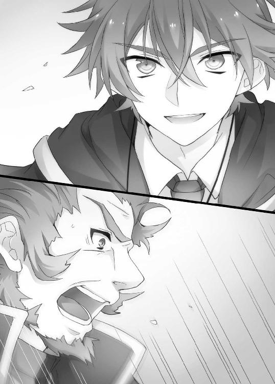

| 扉の魔術師の召喚契約－その少女、最強につき－ (ＨＪ文庫) | |
| 空埜一樹 | |
| (2013) | |

第一章 少女、喚ばれる
「アヤメ、もう帰るのー？」
携帯電話で知り合いにメールを送っていたアヤメは、自分を呼ぶ声に振り返った。先ほどまで居たファーストフード店の前で、友人達がこちらを見ている。
「うん、ちょっと用事があるの」
頷いてから告げると、友人の内の一人が、不満そうに唇を尖らせた。
「えー、なんで？ アヤメいないとつまんない。これから皆で、駅前に出来た新しいカラオケのお店行こうって言ってるんだけど」
「ごめんね、お父さんが早く帰ってこいってうるさくてさ......」
苦笑したアヤメに、別の一人が察したように額へ手を当てる。
「あー......そうか、そういえばあんた、そうだったよね。分かった。またね」
その言葉に、他の全員も納得したように、アヤメへ同情気味の視線を送ってきた。
「うん、本当にごめんね。それじゃ、また明日！」
アヤメは友人達に別れを告げると、その場から、彼女たちとは反対方向に歩き出す。
「......はあ。あたしもまだ遊びたかったなあ」
しばらく進んだところで大きくため息をつくと、アヤメは何気なく空を仰いだ。
初夏の空は夕方近くになってもまだ青く、目に痛いほど鮮やかだ。
「ま、しょうがないよね......」
諦め気分でそう呟いて、アヤメはもっていた鞄を担ぎ直した。
アヤメ――雛菊アヤメは、人より少し変わっているところがあるものの、ごくごく普通の高校生である。少なくとも自分としては、そう思っていた。
つまらない学校の授業やうるさい教師にうんざりしたり、進路や部活動のことで悩んだり。仲の良い友達とのおしゃべりや、ショッピング、バイトで楽しんだり。
ほとんど、そんな風に他の皆と変わらない、ごく平凡な日常を享受している。
そしてそんな日々は、きっとこれからも、少しの変化はあったとして、大体同じように過ぎていくのだろう。そのようなことも、アヤメは考えていた。
「さて、帰って用事が済んだら、なにしようかな。まずはこの前買った服を着てみて......」
その日、その時。――その瞬間、までは。
「......って、え？」
突然、ヴン、という虫が羽ばたくような音と共に、アヤメの足もとに奇妙な円形の文様が展開された。自分を中心として広がるそれは、複雑怪奇な軌道を描く線によって形作られている。
「な、なにこれ......!?」
慌てて周囲を窺うも、通りかかる人や近くにたむろしている学生たちは、アヤメに起こった異変に気付いていないかのように平然としていた。まるでアヤメの周囲、数メートルだけが現実と切り離されてしまったかのように。
「ちょ、ちょっと、なんだか分からないけど、これ、まずいんじゃ......」
なんとなくではあるが、緊急事態のような気もする。アヤメはそう直感した。とりあえずは逃げ出そうと、アヤメは一歩踏み出す。
「......うっ!?」
だが、まさにそれを狙っていたかのように、眩暈が襲ってきた。抗うことの出来ないそれに、いけないと思いながらも、アヤメはふらふらとうずくまる。
「あ......これ、なに......が......」
現状を把握しようとした、まさにその刹那。
――自分の意識が、闇へと落ちていくのを感じた。
アヤメが次に目を覚ました時、そこは見知らぬ部屋だった。
「......うっ？」
覚醒時特有の、ぼやりとした意識のままで、眼前に広がる光景を眺める。
じめついた雰囲気を持つ室内は、無機質な岩壁に囲まれていた。照明のために備え付けられたのであろう灯りはしかし、電球ではなく今時珍しいランプ式だ。そのためかひどく薄暗く、ただ、周囲に積み上げられた異常な量の書物だけがやけに目についた。
（気絶......してたの？ あれからどれくらい......？）
携帯電話を取り出して確認すると、あの奇妙な現象に襲われてから数分ほどしか経過していない。はっとしてアンテナを見るが、残念ながら圏外だった。次に、アヤメは自分の体を見下ろす。着ているのは学校の制服だった。ということは、あの状態のままこのわけのわからない場所に来てしまったようだ。
思わず自分の体をまさぐるが、どこも怪我をしている様子はない。長い黒髪も少しの乱れはなく、まるであの場から瞬間移動でもしたようにさえ思えた。
少なくとも薬かなにかをかがされて、誘拐されたというわけではなさそうである。
（だとすれば......どういうこと？）
アヤメが座っている床には円形の奇妙な文様が描かれていた。それはつい先ほど、自分が居た場所に現れたものと同じもののようである。
「これ、なんだっけ......魔法......陣？」
なんとなく思い当たる内で近いものを引っ張り出して、首を傾げた。その手のものにうといアヤメでさえ記憶しているくらい、漫画やゲームといった媒体では、有名な代物だった。しかし、こうして現実にあるのを見るのは初めてである。
その時、不意に、薄暗い闇の中で何かが輝いたような気がした。すると間もなく、
「よ、よし、成功だ......！」
前方から、声がした。突然中空に光が灯り、アヤメの目の前に、驚いた様子で身を引く、見知らぬ少年の姿が現れる。年の頃は十五、六。つまりアヤメと同じ歳くらいだ。
赤茶けた髪を無造作に伸ばし、どこか不遜な顔つきをしているものの、その造りは中々に整っていた。青白い肌に、鳶色の瞳がランプの火を映している。外国人なのだろうか。しかし先ほど聞こえたのは、流暢な日本語だったはずだ。
「しかも、すげぇ可愛い！ やった、やったぞ俺！ さすが俺！ 完璧すぎるぞ、俺！」
少年は一人で勝手にテンション高く盛り上がり、固めた拳を掲げていた。
「......誰？」
尋ねた後で、アヤメは思わず怪訝な顔をする。少年の格好がひどく珍妙だったからだ。
ネクタイをつけた白いシャツに漆黒のパンツを履いている。胸からは、古めかしい鍵を紐で繋いだ、ペンダントのようなものを下げていた。が、そこまではまだファッションの域だ。問題は、その上に羽織っているものだった。
少年は、まるで童話の魔法使いが着ているような、ぶかぶかのローブを纏っている。
アヤメの不審な眼差しに気付いたのか、紅潮した頬でアヤメのことを見つめていた少年は、はっと我を取り戻したような表情をした。次いで取り繕うように、咳払いをする。
「......おっと失礼。ようこそ、異邦人。俺は、お前の来訪を心より歓迎する」
そして今更に格好つけたかのようなポーズで、アヤメにこう告げてくるのだった。
「俺の名前はロイ――ロイ＝シュトラス。魔術師、さ」
魔術師、とアヤメは口の中で繰り返してみた。確かに、ローブを着ているからにはそうなのだろう。逆にこの格好で「実は八百屋です」と言われる方がツッコミどころがある気がする。しかしだからと言って大真面目な顔で「魔術師です」と言われても困るところだ。
「えと......なにそれ、ギャグ？」
「いやいや、本当だって」
確かにその言葉の通り、ロイと名乗った少年の顔は、至って真面目である。
「......ま、いっか」深く突っ込むとエキサイトしそうなので、アヤメは質問の方向を変えることにする。「ここはどこなの？」
「ここは、魔術師育成学院アストレースだ」
少年の答えに、アヤメはがっくりとうなだれた。不味い。まともな会話が出来ない。
「......あの、ごめんね。あたし、あなたの作ったお話に付き合っている暇はないの。早く、本当のことを答えてくれると嬉しいんだけどな。ここはどこなの？」
「だから、レイオード王国領地内にある魔術師育成学院アストレースだ。この国で魔術の才を認められた人間は、皆、ここに入学してくる」
「はう、設定を乗っけてくるとは......」
どうやら彼は己が魔術師であると、心から信じきっているようだ。こういう人種が世の中にいるとは聞いてはいたものの、実際に対応すると疲れてくる。
「......そろそろちゃんと答えてくれないと、あたしにも我慢の限界があるよ」
「いや、待て待て。俺もまさかここまで完璧に成功するとは思っていなかったから、ちょっと興奮してた。お前の心配も尤もだ。だから今、きちんと説明する」
「あ、やっとまともになった！ 嬉しい！」
そうアヤメが喜んだのもつかの間。ロイと名乗った少年は、はっきりとこう宣言した。
「ええと、まず初めに......魔術でお前をこの世界に召喚したのは、この俺だ。ここはお前の住んでいたところじゃない。簡単に言えば――異世界だ」
前言撤回。どうやら彼は、骨の髄までどっぷりと妄想に浸っているようだ。
「......そうなんだ。それはすごいね。でも、ちょっと質問いい？」
「なんでも訊いてくれ」
「ここがあたしのいた世界じゃないとして、どうしてあなたは日本語を喋っているの？ それっておかしいよ。だって日本って国がないのに日本語があるわけないしさ」
少し驚いたように目をしばたたかせて、ロイは腕を組んだ。
「ふむ、いい質問だ。中々に鋭いな」
はあ、と間の抜けた返事をしたアヤメに、彼は頷いて、
「簡単な話だ。さっきお前が現れた時、素早く【言語理解】の術をかけておいた」
意味が分からず、アヤメは「ますたーず・らんぐ？」とロイへおうむ返しに問いかける。
「国や種族に拘わらず、相手の話す言葉を容易に理解することが出来るようになる魔術だ。これがあるおかげで、他国との貿易などに随分と役立ってる」
むう、とアヤメは考えこんだ。一応の筋は通っているように聞こえるが、しかしそれは彼の言う【魔術】が実際に存在すると仮定しての話だった。いずれにしろ、
（そう。よりにもよって【異世界】だなんて......信じられるわけない）
アヤメが疑わしげな眼差しを向けていると、ロイは息をつく。
「まだ信じられないか......仕方ない」
言って彼が指を鳴らすと、明かりが消えた。そして手をかざすと......再び、光が灯る。
ぼやりとしたいくつかの青白い光が、ロイの掌の上で踊っていた。それらは互いに引かれあうように集まると――ぽん、という音を立てて一塊の玉となる。
「うわ!? な、なにしたの!?」
ロイが放ると、それは周囲を明るく照らしながら空中を漂い始めた。
「これが魔術だ。その様子だと、お前の世界にはなかったモノのようだな」
驚くべき所業を成し遂げたにも拘わらず、ロイの顔色は何一つ変わらない。まるで、極々当たり前のことでもしたかのようだった。やがて、光は溶けるように消え去る。
「一番初歩的な【輝玉】と呼ばれる術で、少し魔術の才能があれば子どもでも出来る」
「し、仕掛け！ なにかの仕掛けがあるんでしょ!?」
そうとしか思えない、と言ったアヤメにロイは、不満げな顔をした。
「これでもダメなのか？ 異世界人ってのは疑い深いものなんだな......」
「と、とにかく、異世界だなんて嘘ばっかりついてないで！ 本当のこと言ってよ！」
「い、いや、だから、さっきから俺は嘘なんてついてないって！」
「そんなこと言われたって、大体ね......！」
そこまで言ってから、アヤメはふと気が付く。
「......って。ねぇ、そういえばさっきあなた、あたしを召喚したとか言ったよね？ それって、つまりあなたがあたしを呼んだってこと？」
アヤメの質問に、ロイは頷いた。
「じゃあ、ここが異世界だとかあなたが魔術師だとか、そういうのはおいといて......何のために呼んだの？ 目的を教えてよ」
アヤメのその言葉に、彼はやれやれといった感じでその場に腰を下ろす。
「よし、やっと本題に入れるみたいだな。嬉しい限りだ」
「そ、そう。そこが一番重要だよ！」
あまりに理解出来ないことの連続で、ついそのことを忘れていた。
「じゃあ、単刀直入に言おう」
ロイは、何の躊躇いもなくはっきりと、こちらに向かって言ってきた。
「俺の――彼女になってくれっ!!」
たっぷり数十秒、アヤメの中で時間が止まる。
「......え？」
ようやく口に出来たそのアヤメの短い言葉に、ロイは不思議そうな顔をした。
「彼女だ。もしかしてそっちの世界にはそういう言葉がないのか？ 互いに親密な関係になるということだな。恋人、ともいう」
「いやいやいや、ある！ ちゃんとあるけど！」
「それなら話は早い。恋人になってくれ。今日から。いや、今すぐでもいいか。最初のデートはどうする？ 公園が定番らしいな。アイスを食うらしい。甘いものはそれほど好きじゃないけど、それくらいは譲歩する。彼氏だからな、当然だ。その代わりと言ってはなんだけど、湖でボートに乗ってくれ。そしてお前には手作りの弁当をもってきてもらいたい。希望としてはアシノフ牛のローストビーフがいいけどそこまで贅沢は言わない。サンドウィッチで我慢する。ますます理想的な相手だな！ その後は夜景の綺麗な場所をチェックしてあるから、それでも眺めてからそして」
「ままま、待って待って待って！」
うっかりアヤメが茫然自失としている間にどんどんと話が進んでいる。この男、どれだけ前から計画を練っていたのか。デートプランの詰め方が半端ではない。
「なにも答えてない内からどれだけ遥か未来の話をしてるのよ！ ひ、引くよ!?」
そんなこちらの言葉に対して訝しげな表情を見せるロイに、アヤメは肩を落として黙り込んだ。ゆっくりと、深呼吸する。十分に気持ちを落ち着かせてから、
「つまり、あなたはあたしを彼女にするために、こんなところまで連れてきたってこと？」
「ああ、そうだ！」
何の罪悪感もない顔で、ロイはそう言ってのけた。
「......彼女にするために？」
「もちろん、そのためにだ！」
アヤメは、沈黙する。そうか、と、自分の中で全てに結論が出た。そういうことか、と。
ここが異世界かどうかなど、どうでもいい。はっきりしているのは、ただ一つ。
この男が――最低だということだ。
「......もういい」
アヤメは静かに立ち上がった。そして、ロイの前に立つ。
「ん？ どうした？」
小首を傾げる彼の額に向けて、すっ――と手を出した。
中指と親指の先端を合わせ、ちょうど丸を作るようにする。
「これが、あたしの」
そしてアヤメはロイに向け、勢いをつけて。
「返事だよっ！」
――そのまま、デコピンした。
●
吹っ飛ぶ。
「......っ!?」
と思った時にはもう、ロイの身体は思い切り背後の壁に叩きつけられていた。
「ごぶっ......がっ、はあ......!?」
ロイは膝をついてうずくまる。背中が尋常ならざる痛みを訴えていた。
「な、なんだ......!? 今の、なに......!?」
意味が分からず、自分の中で混乱が生じる。
先ほど少女は指を合わせて奇妙な形を作った後で、その内の一本を弾いてロイの額を打った。ただそれだけだ。
なるほど、確かに押さえ込まれた圧力から解放された指は、中々の効果を持って相手を打撃するだろう。しかし、だとしてもそれはただの悪戯程度に過ぎない。
まかり間違っても、大の男を部屋の端から端まで弾き飛ばすほどの威力はないはずだ。
「さっきから聞いてれば、嘘だけならまだしも、こっちの意志も聞かずに彼女になれとかデートをしろとか。ふざけたことばっかり！ もー、怒った！」
ゆっくりと、少女がロイの方に向かって近づいてくる。その姿は小柄で可愛らしい顔をしているためか、ひどく幼く見えた。だが、今しがた彼女がやってのけた荒業をもってすると、とてもではないが見た目だけで判断するわけにはいかない。
「い、いやいや、すみません！ ほんと、なんかすみません！ てか、お前、何者なんだ!?」
少女はロイの目の前に立つと、にっこり笑って答えた。
「雛菊アヤメ。――ただの、ジョシコウセイだよ！」
そのまま彼女は、爪先を無造作にロイの横にある壁に叩きつける。
めぎゃふぉごぅ！
強烈な異音が発生すると同時に、そちらへ視線を移したロイは戦慄した。
岩壁が――頑丈さでは類を見ないそれが、思い切り陥没している。
瓦礫が音を立てて崩れていき、細かにつぶれた岩が粉塵となって舞い上がっていた。少女......アヤメが、そこからゆっくりと足を引き抜く。
「わあああああああああ!?」
思わず悲鳴を上げた。上げない人間がいたら見てみたい、とロイは強く思う。
「じょじょ、ジョシコウセイってなんだ!? 魔獣!? いや、伝説に聞く魔神の類いか!? 世界を、世界を滅ぼすつもりなのかお前は!?」
「失礼ね！ 女に子に高い生徒と書いて、女子高生。つまり、ただの学生だよ！」
「ただの学生は蹴りで岩壁をぶっ壊さないんですけどおおお！」
「......まあ、あたしがちょっとだけ特殊だからかな？」
「ちょっとの範囲が広すぎるだろ!?」
ロイは、あたふたとその場から離れた。
（とんでもない奴を呼び出してしまった......！）
こんなはずではなかったのに。予想ではこちらが優位に立てるはずだったのに。
「もー、ダメでしょ、逃げちゃ！」
ばきごふごきぐき。アヤメが指を尋常ならざる音で鳴らしながら、にこ、と笑う。先ほどまで動揺していた人間と同じ存在とは思えない。
「ちょ、やめて！ こっちに来ないで！ 来ないでー！」
「呼び出したのはそっちなのに、来るなってどういうこと？......まあ、いいけど」
そう言うと、アヤメは壁の破片を拾い上げ、それを軽い動作で投げてきた。
ひゅんっ、と駆け抜けたような音が耳元でした直後、背後で大砲でもぶち当たったかのような轟音が鳴り響く。ロイは思わず振り返った。......先ほどまで存在していた本棚が跡形もなくなり、代わりに壁に巨大な穴が空いている。
「この距離から、動けなくする手段だってあるしね！」
「ぎゃあああああああ！」
「さあ、痛い目みたくなかったらあたしをここから解放して、家まで送りなさい！ さもないと――ほんとに明日が見れなくなるかもしれないよ？」
「可愛く絶望的なこと言わないでくださいっ！」
アヤメはロイのツッコミに微笑み、再び転がっていた破片を拾って振り被る。このままでは本当にぼろぼろにされかねない。そう判断し、ロイは急いで手をかざした。
「こうなったら......！ 捕らえよ、【束縛】！」
中空に青白い光が点る。それらは粒子となって散り、瞬く間に実体化して一本の長い鎖となった。鎖は蛇がのたくるように空中を走ると、ぎょっとするアヤメの体にまとわりついて締め上げる。
「きゃっ......！ この......！ なに、これ！」
「それは拘束魔術だ！ 一度捕らえられれば最後、暴虐男でさえ抜け出せないって代物だぞ。大人しくこっちの言うことを聞くっていうなら――」
「ヤッ！」
アヤメが少し両腕を広げると、鎖が弾け飛んだ。
「解いた――っ!?」
破壊された鎖は魔術の効力を失い、粒子化すると消え去ってしまう。
「んな馬鹿な......！ じゃあ、これならどうだ！ 盛れ！ 【焔散】！」
ロイが手を振り払うと、眼前に人の頭ほどもある、球形をした炎の塊が出現した。火系の中ではレベルの高い魔術だ。一度放てば爆散し、辺りを火の海と化す。
「どうだ！ ぶつけられたくなければ、降参しろ！」
もちろん、直撃を喰らえば火傷どころでは済まない。だからロイからすればこれは脅しのつもりだった。しかしアヤメは小首を傾げて、
「やっていいよ？」
「なっ......!? いやいやいや！ 怪我じゃ済まないんだぞ!?」
「いいから、やってみてよ」
そこで彼女は、不敵な笑みを浮かべる。さすがに、ロイは迷った。しかし、威力は最小限に絞ってあるし、とりあえず彼女を止める必要がある。加えて、もしもの時には治療術を使うことも可能だ。つまり、万が一怪我をしたら、それで治せばいいのである。故に、
「後悔、すんなよっ！」
思い切って、ロイは炎球を放り投げた。自由を得た攻撃の意思は、唸りを上げて相手に襲い掛かる。
「――ハッ！」
だがアヤメが拳を叩きつけると、爆発音と共に一瞬にして炎は虚しくも塵となった。
「ええええええええ!?」
ぷすぷすと音を立てる手を振って、彼女は息をつく。そして、口端を上げながら、
「大人しく言うことを聞けば......なにかな？」
一歩、また一歩と踏み込んでくる。そんなアヤメにロイは、震える声で言った。
「......大人しく言うことを聞くので、勘弁して下さい」
魔術。――それは即ち、生命の体に宿る【魔力】と呼ばれるエネルギーを操り、森羅万象を自在に扱う【術】である。
魔術を使う者は【魔術師】と呼ばれ、貴重な専門職として国家に取り扱われていた。
というのも、そもそも魔力というものは、誰もがもっているものではないからだ。選ばれた人間のみが持ち得る、特別な才能なのである。そのため彼らは少しでも才能があると判断されれば、世界各国にある魔術師育成学院への入学を許された。もちろん入学金や学費は無料。それどころか在学中、そして卒業後も国からの補助金として、生徒へは月にいくらかの給料さえ出るのだった。
卒業した魔術師たちは出身国の騎士団に所属し兵力となったり、一般市民からの依頼を受けてそれを解決したり。あるいは【魔術道具】の開発に従事する者や、無価値なものを価値あるものへと変える【錬金術】と呼ばれる実験の研究者として活動する者などもいた。
そしてロイもまたその才能を高く評価され、在学している魔術師の一人なのである。
「ふぅーん」
それまで話を聞いていたアヤメは、口にフォークを咥えたままでこう言った。
「とてもよく出来た設定ね。作家になるといいと思う！」
「だから！ 嘘じゃない！」
ロイが机を強く叩くと、載っていた皿の山が崩れる。それにアヤメは短く、息をついた。
「そう言われても......魔術とか異世界とか、常識的に考えてありえないよ」
「さっきあんだけ常識はずれな行動を連発しといて、お前......」
「ちょっと蹴りで壁を壊しただけでしょ！ 常識の範囲だよ！」
「お前の世界の常識は、ぶん投げた石ころで本棚を粉砕するのか!?」
「............。うん」
アヤメは露骨に目を逸らす。絶対に嘘だ、とロイは確信した。やがて、彼女は言う。
「まあ、えと、ひとまず冗談は置いておこう、うん。......そっか。本当にあたしがいたところとは、違う世界なんだね」
「え？ 信じるのか？」
「だって、信じるしかないよ。さすがに......こんな状況じゃね」
肩を竦めて、アヤメは周りを見回した。
今、ロイはアヤメと共に魔術師育成学院アストレース――その地下にある食堂に来ていた。あの後、なんでも言うことを聞くと言ったロイに彼女は「お腹が空いたからなにか食べさせて」と要求してきたのである。
だだっ広い部屋にはいくつものテーブルが並んでいた。ちょうど昼休みだったらしく、そこかしこに学院の生徒たちが座り、彼らはそれぞれ思い思いに時を過ごしている。その全てが学院より支給されたローブを身に纏っており、ほとんどは人間である。
だが――中には肌にわずかな鱗の生えた者や、手に水かきがある者、狐のような耳をした者。他には虫のような羽を生やした、人の掌ほどの大きさしかない者もいた。
彼らは【亜人】と呼ばれている。数は少ないが、もちろん、この世界の住人である。
かつては差別問題や宗教絡みのごたごたで追われる身となっていたらしいが、今は世界的にそういった思想を排除する動きが大きくなっており、国によっては他の人間と変わらぬ扱いを受けている者も多かった。ここレイオードもその一つである。
「ああいう人たちが普通にうろうろしているのを見ると、さすがに嘘だとは思えないよ。それでもまだ......実感はないけど」
「まあ、無理もないか......。突然、異世界だと言われたら誰でもそうなるだろうし」
しかし、それにしてはあまり驚いている様子がなかった。そのことをロイが尋ねると、彼女はわずかに苦笑して、
「......現実離れしていることに巻き込まれるのはある程度、慣れてるから」
それだけ言って、後は何も口にしなかった。気になる台詞だったが今は置いておく。ちなみに今、アヤメはロイから借りた予備のローブを頭からすっぽりと被っていた。彼女の着ているあちらの世界での服は、さすがにこういった場所では目立ち過ぎるからだ。
「それで、あたしみたいに呼び出された人間はどれくらいいるの？」
アヤメは持ち上げたホルホ鳥の丸焼きにかぶりつき、口の中で咀嚼しながらそう言った。
「公式的には、一人もいないことになってる」
ロイはそう答える。すると彼女は目を丸くして、「え？」と首を傾げた。
「いないって......どういうこと？」
「そのままだ。どの歴史書を紐解いてみても異世界から召喚された人間なんて存在しない」
「ちょ、ちょっと待って。じゃあ、あたしはどうなるの」
そう言いながらアヤメはスプーンを手にとって、大きく盛られたマッシュポテトをごっそりととる。そのままポテトを口に入れて食べながら、今度は焼き魚のキルシュソースがけをフォークに突き刺した。
「どうでもいいけどよく食うね、お前!?」
「育ちざかりなの。こっちの世界のご飯も美味しいね！」
「......その割には育っていないように見えるけど」
そう言ってロイは、アヤメのとぼしい胸元を指差した。途端、アヤメはかっと顔を赤くして、体を隠すよう自分自身を抱きしめる。
「む、胸のことは言わないでよ！ これから大きくなるの！ ま、まだ十六だし！」
「将来に期待したい気持ちは分かるけど、俺と同じ歳でそれだとこの先も......」
その姿がいじましく、同情してそう告げたロイに、アヤメは頬を染めたままで叫んだ。
「う、うるさいなっ！ ど、どーせ食べた分、全部筋肉にいってるよ！ クラスの男子にも陰で、脂肪と共に色気も消えたとか言われてるよ！......う、ううー」
言っている内に自分でも悲しくなってきたのか、彼女は台詞の途中で、落ち込んだかのように項垂れてしまう。
「......いや、悪い、そこまで気にしていたとは」
思わぬ反応に、ロイは素直に謝ることにした。アヤメは頬を膨らまし、そっぽを向く。
「もういい！......あ、あんまりおっきいと戦闘でも邪魔になるんだよ。だから、必要最低限あればいいの。そ、それに、これからだし」
「そ、そうだな。これからだな。いやほんと、将来が楽しみだなぁ」
己に言い聞かせるかのごとく呟いている彼女を慰めようと、ロイはそう言った。
「......ふんだ。で、話を戻すよ。過去に異世界から召喚された人間がいないのに、あたしがどうしてここにいるの？」
アヤメが先ほどまでのことを吹っ切るかのようにそう尋ねてくるのに、ロイは頷く。
「あ、ああ。だから今までは、の話だ。つまりお前が、歴史上初の異世界来訪者ってことになる」
「......え、えええ!?」
アヤメは驚いたような声を上げ、こちらに向かって身を乗り出した。
「ど、どうして今まで誰も出来なかったようなことを、ロイみたいなヘタレ童貞むっつり無愛想ど変態が出来るの!?」
「こ、ここぞとばかりに悪口を並べるな！ 後なんで童貞ってわかる！」
「だって......恋人欲しさに他の世界から女の子呼ぶような人に、彼女いると思えないよ？」
全く以て反論が出来ない。ついでに童貞というのも図星である。
「とりあえずそれはいいとしてだ......」
「え、やっぱり童貞なの？」
「うるさいな！ これ以上俺を傷つけてなにが面白い！」
思わず食って掛かると、アヤメは笑いながら「ごめんごめん」と返してくる。まったく、と荒々しく息をつきながら、ロイは話を再開した。
「実はな。過去に一人だけ、【異世界召喚】に成功した奴がいるんだ」
「......そうなの？ でも、それなら、どうしてさっきいないなんて言ったの？」
「あくまで公式的には、の話だ。恐ろしく昔の話で、きちんとした記録が残っていないんだよ。ほとんど伝説に近い。だけど、ある高名な魔術師がかつて異世界からお前と同じ黒髪の人間を呼び出した、とはずっと昔から言われている」
「あたしと同じ？......じゃあ、日本人なのかな」
よく分からないことを呟くアヤメに怪訝な顔をしつつ、ロイは続けた。
「だから、理論上は出来るんじゃないかと言われていたし、実際、いくつかの方法も考え出されてた。だけど、やり方は難しいし、成功するかどうかも分からないのに払う犠牲だけはとんでもなく大きいから、誰もやらなかったんだよ」
「へぇ。なのにロイは出来たんだ？」
「魔術師ってのはそれぞれ自分と相性のいい魔術っていうのが存在する。それにそぐうものであれば扱いやすくなるし、少しの魔力でレベルの高い術を使うことも可能になるんだ」
「......それで？」
「そして俺の得意な魔術は――【物質転移】だ」
怪訝な顔をしたアヤメへ、ロイは説明してやる。
「魔力をもって世界の【仕組み】に働きかけ、その境界を曖昧にし、別の場所から物体を引っ張り込む――つまりはある場所からある場所へ物を移動させる術だ」
「すごいんだかすごくないんだか、よく分かんないなあ」
「なら、想像してみてくれ。何もない場所にいきなり巨大な岩を降らせたり、一軒家を丸ごと何の作業もなく、他の土地へ移すことも出来るんだぞ？」
アヤメは驚きを示すように目をしばたたかせた。ようやく理解出来たらしい。
「んで、結論として、俺と相性のいい魔術は世界そのものの仕組みを弄るということにかけては、他に類を見ないくらい優れているってことになるんだ」
「ああ......だから【異世界召喚】なんだね」
彼女は飲み込みはそう、悪くないらしい。ロイは気分よく頷いた。
「さっきも言ったけど、別の世界の人間をこちらに呼び出す術っていうのは、何人かは思いついていた。でもこちらとあちらの世界を分かつ――あくまで観念的な意味だが【壁】を壊すための魔術理論を構築することが非常に難解......いや、不可能とさえ言われていたんだよ。でも俺は、その研究を成功させた」
「傍で聞いてると簡単そうだけど、そうでもないのかな。何気にロイってすごかったり？」
「......どうだかな」
「だって世界初なんでしょ？ よっぽど才能がなければ出来ないことじゃない」
ロイは敢えてアヤメにはそれ以上なにも言わず、「とにかく」と声を発した。
「まぁ、そういうわけで、お前はこちらの世界に足を踏み入れたってことになる」
「うん、なんとなくは分かったけど......。でもさ」
納得がいかないような表情で、アヤメが尋ねてくる。
「なんでロイはそんな大偉業を......彼女欲しいなんて理由で実行したの？」
「べ、別にいいだろ」
「む、人を勝手に呼んでおいてその言い草はないでしょ。ねえ、なんでよ」
「いいだろ！ 大体、こっちだってお前を呼びたくて呼んだんじゃないぞ！」
ロイはそれ以上の追及を避けるため、話の矛先を変えることにした。
「ちょっと！ なに、その言い方！ あたしみたいな可憐な美少女のどこが不満なの！」
「可憐ぶふっぷぷ」
「......またデコピンするよ？」
「いやほんと見たことないくらい絶世の美少女ですよね」
アヤメの台詞に本気を見て、ロイは即座に対応を変える。
「ロイって結構、ヘタレだよね......？」
「誰だってお前みたいな凶暴棘竜を前にしたらそうなるよ」
「なんとなく語感で馬鹿にされてる気がするんだけど、それって悪口？ そうだよね？」
半眼で見てくるアヤメに、ロイは口笛を吹いて誤魔化した。
「......ところで、今度はこっちが訊きたいんだけど。結局、アヤメって何者なんだ？ お前みたいなのが、そっちの世界じゃ普通なのか？」
「......別にそういうわけじゃないよ。さっきも言ったけど、あたしはちょっと家系が特殊なの。お父さんがとんでもない化け物――もちろん比喩的な意味だけど――でね。【鬼喰い】とまで呼ばれた超常識外れの力の持ち主だから」
訝しげな顔をしたロイに、アヤメは唸りながら、
「鬼......こっちの世界じゃいないのかな。ええと、伝説上の恐い化け物だよ。存在しないはずの、そんなやつさえ食べていてもおかしくない、と思われるほどの人ってこと」
ロイは冷や汗が流れるのを感じた。それは本当に、人間なのか。
「それで、そんな父親に育てられたものだから、あたしも、ちょっと他の同級生よりは力が強くなっちゃったかもしれないね」
ちょっとどころの騒ぎではない気がするが、それよりもアヤメが【常識外れ】と称するその父親の方がロイには気になるところだった。
「......ちなみにその親父さんは、アヤメより強いのか？」
「あたしじゃ相手にもならないかなあ」
アヤメのその答えに、ロイは思わずその場に突っ伏す。
（......とんだ計算違いだ）
とんでもない世界から、とんでもない奴を呼び出してしまった。多くのものを失い、一世一代の大博打を銘打って行ったことなのに、その結果がこのザマか。
「......あ、そだ。ところでロイ、うっかり訊き忘れてたけど」
その時、不意にアヤメが、ロイに質問を投げかけてきた。
「あたしは、いつ元の世界に帰れるの？」
「............うっ」
やはりそれを訊いてくるか、とロイはうめき、恐る恐る顔を上げた。
「ん、どしたの？ せっかくだし、出来れば観光してお土産とか買いたいな、と思って。それくらいの暇はある？」
「......。ああ......いや......そのことなんだけど」
少しずつ目を逸らしていく自分を、アヤメが眉を顰めて見てくる。一瞬、迷ったが、
（まあ......隠しても、仕方ないか）
どう取り繕っても出せる結論としては同じことなのだ。やはりここは、正直に言うべきだろう。そう決断して、ロイは口にした。
「......実はな。帰れないんだ。お前は、元の世界には」
その瞬間、アヤメの表情が、固まった。しばらく時が止まったかのようにいた彼女だったが、やがてどうにかといった感じで声を絞り出す。
「......え？ えっと......あ、え？ う、嘘でしょ？」
完全にアヤメは動揺しているようだった。どうやら先ほどからの彼女の余裕は、いずれ帰れるであろうという安心からきたものだったらしい。
「残念ながら、嘘じゃないんだ。帰れない。お前は。元の世界に。無理。多分、絶対」
念を押すように、ロイは単語を並べてみる。すると、
「な、なんでよっ！」
両手で、ばんっ！ と机を叩いてアヤメは立ち上がった。つもりだろうが、しかし実際にはめきゃっ！ という音がして、机の一部が破壊される。半端ないこの女、とロイは思った。周囲にいた生徒たちが、何事かとこちらに視線を送ってくる。
「い、いや、落ち着いてくれ。いや、ください！」
「だ、だって......帰れないって、ど、どういうこと？ 答えてよぉ！」
アヤメが半泣きの状態で、ロイにずいと迫ってきた。
「事と次第によっては、泣いちゃうわよ!? あたし、泣くと、す、すごいんだからね！」
「分かった！ 分かったから落ち着いてください！ なんか大変そうなのは大体予想つくからどうか心を静めて下さい！」
「......じゃあ、教えてよ」
ようやくアヤメが離れてくれた。泣くとどうなるのかは非常に気になるが、追及はやめておこう、とロイは心から思った。
「ええと、な。正確に言うと、帰る手段はある。さすがに俺だって、一方的に呼びつけてこっちの世界に閉じ込めるなんて真似はしない。鬼畜過ぎるからな」
「一方的にわけのわかんない世界に呼びつけるのだって、十分にひどいよ」
「......いや、はい、その通りですね。と、とりあえず、次に進んでいいですか？」
涙目でそう言って睨んでくるアヤメに苦笑いしつつ、ロイは続けた。
「でも、お前は帰れないんだ」
ばき！ と音を立ててアヤメの触れていた皿が粉砕する。
「お、落ち着いて！ 話を聞いて下さい！ そう、心にゆとりを持とう！」
「わ、わかってる。今のはちょっと慌てただけ。つ、続けて」
「ああ。つまりなんというか......正確には帰る手段が【あった】というべきか」
「......じゃあ、今はもうないの？」
ロイは、深々と頷いた。
「ど、どうして？ なにかトラブルでも起きた？」
アヤメが、不安そうな顔でこちらを覗き込んでくる。
「いや、えーと......なんだ。本来、魔術っていうのは使う為に魔力が必要になるんだが、その他にも要るものがあるんだよ」
ロイは息をつき、語り始めた。
「それは、時間だ。あらゆる現象を起こすため、必要なだけの魔力を一つの形へと固め、体内から外へ編み出す行為――これを俺たち魔術師は【魔力を練る】と言ってるんだが――をするためには、それが高レベルの魔術であればあるほど時間がかかるんだ」
「......それで？」
どうやらいくぶんか、冷静になったらしい。アヤメの態度が普通に戻る。
「【異世界召喚】は説明した通り、途方もない労力がいる超高難度の魔術だ。使うために魔力を練ろうと思ったら、いかに俺でも、それこそ十年以上はかかる」
「十年？ そんなに？ でも、だったら、そんな昔からロイは異世界召喚の魔術を使おうとし続けてたってことにならない？」
「ああ、普通ならな。でも考えてみろ、お前の言う通り【異世界召喚】ほどでなくても魔術を使うために相応の時間がかかるのだとしたら、いちいち手間がかかって仕方ないだろ。だから俺たちは、特別にある物を使うんだ」
「ある物？ だけどさっき、ロイ、そんなものなくても魔術使ってたよ」
「俺は人より身体に宿る魔力が高いんだ。だから大抵のものなら、時間をかけなくても扱うことが出来る。でも普通は――」
とロイが更に説明をしようとした、その時だった。
「これはこれは。騒がしいと思ったら、かの高名な【扉の魔術師】――ロイ＝シュトラスくんじゃないか」
耳障りな甲高い声が聞こえ、ロイは振り返る。そこにはあからさまに尊大な態度で、胸を反らす男がいた。
「普段は研究室に引きこもって授業も受けない癖に、たまに出てきたと思ったら揉め事かい？ さすが、十代で字名持ちとなった方はやることが違うねぇ」
「......どなた？」
アヤメがこちらに耳打ちしてくるが、ロイは怪訝な顔をしたままで、こう言った。
「誰だっけ？」
その言葉で、男は浮かべていた薄ら笑いを引きつらせる。
「......相も変わらず失礼が服を着ているような男だね、君は」
咳払いを一つ、彼は気を取り直したように、キザったらしい態度で両手を広げた。
「ぼくの名はそう――セラフルス＝リンクラスト！ かつて【隻眼の赤法師】の字名を与えられた偉大なる魔術師、アルフレイ＝リンクラスト様の血を引く正統なる後継者だよ！」
「さっきから、なんとかのなんとかってなんのこと？」
アヤメの質問に、ロイは頬を掻きながら返す。
「あー。優秀な魔術師には国から実力を認められた証として、字名を授与されるんだよ。ついでに言えば専用の研究室と膨大な研究費も与えられる」
「ロイの【扉の魔術師】っていうのも？」
「ああ。少し前にもらった。俺の場合はまだ学生だから、学院内に研究室がある」
アヤメが「ふぅん」と感心するように言った。ロイは男に尋ねる。
「それで、そのセルポロン様がなんの用なんだ？」
「せ、セラフルスだ！ なんだその、大事なものをこぼしそうな名前は！」
「そうだよー、ロイ。セルフプレイ様だってば」
「悲しいあだ名をつけるなああ！」
セラフルスが地団駄を踏む。それにロイは頭を掻きながら、
「セルポロンだかセルフプレイだかセラフルスだか知らないけど、用件は？」
「き、君！ このぼくを馬鹿にしてるのか！」
怒りに髪をくしゃくしゃと掻き回していたセラフルスだったが、やがて自分を見つめる周囲の視線に気づいたのだろう。はっとした顔をした後で、彼は自身を落ち着かせるように深呼吸し始めた。やがて、セラフルスは元の態度に戻って鼻を鳴らす。
「ふ、ふん。まあ、今更君の言動をあれこれ責めても仕方あるまい。本題に入ろう」
その指で真っ直ぐとこちらを差し、彼は、
「シュトラスくん。ぼくは兼ねてから疑問に思っていたことがあるのだよ。それは、どうして君のような人間が、字名もちとまでなれたのか――ということなのだ」
「知らねえよ、そんなこと......。退屈な授業に出る代わり、論文を書いたら単位をやるって言われたから適当にやってたら、勝手にくれただけだ」
「おかしいねえ。よほどの実力がなければ授与されない字名を、果たして適当にやっているだけの者がもらえるだろうか......？」
なにが言いたいのか、と怪訝な顔をするロイをセラフルスが馬鹿にしたような目で見る。
「ぼくは常ながらこう考えているのだよ。この【隻眼の赤法師】を先祖に持つぼくこそが、本来なら字名を授与されるべき人間である......とね。つまり、そう、ありていに、率直に、衒いなく言ってしまえば」
彼は、そこで口端を歪めた。
「シュトラスくん。君――不正しなかったかね？」
言うに事欠いて、とロイはさすがにあきれ果てる。
「してねえよ。そんなもん、興味ないし」
「さあてさてさて、ああ、さてさて。それはどうだろうかロイ＝シュトラスくん。世の中には、地位と名誉にあくなき欲求を持つ輩もいるからねえ......？」
それはお前のことだろ、と思いながらもロイは、
「要するに、お前を差し置いて俺に学名が授与されたのが、気に食わないってことか」
「......フン。言葉は悪いがそのようなものだ。だってそうだろう？ よりにもよってこの魔術師育成学院アストレースの最上級生にして、成績優秀であるぼくではなく、サボり癖のある中級生のキミを指名するなど、あってはならないことだからね。......なあ、そういうわけで、どうだろうか。もし、このぼくが君ほどに、いや、君よりも魔術に関して造詣が深いとなれば......そう、国も考えを改めるとは思わないかね？」
「あ、そうか、分かった！」
突然、アヤメが声を上げた。全員がそちらを向く。彼女は、得心いったように続けた。
「つまりセルフポロン様、あれでしょ？ ロイの才能に自分が敵わなかったのに、『いやだい、いやだい、ぼくの方が強いんだい。国が間違えてるんだい』ってダダこねてるんだ」
「なっ！ き、君!?」
「ダメだよ。自分の実力を過信し過ぎて相手の能力を評価できない人って、嫌われるよ？」
怒りで顔を真っ赤にして、セラフルスはアヤメに指を突き付ける。
「な、な、なんなんだ君は！ し、失敬にも程があるぞ！」
「そうだぞアヤメ、ダメだろ」
ロイは、アヤメにそう注意した。思わぬところから助け舟が入ったからか、セラフルスがきょとんとする。しかし、次にロイが告げた台詞によって、彼は爆発した。
「――そんな、本当のことをはっきり言ったら」
「き......君らはあああああああ！」
金切り声を上げて、セラフルスはローブの懐に手を入れる。
「も、もう我慢ならん！ ここで！ この場で！ 決着を、つけてやる！」
次に彼は、一枚のカードを取り出した。騒ぎを傍観していた生徒たちはそれを見て、慌てたように口々に叫ぶ。
「ぐ、【グリムワード】だ！」
誰かの「避難しろ！」という声を皮切りに皆が出口近くまで殺到し、場は騒然となる。
「ねえ、あのカードなに？ 皆、すごく怯えてるみたいだけど」
「......こりゃ説明が省けたな」
ロイはそう言って、アヤメの質問には答えず腰を上げた。セラフルスはにやりと笑う。
「武器も持たずぼくに立ち向かうとは愚かな！ 暴風よ、唸り飛べ！」
彼はすぼめた唇から、カードに向かって息を吹きかける。その瞬間、それは青白い光を放ち、たちまちそこから何十枚という同じカードを生み出した。
「うわ、マジック!?」
驚いているアヤメの前で、カードはまるで舞うようにしてセラフルスの周囲を回転し始める。彼は、声を張り上げた。
「踊れ風の化身――【空鳴刃】！」
轟、と衝撃波が走り、周囲の人間の服がわずかに切り刻まれる。そして生まれた一陣の鋭き風は、唸りを上げて一斉にロイへと襲い掛かった。
「きゃっ！」
思わず腕で己をかばうようにするアヤメ。一方、ロイはため息をついた。
「この程度の魔術でいちいち【グリムワード】を使うなよ......」
攻撃がぶつかる寸前、ロイは軽く手をかざして唱える。
「――駆けろ、【空鳴刃】」
たった一言。それだけで、セラフレスの放った風は掻き消えた。
「......!? な......同魔術で相殺!? しかもあの短時間、その上カード無しで!?」
「はいはい。面倒くさいから前口上なしだ。そのまま眠ってくれ」
容赦するつもりもなく、ロイは軽く指を鳴らす。
「弾けろ、【驚愕火】！」
その瞬間、セラフルスの胸が爆音を立てて弾けた。
「ぼふふすっ！」
そのまま彼は、もんどりうって倒れる。ローブが焦げ、ぷすぷすと煙を上げていた。
「え......ちょっと、この人、大丈夫なの？」
セラフルスが泡を吹いたまま気絶しているのを見て、アヤメがロイに問いかけてくる。
「大丈夫、ショックで意識が落ちただけだ。威力はあるが、相手を行動不能にするだけの術だからな。傷もないと思う」
ロイがそう告げると、アヤメは感心したように頷いてから言った。
「あたしにもこれ使えばよかったのに」
「使い方によっては丸焦げになる火炎魔術を、素手で消し飛ばした奴には効かんだろ......」
ロイは足元に落ちてきた、先ほどセルフレスの使っていたカードを拾い上げる。
「ほら、見てみろ。これは――【秘されし切り札】っていう魔術道具だ」
その表面は芸術的な細工が施され、中央には一陣の風を表すような絵が描かれていた。
「これには練った魔力を一定量、溜め込むっていう効果があってな。ようは魔力の貯金箱みたいなもんなんだ。魔術を使う為に魔力を練るには、レベルに合わせた時間がかかる。でも、あらかじめ練った魔力があれば、すぐに魔術を使うことが出来るって寸法なんだよ」
アヤメはロイの説明を聞きながら、興味深そうにカードをためつすがめつしている。
「この右下に書かれている数字は？」
「ああ。グリムワードってのは二種類あってな。一つ目が魔力を溜めておくためのもの。もう一つが魔力を吸収したカードを、仕舞った場所から使い手に転送するためのものだ」
頷いて、ロイはアヤメの持っているグリムワードの数字を指先で叩いた。
「人によって違うが、大体の場合、魔術ってのは大規模であればあるほど使用するグリムワードの数が多くなる。でも、そんなもんをいちいち持ち歩くのは面倒だろ？ だから連動するこれを使って、遠くの場所にあるカードを消費魔力量に応じて、現場で引っ張り出すんだよ。右下の数字は、使い手のグリムワード総所持数だ」
しばらく首を傾げていたアヤメだったが、やがて、「ああ」と手を打った。
「つまり、銀行とキャッシュカードみたいな関係ってこと？ 口座に入れておいたモノを、この別のグリムワードを使って引き落とすの？」
「......俺にはお前の言っている意味が分からないけど、納得出来たのなら、そういうものだと思ってもらって間違いはないと思う」
ロイがそう答えると、アヤメは「便利ねー」と感心した。で、とロイは話を再開させる。
「大抵の奴はこれで魔術を操る。俺だってレベルの高い魔術を放つ時はこのグリムワードを使う。お前をこの世界に召喚するためにも、当然、これを利用した」
目をしばたたかせるアヤメに、ロイは言った。
「ちなみに、お前を召喚した時に使ったグリムワードの数は――十万枚だ」
「十万枚？......それって多いの？ 少ないの？」
「大体の魔術師は一日にグリムワードを十枚作るのが精いっぱい。俺は人より魔力量が多いから三十枚は作れるけどな。つまり、俺にしたって一年に作れるグリムワードは、せいぜいが一万枚が限度だってことだ」
アヤメはようやく理解したのか、驚いたように目を丸くした。
「......ってことは、なるほど、十年はかかるね！」
「ついでに言っておくと、これはあくまで『俺の場合は』ってことだ。もしこれが普通の、平均的な力を持つ魔術師である場合――一生かかったって異世界召喚なんかできない」
「どうして、ロイだけが特別なの？」
「俺の魔力は量もその【強さ】も人並み外れてるからな」
特に自慢する気もなかったので、ロイはさらりとそう言って、
「さっき、あの男の魔術と同じものを、俺がグリムワード無しに使ったのを見ただろ」
「あ......うん。あれは、どういうこと？」
「同じ魔術でも魔力の強さで使う量が左右される。あいつが何十枚とカードを使わなきゃならないようなものでも、俺からすればたった一言で操れる程度でしかないってことだ」
懐に手を入れ、ロイは一枚のカードを取り出した。それをアヤメに渡す。
「さて、ここからが本題。これが俺のグリムワードだ」
それはセラフルスのものとはデザインが違っており、その中央には錠前が描かれている。右下の数値は、たった数千枚になっていた。
「これ......随分と少なくなってるみたいだけど」
「ああ。さっき言ってた『方法があったけどなくなった』ってのはそのことなんだ」
訝しげな顔をしているアヤメへ、ロイは言う。
「計算上じゃ、異世界召喚にかかるグリムワードの消費数は約五万枚。もし、呼び出した奴が本当に元の世界に帰りたいと言い出したら、残りの五万枚を使ってそれに応じようと思ってた」
「............むう」
「......い、いや、本当ですって」
思わずロイはたじろく。こちらを見るアヤメの目には、明らかな疑惑が満ちていた。
「い、言っただろ、自分勝手な理由で呼ぶ以上、こっちの世界に閉じ込めるような真似はしないって。だから、ちゃんと帰還させる方法は残してあったんだよ」
「じゃあ、なんで五万枚のはずが、十万枚もかかっちゃったの？」
ロイは、アヤメの言葉に息をついた。ぽつりと呟く。
「......正直に言うよ。完全に俺の計算違いだ。魔力消費量が、予想を遥かに超えてでかかった。不味いと思った時にはもう、魔術は発動していてな。止められなかった」
どうにか理由を誤魔化すことも出来ただろう。だが、失敗は失敗だ。自分のやったことには責任をとらなくてはならない。そう思って、ロイは頭を下げた。
「こればかりは何をどう取り繕おうが、俺のせいだ。本当に悪い」
「え......ちょ、ちょっと。やめてよ、急にしおらしくなるの」
予想外の対応だったのか、アヤメは戸惑ったようにあたふたと手を振った。
「......えと。でも、それなら、グリムワードを一度に大量生産すればいいんじゃ？」
ロイは、アヤメのその指摘に首を振る。
「残念ながら、それは無理なんだ。人によって差があるけど、魔力は使った量に応じて回復するのに時間がかかる。それを無視して造り続ければどんどんと減少は加速してついには枯渇し、下手すりゃ一生魔術が使えなくなっちまう。だから一日のグリムワードの生産数は、なるべく短期間で魔力が完全回復できる程度に留める。これが魔術師の常識だ。普通の奴なら一日に十枚、俺が三十枚が限度って言ってるのはそのためだ」
「そう......なんだ。それは困ったなあ。と言っても、あたしに出来ることはないし......」
腕を組み、ため息をつくアヤメ。その反応にロイは、目をしばたたかせた。
「......責めないのか？ 自分でも勝手な話ではあると自覚していたから、バレたら殴られてもおかしくはないと思ってたんだが」
その台詞に、アヤメはきょとんとする。
「え、なに、ロイ、殴られたいの？」
「全力で拒否させて頂く所存！」
思わず、ロイはその場から素早く距離をとった。それを見て彼女は苦笑する。
「大丈夫だって。そういう事情なら、ロイをどうこうしても始まらないしさ」
「......それはそうだけど」
その柔軟な対応をロイは意外に思った。いや、鑑みてみればアヤメは出会いの時を除いて、こちらを無下に痛めつけるような真似はしていない。もっと暴力的な人間かと思っていたが、その点に関しては、認識を改めなくてはならないだろう。
「仮にロイを殴ったって、何も解決しないし。それよりもっと建設的にいきたいの」
アヤメのその言葉に首を傾げたロイへ、彼女は片目を瞑って告げてくるのだった。
「とりあえず――他の方法、考えよ？」
第二章 少年、少女を識る
街はにぎわいを見せていた。
「ふわー......すごいなあ」
アヤメは目深に被ったローブの隙間からあちらこちらを眺めつつ、呆れとも感心ともつかぬ言葉を漏らす。
大通りの左右には様々な店がひしめき合うようにして建ち並んでいた。パン屋や八百屋、宿屋や酒場に武器防具屋、道具屋に鍛冶屋――看板にはそれらを連想させるような絵が描かれている。その下には文字らしきものも書かれているのだが、まるで見たことのない形をしているためまったく読むことが出来なかった。強いて言えば英語に似ているが、どちらにしろアヤメには理解不能だ。英語の成績は五教科の中でも特に悪い。どうやらこの世界でアヤメが分かるのは口頭での言語だけらしかった。
「アヤメ、見物するのもいいけど、はぐれないようにな」
ロイに注意され、アヤメは頷く。石畳の道は通行人で溢れており、学院の食堂で見たような亜人もちらほらと見かけるが、大半はごく普通の人間たちだ。ただし、中には鎧のようなものを着け、剣や斧、槍を下げている者もいた。ロイのようにローブを着た人も何人か見かける。髪や瞳の色も青に赤、金色に銀、紫、緑と様々だ。それなのに話す言葉は日本語なのだから、どうにも妙な心地になってくる。
（うーん、ザッツファンタジー。......それにしても異世界、かあ）
学院の食堂でも思ったことだが、改めて、自分が見知った場所とは違うところにいるのだ、という実感が湧いてくる。どうやら文明的にはちょうど中世のヨーロッパくらいだと思われるが、自分のにわか知識では隅から隅までそうなのかは分からなかった。
「ね、ね、この世界に自動車はないの？」
「自動車？ なんだ、それ。乗り物のことを言ってるなら、あれだけど」
そう言って、ロイはある方向を指差した。そこには膨らんだ食パンを思わせる布で覆われた物を、馬のような生き物が引いた乗り物が、のんびりとした速度で移動しているところだった。わざわざ【のような】という表現をしたのは、それが正確に言えばアヤメの知っている馬ではなかったからである。大部分はそうだが、羽毛と翼が生えているところを見ると、少し鳥が混じっているようにも思えた。
「なにあれ、もしかして、飛ぶの？」
「少しの距離ならな。崖に落ちそうになった時なんかは、岸まであれで運んでくれる」
便利なものだ。アヤメは鳥馬、と勝手に名づけることにした。
「すごいなあ......。あ、ところでロイ、この街に解決手段があるってほんと？」
ようやく街の風景にも慣れてきたところでアヤメが尋ねると、ロイは首を傾げた。
「えーと......多分？ ある時にはあるし、ない時にはないって感じだな」
「い、いい加減だなあ。ロイがここになにかあるって言うから来たのに」
アヤメが不満げに口を尖らせると、ロイは慌てたように頷く。
「わ、分かってるって......。必ずなんとかするから少し待ってくれ」
「......うん。今んところこの世界であたしが頼りに出来るの、ロイしかいないんだから。頑張ってね？」
アヤメの台詞に、彼は「ああ」と答えを返した。
先を行くロイの背中を目印に、アヤメは見知らぬ街を、歩いていく。
失った分の魔力を回復するアイテムを見つけ、それによりアヤメを返還する――。それがあれから後、ロイが考えた、アヤメを元の世界に戻すための方法だった。そして二人はここ、魔術師育成学院アストレースの近くにある大きな街ロンダまで赴いたのである。
「この街はアストレースの生徒がよく来るんだが、それもあってか魔術関係の品を扱うことにかけては近隣の中でも抜きん出てるんだ。中には王都なんかより品ぞろえがいいところもある。今から行くのはその中でも、特にレアなものを扱っているところだ」
「ふぅん。それじゃ、きっと見つかるね」
「だといいけどな。......いや、見つかるじゃなくて、見つけるって気合いでやらなきゃな」
アヤメが垣間見るロイの表情は真剣で、結果はともかく、彼が真剣にやろうとしていることはよく分かった。本当に自分のやったことを反省しているらしい。
（案外と、責任感はあるのね......）
やったことを考えれば当然なのだが。それでも、適当にされるよりは好感を持てた。
「さあ、見てってくれ！ 万病に効く薬草を煮詰めた治療薬、月下雫が五十万ルクだ！ 今買わなきゃ次はないよ！ そこのお嬢さん！ どう!?」
その時、通り中に響くような胴間声が聞こえてきてアヤメは視線を向ける。そこは魔術道具を扱う店らしく、巻物や水晶玉、宝石みたいなものなどが並んでいた。店主だと思われる中年男が、小指の先ほどの液体が詰まった瓶を手にしている。
「小人が独自の手法で作り上げた神秘の霊薬だ、これを逃しちゃ勿体ない！ 今なら十里先の景色を見通す竜の目玉のペンダントもセットでついてくる！ 五十万ルク！ 五十万ルクでどうだ！」
五十万ルク、というのが日本円にしていくらなのかがアヤメには分からなかった。自分と同じように足を止めていたロイに尋ねると、
「父親に母親、息子に娘の一家が一か月は楽に暮らしていける金額だな」
とのこと。つまりは数十万円程度ということか。
「あんな小さいのでそんなにするの？ ちょっとぼったくりっぽいなぁ」
「いや、月下雫は滅多に市場に出回らない魔術道具だ。五十万は安い」
「そうなんだ。じゃあ、親切なお店なんだね」
「......本物だったらな」
そう言い残して、ロイはつかつかと歩き出した。ほどなく店主の前に立って、
「ちょっと、おっさん」
「おや、いらっしゃい。あれ、お兄ちゃん魔術師かい？」
ロイのローブ姿に目を止めて、彼は愛想笑いをする。ロイは頷いた。
「アストレースの生徒だ」
「ああ、それはそれは。あすこの学生さんたちにはよく利用してもらっているよ」
「そうか。じゃあ今度、教師に言っとくよ」
ロイはそう言ってすっと手を伸ばす。そして、男の手から月下雫を素早く奪い取った。
「あ！ なにするんだ！」
瓶を細目で眺めながら、ロイは取り返そうとする男から逃れ、
「こんなまがい物を平気な顔して売るような店を利用しないよう、注意しとけってな」
ロイと男のやりとりを見物していた野次馬たちが、ざわめく。店主は焦るように言った。
「な、なんのことだ！」
「小人が月下雫の原料になる薬草、パールノードを集めるのは冬から春にかけてだ。今は初秋。とても手に入るとは思えないんだが？」
「独自のルートで春に入手して、倉庫に保存していたんだよ！」
「それはおかしいな」
男の言葉が馬脚を現したものと見たのだろう。ロイは鼻を鳴らした。
「月下雫は非常に取扱いの難しい薬だ。こんな剥き出しの瓶のままだと一週間ほどしか持たず、それを過ぎると腐った、ただの水になる。だから小人はこれを誰かに譲り渡す時、彼らだけが使える特別な、腐らずの呪文をかけた箱の中に入れて手渡すんだよ」
男の顔が見る見るうちに青ざめていく。
「魔術道具を扱う癖にそんなことも知らないのか？ こんな知識、場末の魔術師くずれでも頭に入っているぞ」
うろたえた風に後ずさりする彼へ、ロイは更に追い打ちをかけた。
「おまけに竜の目玉のペンダント？ 竜の目玉が千里眼の力を持ってるなんていうのはただの噂話だぞ。宿り木と一緒に煮詰めると視力回復効果があるって話が発展したんだよ。おっさん......本当に魔術道具の取扱い免許を持ってるのか？」
いよいよもって進退窮まったのか、男は脂汗をだらだらと流し始める。野次馬たちもこそこそと囁き合いながら、露骨に彼を批難するような視線を送っていた。
「で......デタラメだ！ 全部デタラメだ！ こ、こいつが適当なことを言ってるだけだ！ 営業妨害だ！ 誰か騎士団に連絡してくれ！」
やがて男は、タンの絡まったような悲鳴を上げる。
「さんざん焦って答えがそれかよ......。絵に描いたような悪徳商人だな」
だが、男の言葉が嘘だと断定するだけの証拠がないのも事実だった。周りの人間はロイと彼のどちらが正しいのかの判断がつかないようだ。
不味いな、とアヤメは周囲の様子を窺う。こういう場合、声の大きい人間が勝つのはどの世界も同じだ。このまま男がデタラメだ吹かしだと主張し続ければ、本当に騎士団――話の前後から察するに警察みたいなものだと思われる――を呼ばれかねない。
ここは協力すべきかと、アヤメは一歩踏み出した。が、それは杞憂だったようだ。
「お前も少しは魔術を齧った人間なら、これがなんなのかは分かるよな」
そう言って、ローブのポケットから取り出したものを、ロイが男に向かって突き付けた瞬間。男を始めとして、その場に居た何人かがその場で固まった。
それは一枚の金貨だ。一瞬この世界で流通している通貨かと思い、アヤメは事前にロイから「なにがあるか分からないから」という理由でもらっていた何枚かの硬貨を取り出して確認した。だが、デザインが違う。
ロイの出したそれは普通の金貨よりも一回り程大きく、紐を通して首へかけられるようになっていた。中央には杖に絡みついた竜が彫られ、周りに文字が刻まれている。
「だ、ダンネンベルグの金貨......!?」
ほとんど悲鳴に近い声だった。男はその場に尻餅をつき、口を震わせる。
「レイオード王国公認、魔術師連盟所属第一級――【扉の魔術師】ロイ＝シュトラスだ」
ロイは淡々とした調子で言った。
「......まだ文句があるなら、聞くけど？」
「と、とんでもないことでございます！」
急に態度を覆したかと思うと、男はその場に平身低頭する。
「字名持ちの魔術師様とは知らず失礼を致しました！ ご、ご勘弁願います！」
アヤメの耳に、野次馬たちの会話が聞こえてきた。そのどれもが、字名持ちであることと、ロイの若さについて驚いている。
「な、何卒、何卒、連盟の方にはご容赦下さいますよう！ もう二度と致しません！」
「......俺はただ、自分の言葉の正当性を証明しただけだ」
興味なさそうに、ロイはローブを翻して歩き出した。
「ただ今後一切、ふざけた商売はするなよ。また同じことをしていたら、これくらいじゃ済まない」
「しょ、承知致しました！ 申し訳ありません！」
男の不気味なほどの下手に出る態度を背に、アヤメもロイに続く。彼は注目する人を避けるように早足で進んでいた。
「すごい！ 上手いことやったね！」
そうアヤメが声をかけると、ロイは肩を竦める。
「あれくらい大したことねえって。俺じゃなくて地位が偉いだけだ」
その台詞に、アヤメは微笑む。このロイという男、態度は偉そうで口も悪いが、権力を自身の価値として判断するような人間ではないらしい。
「ところで、さっきの金貨はなに？」
ロイはポケットから取り出すと、「これか？」と先ほど見せた硬貨を指ではじく。受け取ったアヤメがしげしげと眺めていると、
「ダンネンベルグの金貨って言ってな。国から字名と一緒に授与される、まあ、身分証明書の代わりみたいなもんだ」
「魔術師連盟っていうのは？」
「魔術師たちだけで構成される組織だ。魔術師になった奴は大抵、そこに登録することになってる。研究費なんかはそれぞれの国から出てるから、まあ、色んな仕事を受けてそれを各地の魔術師へ仕事として割り当てる、総合事務所みたいなもんだな。世界各地に支部があって、結構な権力をもってる」
「じゃあ、ダンネンベルグっていうのはその連盟のトップの人の名前？」
鼻の頭を掻いて、ロイは唸った。
「半分だけ正解だ。確かにダンネンベルグっていうのは名前だが、同時に称号でもある」
「それは......えと、トップになる人がダンネンベルグになるってこと？」
「そう。元々は連盟の創始者がダンネンベルグって名前だったんだ。それから代々、魔術師連盟の頭をとった奴は公的な場ではダンネンベルグと呼ばれるし、自分でもそう名乗るようになった。つまりダンネンベルグの金貨ってのは、国家と連盟、二つに認定された魔術師だってことを示す証なんだ」
「そっか......それにしても驚いたな」
アヤメが何度か頷いていると、ロイは「なにがだ？」と短く返す。
「ロイには悪いけど、学院の食堂で会ったあいつが言ってたこと、いまいち実感わかなかったの。でもようやく分かった。ロイって本当にすごい魔術師だったんだね」
「......いや、そんなことない。好きなことをやってたら、いつのまにかくれただけだ」
そう言って、彼はそっぽを向いた。その態度にアヤメは微笑む。
「謙遜しなくてもいいよ。十代で字名？ そういうのをもってる人って稀なんでしょ？」
「まぁな。そもそも、字名を持っている魔術師自体が世界に百人くらいしかいないし」
「やっぱりすごいんじゃない！」
思わずアヤメが背中を叩くと、ロイはそのまま地面に激突した。
「おぶるす！」
「ああ、ごご、ごめん！ 大丈夫だった!?」
「おい、額がばっくり割れたぞ!? 生まれて初めての経験だ！」
血をだらだら流しながら絶叫するロイへ、「ごめんね、つい......」と手を合わせるアヤメ。
「普段は抑えてるんだけど、気を抜くとすぐこういうことやっちゃって。......でも変だね。あたしに叩かれてそれくらいで済むなんて。この前なんて、いきなりお尻触ってきたおじさんにびっくりしてうっかりビンタしちゃったら、凄い勢いで吹っ飛んでいったよ？」
「死んだんじゃないか!?」
「し、死んでないよ。......かろうじて」
「最後の部分が真実であることを望むよ、俺は」
げんなりした顔でロイは指先を額に当てた。なにやら呟くと青白い光が点り、傷がみるみるうちに塞がっていく。
「あ、すごい。魔法みたい」
「魔術だって。【治癒光】っていって、ある程度の傷ならこれで治せるんだよ」
「え、じゃあ、もしなにかのはずみで、あたしがまた叩いちゃっても大丈夫ってこと!?」
「ある程度ね！ アヤメに思いっきり叩かれたら体が内部爆発起こすわ！」
「じょ、冗談です。......うん、分かった。気を付けるよ。ほんとにごめんね」
アヤメは、シュンとしながら頭を下げる。すると、ロイが、なぜか慌てたように告げた。
「......まあ、俺くらいになりゃ、そこそこの怪我は平気だけどな」
そんな彼に、アヤメは目をしばたたかせる。そして、思わず口元を緩ませた。
「......もしかして、気、遣ってくれてる？」
「ち、違う！ 俺はそれくらい、人と違って優秀ってことだ！ 単なる自慢だよ！」
照れくさそうに、ロイはそっぽを向く。アヤメは、くすくすと笑った。そして、
「......あれ？ でも、よく考えると、そんなにロイが優秀な魔術師なら――わざわざ異世界から女の子なんて召喚しなくても、彼女くらいすぐ作れるんじゃないの？」
アヤメからすれば何気のないその問いを、ロイに投げかけた。しかし彼は、こちらの予想以上に表情を強張らせる。ロイは目を逸らしながら、
「......ああ。まあ、より取り見取りって感じかもな」
「......？ あれ、そうなんだ。でもそれならどうして、異世界にこだわったの？」
「別に......いいだろ、そんなこと」
いかにも言いにくそうに、彼はそう返してくる。
「......あ、訊いちゃいけないことだった？」
その態度に、アヤメは無作法な真似をしたかと思い、そう言った。
しかしロイは「別に、そうじゃないけど」と、そうぶっきらぼうに答える。
「確かに......彼女ならいたさ。前にな」
彼はそう言って、前を向くと、歩き始めた。
「でもな。彼女が俺に近寄ってきたのは、俺と付き合いたいからじゃなかった」
「どういう、こと？」
アヤメがそう問いかけると、ロイは、深くため息をつく。そして、語り始めた。
「昔、好きな奴がいた。可愛いとか、明るいとか、優しいとか......色々あるけど、理屈じゃない部分も含めて、とにかく、初めて付き合いたいと思った女の子だった。初めは話しかけることから始まって、だんだん仲良くなっていって、そろそろかって思ったら、向こうから告白されてな。それで付き合い始めた」
かつてを思い出すように目を細め、
「楽しかったよ。夢じゃないのかって何度も疑ったくらいに。付き合いが深くなるほど、俺は彼女のことをより好きになった。彼女もそうだって言ってた。俺はそれを、心の底から信じてた。......でも」
だが、一転して、そこで悔しそうに、
「でも......でも、だ！」
ロイは、何かを堪えるかのごとくして、拳を固めて空を仰いだ。
「ある日――俺はその女が、学院の友達に俺のことを自慢してるのを聞いてしまった！」
「別にいいと思うけど。好きな彼氏なら、そういうこともしたくなると思うよ？」
「俺『自身』のことならな！」
アヤメを振り返ると、ロイは強く叫んだ。
「そいつは――そいつは、俺の魔術の才能がとか、学院の成績がどうのとかと繋げて、そいつと付き合っている自分がいかにすごい奴かってのを、延々と語ってたんだよ！」
「............あー」
それは、性質の悪い相手と縁を持ってしまったものだ、とアヤメは思った。
「加えて、俺がこの先幾ら稼ぐだとか、どんな偉い地位につくかとか。いずれ結婚するつもりだから、それを目当てにだけ恋人になってやってるんだとか。そう言って、誇らしげに笑ってやがった。挙句の果てにそんな風にして、顔のいい奴とか、実家が貴族の奴だとか、何人か別の男とも付き合ってるとまで自慢してやがったんだぞ！」
ロイは吐き捨てるようにして、言う。
「......その女にとって俺は、地位やお金、名誉以外はどうでもいい存在だったんだよ。自分が将来、玉の輿で悠々自適に暮らすためだけの駒でしかなかったんだ」
あまりにも酷い話だった。アヤメは、深々とため息をつく。
「ちょっと信じられないくらいに最低な人だね、それは。......災難だったね」
「災難？ いや、違うね！ 俺はそれで理解した！ よーく理解した！ この世にいる女なんて、そんな奴等ばっかりなんだよ！ それが現実だ！」
「え、いやいや、ちょっとちょっと、それは極端ってもんじゃ!?」
「いーや！ そうに決まってる！ 俺は......俺は、女に、いや、この世界に絶望したっ！」
聞く耳持たぬ、といった感じでロイはその場で地団駄を踏む。どうやら恋人に裏切られたことで、ロイの心はひどく傷つき、異性を信じられなくなってしまったようだった。確かに、初恋の子にそんな仕打ちをされたら、そうなってしまうのも無理はないが。
「とにかく、もう、そんな奴らはうんざりだ！ でもな、俺が俺である限り、そんな女しか寄ってこない。少なくとも、【この世界】においてはな」
「で、でも、才能だってロイの一部でしょ？ それが評価されてるってことじゃないかな」
口ごもりながらも、アヤメはフォローしようとする。
「確かにそれで納得する奴もいるかもしれない。だけど俺は嫌だ。そういうことなんだよ」
だがロイにそう返されると反論することも出来ず、アヤメは黙り込んだ。しかしやがて、
「......で、でも、才能があれば誰だってロイに憧れるよ。人より優れてるって、そういうことだと思う。いいじゃない。ロイは――それだけ、優秀なんだよ」
そう、アヤメがぽつりと告げた言葉に。ぴたりと、ロイは動きを止める。しばらく、まるで仇でも見るような顔で、アヤメを見つめてくる。
「な、なに。なにか悪いこと言った？」
なんでもない、と言って、彼はまた前を向くと歩みを再開した。
「ね、どうしたの？ なにか気に障ったなら謝るよ。だから」
「......いや、そういうことじゃないんだ。でも、もうやめよう」
これ以上、話をしたくない。そんな風に、ロイは会話を打ち切る。そして、
「......優れてるからって、それがみんな、いいことだとは限らないんだよ」
そう、最後にぼそりと呟いた。
その店は路地裏に入った先の、どん詰まりにある開けた場所に一軒だけぽつりとあった。
看板も何も掲げてはおらず、びっしりと蔦に覆われているため傍目ではただの廃屋にも見える。とてもではないが、住人が接客業を営んでいるとは思えないだろう。
「え......だ、大丈夫なの？ この店」
不気味な様相にアヤメが警戒すると、ロイは苦笑いした。
「気持ちは分かる。でもここの店主も魔術師でな。おまけに世界各地に知り合いが多いから、ことこっち関係においての情報には精通してるんだ」
それならいいのだが、とアヤメが思ったところで彼は非常に気になることを言った。
「まあ、ちょっと変わった奴なんだけど......」
その先を促そうとするもロイはそのまま店へ入っていってしまう。仕方なくアヤメもまた、その背に続いた。蔦を掻き分けながら内部に足を踏み入れる。つんとした臭いが鼻をつくが、まるで嗅いだことがないものでなんとも表現しようがなかった。強いて言えば、お酢とわさびとしょうゆを混ぜて発酵させたものとでも言おうか。
「ひぁっ、き、きもちわる！」
思わず顔が引きつる。店内には所狭しと物が並んでおり、それらはホルマリンらしき液体漬けにされた、トカゲみたいな生き物やら、蛇に似ているが頭が二つあるもの、カエルや巨大な芋虫などなど、建物の外観から抱いたイメージとそう違わないラインナップであった。果ては巨大な犬の頭部だけがぷかりと浮かんでいたりして、しかもそれと目が合ったりして、アヤメはとてもげんなりとする。
上からは天井がどこにあるのか分からないくらいの密度で、見たこともないキノコや草、木の枝などがぶら下がっていた。紛れて蝙蝠や蜘蛛などもあるがもちろん、それらは既に死んでいる。というか干されていた。蝙蝠と蜘蛛のスルメである。
「趣味悪いよぅ......」
「別に趣味でこんな飾りをしているわけじゃない。全部、魔術薬や簡易魔術使用道具のインクに使われる材料なんだ」
「ロイもこういうのもってるの？」
「俺は生憎と魔術道具に関してはからっきしなんだ。昔は色々挑戦していたが、向いてないと分かってからは集めてないよ」
よかった、と息をついた。今日中に元の世界に帰ることが出来るという保証はなく、となれば不本意ながら唯一の頼りであるロイの部屋に泊めてもらうしかない。だが、とてもではないが、こんなおぞましいものに囲まれて寝るのはごめんであった。
「俺の知り合いで、そういうのにてきめんの才能を持ってる奴はいるけどな」
「そうなんだ......なんか物凄く偏見だけど、その人、オタクっぽい気がする」
「オタク？」
「あ、そうか、こっちの世界じゃそういう言葉はないのか......ええと、自分の嗜好に執着し過ぎていて、それ以外の身なりとかを気にしない人っていうのかな」
厳密に言えば正確な表現ではないと自分でも分かっているが、細かく説明するのも大変だし、アヤメもそちらの方面に詳しいわけではない。
「ふぅん。まあ、そういう奴はこっちの世界にもいるけどな。そいつは少し違うと思う」
「そうなんだ？」
「ああ。学院の同級生で、この店でバイトしてるんだけど......今は姿が見えないみたいだ」
アヤメは、わあ、と心の中で思った。こんな店で働いている子なんて、やはりいかにもな感じの人間なのではないだろうか。なにしろ、ロイの知り合いというわけなのだから。
「そりゃどういう意味だよ」
どうやら最後の部分だけが口に出ていたようだった。アヤメは、てへへと笑う。
「気にしないで、特に深い意味はあるけど問い詰められると困るから！」
「気にしないでといった次の口でよくそんな気にせざるを得ないことを言えるな!?」
「だ、大丈夫だよー。ロイの知り合いなんだからやっぱ変な子なんじゃないかなんて、思ってるけど胸の内に仕舞っておくから」
「ぼろぼろこぼれ落ちてるわ！」
まったく、と怒りながらロイは開けっ放しになった扉の奥に向かって声をかけた。
「おい、パール！ 聞こえてるんだろ、ロイだ。出て来てくれ！」
店のカウンターらしき場所があったが、人の姿はなかったのだ。しばらく待つが返答はない。仕方のない奴だ、とロイは愚痴った。
「異常に品揃えはいい癖に、商売っ気ってものがないんだよな......あいつは」
「留守だったら出直す？」
「いや、いないんだったらそもそも店には入れないからな。また昼寝でもしてるんだろ」
呆れた様子で、ロイは再び声を張り上げる。
「おい、パール！ 聞こえてたら返事しろって！」
「......はーい」
すると奥の方から間延びした声が響いてきた。明らかに目覚めたばかりの反応だ。
「ロイだ。ちょっと頼みたいことがある。出てきてくれ」
「なによぉ、せっかく気持ちよくお昼寝してたのにぃ」
相手は億劫そうにそう言って、「しばらく待ってねぇ」と続けた後に沈黙した。
「......大丈夫なの？」
「なんだかんだ言って最後にはきちんとする奴だから、大丈夫だと思う。......と、ああ、そうだ。一つ言い忘れていた。この店の主はちょっと趣味が悪くてな」
思い出したように、ロイが指を立てる。
「そんなこと、この店を見たらすぐわかるよ」
「いや、そうじゃなくて......」
と、彼がアヤメに言いかけようとしたその時。
「――いらっしゃーい」
音もなく、天井からいきなりアヤメの眼前に巨大な蛇が降ってきた。
「――っ！ きゃあああああああっ！」
思い切り悲鳴を上げて、アヤメは咄嗟に手が出そうになったが、すんでのところでどうにか止める。蛇の命を奪うことに躊躇いが出たわけではなかった。
それは、正確に言えば蛇ではなかったのである。
「あら、見慣れない子ねぇ」
アヤメの前で体をくねらせながら、蛇のように見えた、しかし正真正銘の人間が言った。
「パール、毎回毎回、出迎える時にそれするのやめろって言ってんだろ！」
ロイの注意に、彼女――パールは「うふ」と笑ってアヤメにウインクした。
「ごめんねぇ。ワタシ、人をびっくりさせるのが大好きなのよぉ」
そのまま、ぼとり、と本当に蛇のごとく落ちると、体を左右に揺らしながら立ち上がる。
「......ふぅ。いらっしゃい、お嬢さん。ワタシがこの店のオーナーよ」
ウェーブのかかった長い髪を掻き上げて、彼女は微笑を浮かべた。
恐ろしいほど整った顔をした、長身ですらりとしたモデル体型の女性だ。その割に胸のボリュームは妬ましいことにアヤメの数倍はあり、際どいスリットの入った黒のドレスと相まって、まこと妖艶な雰囲気を醸し出している。
だが何より目がいくのは、彼女の肌を覆うびっしりと生えた鱗だった。おまけにパールは白目の部分が琥珀色になっており、弓なりに曲げた唇からは赤く細い舌がちろりと覗く。まるで蛇そのものだった。
（ひ、久しぶりに接近に気付かないでびっくりするなんて真似しちゃった。まるで気配を感じなかったし......）
意図してやっていたことであるなら、超一流の暗殺者にもなれるだろう。一体、彼女は何者なのか。やはり亜人なのだろうか？
そう思ったアヤメの心を察したのか、ロイが言ってきた。
「ちなみにこいつ、亜人じゃないから」
「え、そうなの？ でも鱗とか」
「このパールって女は正真正銘の魔術狂いでな。元々は魔術道具の開発と一緒に生命に関する研究をしていたんだが、その過程で異種族同士の魂合成術にはまっちまったんだ」
怪訝な顔をしたアヤメに、彼は「つまり」と説明する。
「こいつは――蛇と人間の合成獣なんだよ」
「き、キメラ!? き、キメラってあれでしょ？ 動物と動物を組み合わせて二つをくっつけたような化け物にしちゃうこと......」
アヤメは思わず口に手を当てた。以前に読んだ漫画に出てきたので、知っていたのだ。
「へぇ、物知りなんだな」
驚いたようにロイが頷いた。
「パールはキメラ造りにはまりまくった挙句、ついには行きつくところまで行きついてしまった。つまりは......自分自身を蛇と合体させたんだよ」
「な、なんでそんなことしちゃったの!?」
「だってぇ、ワタシ、蛇好きなのよ」
「好きだからって一緒になっちゃうことないじゃない！」
「ほら、好きな人とはいつも一緒にいたいって言うじゃない？」
まるで見当違いのことを、少しもおかしくないように言って、パールは踵を返した。形のいい魅力的な尻を振りながら、カウンターの中へと入って椅子に腰かける。
「それでロイ、今日はなんの御用？ 珍しく女の子なんて連れちゃってぇ、恋人？」
「そ、そういうんじゃないって！ 妙な勘違いすんな！」
「そ、そうです、違いますよっ！」
二人で慌てて否定すると、パールはその滑らかな唇を歪めた。
「......まだそこまではいってないってことねぇ」
「ま、まだも何も、よ、予定なんてないです！」
必死で首を振り、アヤメは急いで二人から離れた。
（......うう。人から言われると、なんか照れる）
アヤメは段々と熱くなってきた頬を手で叩く。ロイに、彼女になれ、と言われた時は動揺していたせいかなんともなかったが、本来アヤメは恋愛という面に関しては同年齢の女性よりも幾分か奥手である。故に、その手のことを意識するだけで照れが生じるのだった。
「......とにかく。ちょっと相談なんだけどな。魔力をてっとり早く回復する道具なんてものに、心当たりはないか？」
ようやく落ち着いたのか、冷静にそう尋ねるロイに、パールは目をしばたたかせた。
「魔力を回復する道具？ そりゃ、あるにはあるけどぉ......なにが欲しいの？ 【人魚の涙】とか一角獣の角と竜の牙を擦った薬とか......そうそう、幻星草とメカシトの実を砕いて星屑をまぶした、【長星霜】なんてものもあるわよぉ。少し値段が張るんだけど」
「それも悪くないが、回復する量が少なすぎるな」
パールはその柳眉を顰めて、怪訝そうに尋ねた。
「【長星霜】の回復量でも足りないの？ 一体、どれくらいの量を回復したいわけぇ？」
言いにくそうにしていたが、やがて観念したようにロイは口を開く。
「――グリムワード、十万枚分だ」
変わり者で知られる彼女も、その言葉には愕然となったようだ。
「ちょっと......さすがのワタシでも、そんな量をすぐに回復出来るような道具は知らないわよぉ。あなた、一体なにをしたの？」
「細かいことは訊かないでくれ。とにかく......なにか知らないか？ 魔術道具がないなら、他の手段でもいい。なんでもいいから教えてくれ」
「そんなこと言われてもねぇ......」
本格的に困ったような顔で悩むパール。その後、二人は色々と話していたが、専門用語がぽんぽんと飛び交うのでアヤメからすると、まるで意味が分からない。以前パソコンに凝っているという同級生の話を延々聞いたことがあるが、それと同じである。とにかく、
（暇だなぁ......）
気が付けば、アヤメは完全に蚊帳の外だった。仕方なく、店の商品などを眺めていたがどれもこれも長い時間、見ていたいものではない。
一度外に出て日向ぼっこでもしてこようかと、そう思って振り返ろうとした瞬間だった。
「みゃっ！」
どんっ、という小さい衝撃が、胸のすぐ下辺りでする。目をしばたたかせて視線を落とすと、そこにはなにか白い物体があった。
「いたた......」
一歩離れてよく見ると、アヤメのように白いローブを目深に被った人物である。かなり小さい。決して背の高くないアヤメよりも頭一つ分、低いのだから相当なものだ。声からすると、女の子のようだった。
「あ、ごめんなさい、大丈夫？」
謝ってから気遣うと、フードの女の子は無言で首を縦に振った。一緒に、胸へ抱えた何かの薬草や果実、そして変わったデザインの長い杖が揺れる。
「お客さんかな？ ごめんね、今あたしの知り合いが店長と話してるから相手は無理かも」
「あ......いえ、あの、違います」
彼女は消え入りそうな小さな声でそう言って、わずかにこちらを見た。しかしアヤメが視線を合わせようとすると、慌てたように逸らしてしまう。あまり、コミュニケーション力に優れてはいない子のようだった。やがて、彼女は俯きながらぽつりと囁く。
「わ、わたし、こ、ここの店員で......」
「え......て、店員さん？ そうなの？ じゃあ、もしかしてあなたがロイの知り合いの？」
少女が初めて顔を上げた。ローブのフードから、大きなアーモンド型の目が垣間見える。
「ろ、ロイくんのお友達......ですか？」
先ほどよりわずかだが声が大きい。驚いているようだった。
「ん、ハンナじゃないか。元気にしてたか」
それで気付いたのだろう。ロイが話を中断させて、アヤメの方に近付いてくる。
「......え、と」
ハンナと呼ばれた少女がちょいちょいと手を振るので、ロイは小首を傾げていたが、やがて思い当たったように「ああ」と息をついた。
しゃがみこむと、耳に手を当てて彼女へ差し出す。するとハンナは、そこに口をつけるようにして、ぼそぼそと何かを言った。ロイが頷く。
「そうか、問題ないか。それは良いけど...お前、いい加減こういうのやめた方がいいぞ」
呆れたようにそう返し、彼は腰を上げた。アヤメに向かって、ロイは肩を竦める。
「こいつハンナ＝アフラっていうんだけど、極端に人と話すのが苦手でな。声も小さいから、耳を近づけないと長い会話が出来ないこともあるんだよ」
「......ごめんなさい」
シュンとした様子でハンナが落ち込むのに、ロイは苦笑した。だが、言葉とは裏腹にその表情は、まるで妹を相手にするかのように穏やかである。出会ってからずっと眉間に皺を寄せたままの彼を見ていたアヤメは、それが意外に感じた。なんとなく、二人の間にある絆みたいなものが見えたように思える。
「別に謝らなくてもいいけどな。それに、いつも言ってるだろ。そんな風にローブを深く被ってびくびくしていないで、こうして――堂々としてろって」
その時ロイの伸ばした手が、ハンナのフードを掴んで。
そのまま、ばっと取り払ってしまった。
「............う？」
呆然とした顔で、アヤメとロイを見上げるハンナ。
例えるなら翡翠色をした水晶だろうか、薄い緑の髪を肩の上辺りで切り揃えている。その顔はあどけなく、ロイと同級生と聞いていたが三つか四つは下のようにも思えた。
が、そんなところよりも真っ先に目がいく、非常に特徴的な部分が二つ。耳である。
ハンナの頭には、猫を思わせるような可愛らしい形の耳が二つついていたのであった。
「っ！ みゃあ！」
思わず声を上げて（どうやら驚いた時にはその声が出てしまうらしい）ハンナは、頭を手で隠してその場にうずくまってしまった。
「だから、隠さなくてもいいって。そんなことしてたら、また周りの奴らがつけあがるぞ？」
そう言ったロイを、ハンナは涙をにじませた目で見上げる。だってそんなこと言われても、といった感じである。その反応に軽くため息をつきながら、ロイが視線を傾けてきた。黙り込んでしまったこちらが気になったのだろう。
「どうした？ アヤメ」
だがそれに応える余裕は、アヤメにはなかった。体が震える。何物にも動じないよう、心を鍛えている自分でさえ。それは抑えきれない衝動だった。全身の血液が素早く巡る。鼓動が高まり胸から飛び出しそうだ。危険だ。これは明らかに危ない。
「な、なんて......なんて、か――」
アヤメの台詞に、首を傾げるハンナ。そんな彼女に向かって、アヤメは叫んでいた。
「か――わぁ――い――い――っっ!!」
店全体がびりびりと痺れたように震える。並んでいた液体漬けの瓶が残らず吹っ飛び、床に落ち音を立てて砕け散った。ロイは腰を抜かしたようにへたれこんで、ハンナに至ってはなにがなんだかわからずに目を丸くさせている。
「か、可愛い！ なに、この子！ すっごく可愛い！ 可愛すぎる！ 可愛い以外の言葉が思いつかない！ いや寧ろそれ以外は無粋！ シンプル・イズ・ベスト！ 可愛いから可愛い！ 可愛い可愛い！ とにかく可愛いいいいいい！」
アヤメは、今にも捕まえたいと手をわきわき動かし、
「は、はぁはぁ......ね、こ、この子なに!? どうしてこんなに可愛いの!? 持ち帰っていい!? ね、ねぇ、あたし、アヤメっていうの！ お姉さんのところに来ない？ これから一緒にめくるめくバラ色の日々を送らない？ お、送ろうよっ!!」
「ちょ、ちょっと本気で落ち着けって！」
起き上がったロイに体を羽交い締めにされる。しかし、こんな自分好みの子を見つけて心を鎮めてなどいられるわけがない。
「ど、どうして!? こんなに可愛いのに！ 可愛いから連れ去るんだよね!? 確保するんだよね!? それは自然の摂理だよ!? 万物の法則だよ!?」
「は、犯罪者の理屈を立て続けに並べるんじゃない！ ハンナは物じゃないぞ！」
ロイの言葉に、アヤメははっとした。はっとしてから、その言葉を口にした。
「......養子......とか？」
「冷静になってその答えなのか!?」
ロイは項垂れて、かぶりを振る。
「......ハンナは亜人なんだ。しかも、獣耳族の中でも極めてその数が少ない猫耳族でな。彼女の一族は、代々魔術道具の開発に優れている」
「ああ、それでこの店でアルバイトを......？ それにしても可愛いなぁ......」
「知り合った時に、少しでも人見知りを直せるようにってことで、俺が紹介したんだ。まあ、ここの店主は人格には問題があるけど、見てくれ同様、亜人には人一倍好意的だしな」
「全部聞こえてるわよぉ。人格も見てくれも問題あって悪かったわねぇ」
カウンターから文句が飛んでくるが、ロイは明らかに聞こえてない振りをしていた。
「とにかく、それで――まあ、バイトしながら、人見知りを克服しようとしつつ、魔術道具の勉強もしてるってことだ」
「大変ね。でも、可愛いから......ああ、可愛いなぁ」
「あの......頼むから日常会話に破綻をきたすレベルで壊れないでくれるかな......」
メロメロになった顔でアヤメは、「仕方ないよ......」と再びフードを被ってしまったハンナを見ながら言った。アヤメは父親と共に毎日、激しい戦闘を続けていた反動で、人一倍可愛いもの好きになってしまったのである。
「す、すごく抱っこしたい......ぎゅっとしたい......！」
「こ、こら、やめろ！ ハンナが糸の切れた操り人形みたいになるだろ！」
「ち、力の加減はするよ」
それに、アヤメとて無理矢理にそんな行為へ及ぶつもりはない。すっかり自分に対して怯えた様子でロイの後ろに隠れてしまったハンナに、にこにこと手を振った。
「大丈夫だよー。あたしは平和主義者だよー」
「馬鹿な......そっちの世界じゃ平和主義者って破壊魔の意味なのか......!?」
「ど、どういう意味!? あたし、そんなに暴力的じゃない！」
「暴力的じゃないが足蹴りで岩壁を砕くくらいは破壊的――」
「きゃーー！ ダメッ！」
ハンナの前でそれ以上、自分の力の強さのことを言って欲しくなく、アヤメはつい慌てて大声を出してしまう。その衝撃で棚の瓶が割れて、中でじっくり漬けられていた蛙が液体ごとロイに降りかかった。
「ごぎゃあああああ！ 蛙が顔に！ 目が！ 目があああ！」
「ああ！ ご、ごめん！ 怪我とかしてない!?」
「ろ、ロイくん......！」
慌ててロイへと駆け寄る、アヤメとハンナ、そこへパールが言った。
「どうでもいいけどぉ、ロイ、話はもういいのぉ？」
ハンナの手を借りてどうにか起き上がると、カエルを頭に載せたままでロイが答える。
「いや、もう少し......おいアヤメ、お前ちょっと外に出ててくれ」
「え、え、ど、どうして？ ハンナちゃんともうちょっと遊びたい......」
「これ以上、店を壊すのは勘弁してくれ！ 弁償するのは、俺だぞ!?」
アヤメは周囲を見渡すと、様々な商品が、床に落ちて見るも無残な状態になっている。
「......あ、はい、反省します」
素直にロイに従い、頭を下げたアヤメだった。
「いい天気だなー」
店の壁に背を預け、アヤメは空を仰いだ。
午後を過ぎたばかりだろうか、目にも眩い蒼穹には雲一つ見当たらなかった。
「世界が変わっても、空が青いのは同じ......なのね。なんか変な感じ」
ぼーっとしたまま、アヤメはしばらく風景を眺める。しかし、
「......それにしても、今更だけどあたし、本当に元の世界に帰れるのかな？」
ふと不安を覚え、その場に膝を抱えて座り込んだ。ネガティブな考えは嫌いだが、それでも現状がまるで平気かと言えば嘘になった。ロイは帰る手段を見つけると言っていたが、それがいつになるのか、本当にそんなものが存在しているのかさえも分からない。
アヤメにも友達はいるし、観たいテレビや映画、格闘技の試合に欲しい服もあったのだ。いや、そんなことを言っている場合かとも思うが、そういった媒体が全て消失した世界に来れば自然と求めるものは決まってくる。
（......でも、変だな。不安は、不安なのに）
わずかばかりの焦燥に紛れて、自分の中にふつふつと湧きあがる何かがあった。見たこともない景色。触れたこともない経験。出会うはずのなかった人々――。
そうしたものに、【なにか】を期待してしまう自分がいる。元いたところでは絶対になかったことが、ここではありえるのではないか。それを、自分は望んでいるのではないか。そんな風に思う己もいて、複雑な気持ちだった。
「よい......しょ」
不意に声が聞こえて視線を傾ける。ちょうど、ハンナが何かすり鉢のようなものとすりこぎ、木の実や草を抱えて入口から出てきたところだった。彼女はアヤメに気付くと、会釈して遠慮がちに距離をとってから、その場に腰を下ろした。
ハンナは草をすり鉢に入れ、すりこぎをその小さな両手で掴むと、ごりごりと潰し出す。そしてしばらくすると、彼女は手をかざして何かを唱えた。青白い光が点り、それは粒子となって草へと吸い込まれるように消える。その後、またハンナは同じ動作を繰り返した。
「......なにしてるの？」
思わず気になって尋ねると、ハンナはびくりと体を竦ませる。そして、こわごわといった感じでアヤメの方を見てきた。
「あ、ごめんなさい。いきなり声かけて。ちょっと気になったから」
「......いえ、こちらこそ」
わずかに頭を下げて謝罪の意を示すと、ハンナは作業を再開しながら口を開いた。
「......りを......まして」
何かを言ったようだが聞こえない。アヤメは、「えと、よく聞こえないから近寄ってもいい？」と確認をとった。彼女は迷うような素振りを見せたが、やがてこっくりと頷く。
距離を詰め、耳をハンナへと寄せた。それでようやく、アヤメは彼女の言葉がよく聞こえるようになる。
「魔術薬を......作ってるんです」
「へぇ、これが？ どんな薬なの？」
「ニガミジヨモギの葉と......モカモの実を混ぜて、そこに治癒魔術をかけると、反応を起こして......骨折によく効くようになるんです。単純骨折なら三日、複雑なものでも、一週間くらいで治ります」
「すごい！ こっちには便利なものがあるのね」
アヤメの世界ではとてもではないが、考えられない日数だ。
「......こっち？」
きょとんとするハンナ。そこでアヤメはしまった、と思ったが、もう遅い。
「え、えーと......なんと言いますか」
誤魔化そうとしたが、アヤメはそこで少し考えた。そして、「......ま、いいか」と呟く。
「あたしもハンナちゃんが隠してたこと知っちゃったし、ロイの知り合いだしね。ハンナちゃんにならいいかな」
アヤメはフードに手をかけ、ゆっくりと下ろす。首を振ると、ローブに仕舞われていた艶やかな長い黒髪が左右に揺れた。
「......黒い髪」
ハンナが珍しそうな顔で目をしばたたかせる。
「うん、やっぱり、こっちの世界にはあんまりないんだ？ さっき街を歩いてて、全然見ないからそうなんじゃないかと思ってたけど」
「黒い髪を持つ民族は......いたそうですけど......。ずっと昔に、滅びてしまったようです」
ぼそぼそと、呟くように彼女は話した。
「そう。それでロイは、あたしにフードも被っていろって言ったんだ」
制服だけでなく、髪の色もこちらでは目立つ要因なのだろう。
（そういえば......昔、あたしと同じように異世界召喚された人も、黒髪だったんだっけ）
なにか関係あるのだろうか、と思いながら、アヤメは次に、ローブのボタンを外してはだけた。
「変わった服......ですね」
制服姿をさらしたアヤメをハンナが興味深そうな顔でじっと見る。それに対して、ゆっくりと微笑んだ。
「ハンナちゃん、あたしね――実は、この世界の人間じゃないの」
彼女はなにを言われたのか分からない、というような表情をした後で、
「......え、ええっ？」
驚いたように目を丸くした。同時に、被ったフードの下で耳が忙しなく揺れる。
（か、可愛い......）
思わず飛びつきたくなる衝動にかられたがどうにかその誘惑に耐えていると、ハンナは慎重そうに尋ねた。
「一体......どういうこと......ですか？」
「ロイに呼ばれたの。こっちの世界にね」
「そ......それは、あの、えっと、あ......うに？」
明らかに彼女は混乱しているようだ。あちらこちらに視線を飛ばし、どうにか現状を把握しようとしているようだが、まったく上手くいっていない。
「あ、あの、落ち着いて。つまり、ロイが【異世界召喚】を行ったってこと」
「そ、それって......」
はあ、とハンナは長い溜息をついた。そして、彼女は口に手を当てると、ぽつりと呟く。
「すごい......ロイくん」
「やっぱりすごいの？ 異世界召喚って」
「は、はい。理論上、物質転移の術を発展させるとそういうことが出来る......とは言われていましたし......。ロイくんも、ようは世界同士の相互不干渉域の剥奪と、存在子の把握、それに伴い働く因果律の修正力に対する仮構築さえ上手くいえば......なんとかなるって、よくそう言ってましたけど......まさか本当に実現させるなんて......」
突然よく喋ってくれるようになったのはありがたいが、ほとんど何を言っているのか把握できない。アヤメが顔面一杯に疑問符を浮かべていると、ハンナは「あっ」と顔を赤くして俯いた。
「ご、ごめんなさい......魔術用語なんです......」
「あ、ううん、こっちこそごめんね。あたし、そっちには全然詳しくないから」
「......とにかく、すごく、すごく難しい術ということです」
なるほどよくわかる、と告げるとハンナは少しだけ笑った。
「でも、聞いた話じゃ、正式な記録上では、世界初だってことだけど」
「......確か、そうですね。研究結果を発表したら、大騒ぎになると......思います」
「そんなすごいことなのに、ロイが異世界召喚をした理由って知ってる？」
小首を傾げる彼女へ、アヤメは肩を竦めた。
「それが、よりにもよって、恋人が欲しかったんだって。こっちの世界の女の子は、ロイじゃなくて彼の才能や地位に惹かれる奴ばっかりだからって。でも、だからってよりにもよって、それで別世界の人間を呼ぼうなんて考えるかな？」
通常なら、諦めるか、そうではない別の誰かと会うことを願う、もしくはそうなるよう努力するだろう。それがよりにもよって、別世界とは。
「ちょっと、信じられないよね」
アヤメはそう同意を求めるように、ハンナへ言った。しかしなぜかいくら待っても、彼女からの返答はない。
「......ハンナちゃん？」
どうしたのだろうか、とアヤメは様子を窺った。するとハンナはなぜか、苦痛を堪えているような顔をしている。
「......分かる気が、します」
やがて、彼女は、そう小さく呟いた。
「ロイくんがアヤメさんを呼んだの......分かる気がします」
アヤメは、小首を傾げる。それを見たハンナは「あの......えっと」と前置きして、
「前に一度......聞いたことがあるんです。......ロイくんの、生い立ちを」
そう、言った。彼女は前を見つめ、息を一つつく。そして――ゆっくりと話し始めた。
「わたし......元々は一族の里に住んでいたんですけど......。魔術道具を創る特別な才能がある......って言われて、色んな勉強をするために学院のテストを受けたんです」
と、フードをとって見せる。二つの尖った耳が、彼女の意思に従って揺れた。
「そこで合格したんですけど......こんな性格だし、頭に変なのついてるし......他の人たちにいじめられてて」
「でも、この国は亜人に対して寛容だってロイに聞いたけど......」
「あくまで、他に比べて......ということです」
わずかに苦笑して、ハンナが続ける。
「やっぱり、それでも、差別する人はいます......。それで落ち込んで、もう、授業も受けたくなくて......逃げて庭にいたんですが」
そこにロイが現れたという。彼は木の上で昼寝をしていたらしいのだが、ハンナが泣く声に気付いて降りてきたのだ。
「そこで、言われたんです。そんなところで泣いてたら、昼寝が出来ないだろ......って」
もう少し言い方があるだろうに、とアヤメは思ったが、ハンナは微笑みながら続けた。
「最初はひどいこと言うなって......そう思ったんですけど......。その後、どうして泣いていたのか事情を聞いてくれて......。それで、わたしをいじめていた人に」
「注意したの？」
「いいえ。......問答無用で魔術を放って脅しつけました」
がくり、とアヤメは崩れ落ちそうになる。人を破壊魔だのなんだの言ってくれたが、自分も結構なことをしているではないか。
「......それでロイくんは......いじめていた人に、これからわたしをいじめたら、その程度に従ってレベルの高い魔術を使っていくって言ったんです。あの学院で、ロイくんに敵う生徒はいませんから......それでわたしへのいじめは......なくなりました」
乱暴だが、分かりやすい警告だろう。かくして、ハンナは最強の味方を得たことになったというわけだ。
「その後、わたし、どうしてこんなことまでしてくれるのかって訊いたんです。そうしたら......ロイくん『俺もどうせ嫌われ者だから』って言って。......『お互い苦労するよな。無能な連中にはさ』って続けたんです」
「ん、どういうこと？ ロイも......なにかあったの？」
そういえば確かに、学院の食堂で妙な奴に絡まれてはいたが。しかし、あれくらいのことであのロイがそんなことを言うだろうかとアヤメが考えていると、
「......その後に、教えてくれたんですが。ロイくんは、幼い頃から飛び抜けて魔力が強くて、術に対するセンスが天才的だった......そうです」
ロイの家は代々、魔術師とは全く関係のない農民暮らしをしてきた血筋だった。もっとも、こういったケースはハンナによればそれほど珍しくはないのだという。魔力というエネルギーが特定の者に宿る理由というのは未だに判明していないらしく、ある時、突然魔術師の力が目覚めることもあるそうだ。
しかし、幸か不幸かロイの魔力は常識を遥かに超えた強力無比なものであった。
それは相性の良い魔術が【物質転移】という、世界的に見ても非常に稀なものであるということも分かる。そう、ハンナは語った。
「その物質転移っていうのは、そんなに魔力が強くなくちゃ扱えないものなの？ えっと、そもそも魔力が強いって具体的には、どういうこと？」
「魔力が強いと......少しの消費で、レベルの高い術が使えるんです。重い物を動かす時に、力の強い人と、弱い人では......体力の消費が違いますよね？ 本来......物質転移という術は、ひどく魔力を使いますから......普通の魔術師では、まず扱い切れないんです」
そういえば、ロイがそんなことを言っていた気がする、とアヤメは頷いた。
「とにかく......ロイくんは魔術方面において、完璧に近いほどの才能を発揮したそうです」
誰に教えられるわけでもなく書物を紐解いてあらゆる魔術をマスターし、更にそれへ改良を加えて独自の効果を編み出す。それも物心ついたばかりの子どもが、である。
ただでさえ魔術師の才能があるというだけで、将来はある程度約束されたようなものだ。そこにきてそれが前代未聞のものであるとすれば、当然だが周囲の期待たるや凄まじいものがある。特にロイの両親に至っては、過剰なほどに彼へプレッシャーをかけた。
「お前は天才なんだから......もっと自分を、極めなくちゃいけない。もっと高みに上らなくちゃいけない。他の何にも惑わされちゃいけない......そう言われ続けていたそうです」
ハンナは、悲しそうな顔でこぼす。
ロイは幼い頃から魔術漬けの毎日を送り続け、友達も作らせてはもらえないどころか、外出することさえ禁じられた。彼の身を狙った輩に誘拐されることを、両親が警戒したためである。もっともそれが、あるいは愛情からくるものであれば、まだロイも自分を律し切れていたかもしれない。しかし――、
「......お金、かな」
アヤメの言葉に、こっくりとハンナは頷く。アヤメはやりきれない気持ちで息をついた。
「ロイくんのご両親は、彼がいずれ稼ぐだろうお金のことばかりに執着して......おまけに、どちらがどれだけ彼の稼ぎを独占するかでずっと喧嘩ばかりしてて......」
家には毎日、怒号が絶えなかったという。ロイはそのことに嫌気が差し、彼らとは距離を取り始めた。しかしそんな彼の苦難は、アストレースの入学が決まった後にも続く。ロイの噂は、既にほとんどの生徒が知っていたからだ。何もしていないのに向けられる嫉妬や憎しみの感情、加えて羨望や憧憬からくる特別扱い――。
「だんだんと、ロイくんはそういうのから......逃げるようになってしまって。それで......字名をもらった頃から......研究室に閉じこもり始めたそうです」
ろくに授業にも出ず、自分のやりたいことだけに没頭し、自ら孤独の殻に閉じこもる。そんな風に生きるようになってしまった。
「ロイくんは......」
そこで一旦、口を閉ざし、ハンナは言葉を選ぶようにしばし黙り込む。そして、言った。
「ロイくんは......この世界の人間が、嫌いなんです」
両親さえも自分を【魔術の天才ロイ＝シュトラス】としか見てくれない、そんな世界に絶望してしまったのだろう、と告げる。
「だから......欲しかったんじゃないでしょうか。自分を自分として見てくれる人。才能とは関係なく、一人のロイくんとして接してくれる誰かを」
――優れてるからって、それがみんないいことだとは限らないんだよ
ロイが吐き捨てるように言った台詞を、アヤメは思い出す。
「そういうこと......だったんだ」
ただの彼女欲しさではなかったということだ。もっと根本的な部分で彼は――ロイは求めていたのだろう。対等な立場で触れ合える人物を。
「......ねぇ、ハンナちゃん。異世界召喚って、失敗する可能性もあったんだよね？」
「そうですね......。どちらかと言えば......そちらの方がありえたと思います」
かなり分の悪い賭けだったわけだ。それほどの覚悟で。そんなにも切羽詰まって。喘ぐように逃れるように。求めたのだ。ロイは、自分を......いや、別世界の【なにか】を。
――そう、こちらに来て心の何処かで期待しているアヤメのように。
尊大で、常に一歩も二歩も先を考えているように大人びて見える癖して。
「なんだ......あたしと一緒で、まだ子どもじゃない」
アヤメは、息をつく。ロイの気持ちがよく分かるだけに、複雑だった。
「あの......アヤメ、さん」
ちら、とハンナが様子を窺うように、こちらを見てくる。
「さっき言ったロイくんの昔のこと、あまり人には教えるなって念を押されていたんですが......。アヤメさんには知って欲しかったから、お伝えしました」
そしてどこか怯えるように――しかし、その気持ちを必死で抑えつけるようにして、彼女は言った。
「ロイくんを......あまり怒らないであげて欲しいんです。確かに、一方的にこちらの世界に呼び出すのは酷いことでしたが......でも、悪気はなかったと思うし、それに、あの......」
「......うん、怒ってないよ」
苦笑して、アヤメはハンナの肩に手を置く。
「最初はちょっと許せなかったけど。今の話を聞いたら、もういいかなって気がしてきた」
「ほ、本当ですか？」
「うん。......あたしも、似たようなところがないとは言えないから」
こちらの言葉に、きょとん、とするハンナへ、アヤメは微笑みを返した。
「あたしね、小さい頃からお父さんに鍛えられてたの」
「そう......だったんですか？」
「うん。とにかく強くなれ、強くなれって言われて。他にやりたいこともあったし、好きなものもあった。だけどずっとお父さんにあちこち連れ回されて、それこそ問答無用で戦い、戦い、戦いの連続。あたしの意思は、まるで聞いてくれなかったな」
「戦い、ですか。アヤメさんのお父さんって......？」
「んー、一言で表せば、猛獣......かな？」
あっさりとそう言って、アヤメは首を傾げる。
「肉体的な強さにとり憑かれた化け物って言った方が、近いのかなあ？ まあ、だからって実の娘にまでそれを強要するかって話だよね」
「......そんなお父さんに、喧嘩ばかりさせられていたんですか？」
「うん、そう。......ひどいと思わない？」
ハンナは、アヤメの話に、物言わずただ頷いた。きゅっとその小さな手を握り締める。憤りを、感じているのだろう。
「アヤメさんは、お父さんにやらされてたこと......嫌じゃなかったんですか？」
そう、ハンナが尋ねてきた。アヤメは壁に頭を預け、空を仰ぎながら、答える。
「......そうだね。正直に言えば、嫌だった」
微苦笑して、アヤメはため息をつく。
「あたしだって、女の子だよ。可愛いものは好きだし、友達と遊んだり、買い物行って服買ったり、甘いもの食べておしゃべりしたり、そういうことしたかった。お父さんの修行のせいで転校が多かったから、中々クラスに溶け込めなかったし。少し前まで嫌で嫌で仕方なかった。何度泣いたか覚えてないくらい」
「......です、よね」
まるで自分のことのように、落ち込んだ素振りを見せるハンナ。
「......でもね。結局、あたしもそのお父さんの子どもなの」
そんな彼女の肩に、アヤメはぽん、と手を置いた。
「それを自覚した頃くらいかな。......色々と変わったのは」
彼方を見据えて、ため息をつく。思えば、ロイと自分は、本質的に同じところがあるのかもしれない、とアヤメは思った。なまじ持った才能に振り回され――それでも、未だそれを捨てられずにいるのだ。
「......アヤメさん？」
「ん？ あ、ごめん。なんでもないよ。......さて、そろそろ、なにか方法見つかったかな？」
物思いにふけっていたところを問いかけられ、アヤメは誤魔化すように埃を払いながら立ち上がった。そして、店の中へと入る。ハンナが、小さな足取りで後をついてきた。
「ロイー？ なんかいいアイディア見つかった？」
「それは無理だ！」
声をかけた直後、ロイが怒ったようにカウンターを叩いた。
「......そう言われてもねぇ」
やってられないといった感じで、パールが両手を上げる。
「これ以上はもうないわよぉ。あなたが失った魔力だけど、とにかくとんでもない量だからねぇ。それくらいのことをする覚悟でもないと、とてもじゃないけど回復出来ないわぁ」
頭をがりがりと掻きながら、ロイは苛立ち気味にその場を歩き回っていた。
「......どうしたの？」
パールが「おかえりなさい」と声をかけてくるのにアヤメが手を振ると、ロイが言った。
「いや、なんでもない。もうちょっと外に行っててくれ」
「でも、さっき方法があるみたいなこと言ってたけど......」
「いいから！ 出て行ってくれよ！」
声を荒げて、ロイは腕を組むと壁にもたれかかる。
「な、なんでカリカリしてるの？......ねぇ、パールさん、方法ってなんなの？」
「......言っていいのぉ？ ロイ」
パールの問いかけに彼は、ぶっきらぼうに答えた。
「......勝手にしろ。どうせ、俺はやらない」
一体なんだというのだ、とアヤメが怪訝な顔をしていると、パールは肌にある鱗を長い爪でカリッと掻きながらその滑らかな唇を動かす。
「――【アルス・マグナ】に参加しなさいって言ったのよ」
まだ聞いたことのない単語が出てきた。
「て、店長、それは......！」
後ろで息を呑む音があって、振り返るとハンナがその大きな目を見開いている。
「ハンナちゃん？ 知ってるの？」
アヤメは、ハンナの前にしゃがみ込んだ。彼女は目を逸らしたまま、黙り込んでいる。しかしやがて、震える声でこう言った。
「......あ、アルス・マグナは」
まるで恐ろしいものでも、口にするかのように。
「アルス・マグナは、字名を持つ魔術師同士の、戦いのことです――」
●
時計の針が、無機質な音を立てる。耳に痛いほどの静寂が、室内には漂っていた。
「......ね、いい加減に教えてよ、ロイ」
背後から、アヤメが尋ねてくる。
「【アルス・マグナ】って、具体的になんなの？」
しかしロイは彼女の方を振り向かず、沈黙を貫き通していた。
結局――ハンナがアルス・マグナのことを口にしたあの後、ロイは急ぐように店を出たため、アヤメはその詳細を知らないままになっている。
だがそれでも、ロイはアヤメに対し、なんら説明をしてはいなかった。
やがてため息をつき、アヤメが椅子にもたれかかったかのような音を立てる。
ここはロイに与えられた、学院内にある研究室兼私室だ。だだっ広く、豪華で柔らかな絨毯が敷かれ、街の市場で適当に買った調度品が並んでいる。本棚も大きなものがいくつか置かれ、そこにはほとんどぎゅうぎゅう詰めになった書物が並んでいた。しかも入りきらなかった分が、部屋の至る所に積み重なっている。ちなみに別の部屋には地下室もあって、ロイがアヤメを呼び出した場所でもあった。
「どうして、ずっと黙ってるの？」
アヤメによる、再度の問いかけ。不満そうなそれに、ロイは嘆息した。いつまでも話さないわけにもいかないと、それは分かっていたのだが。いずれにしろ、このままの状態が永遠に続くわけでもあるまい。故に、
「......アルス・マグナっていうのは」
やがて、ロイは小さく呟いた。
「こっちの世界で【最大の叡智】って意味をもつ言葉だ。魔術師全てが目指すべき到着点。全てを悟り、理解し、そして識ること――即ち【究極】と同意語だ」
「ふうん。魔術師同士の戦いって、ハンナちゃんは言ってたけど」
「いつ始まったのか、誰が思いついたのかも不明だ。いつのまにか、一定期間で開かれるようになっていた。それは――命懸けで究極の魔術師を決める大会のことだ」
ロイは立ち上がる。そして振り返ると、アヤメへと歩み寄った。
「優秀な魔術師同士がトーナメント形式で戦い、勝利した者には対決した相手の持つ【魔力】......つまり、所持しているグリムワードの半分が渡される」
「そうなると、どうなるの？」
「グリムワードは魔力だけをそのままに、他人に譲ることが出来るんだ。そうして勝ち続けて優勝した人間は、全ての参加者の魔力を手に入れて――文字通り【究極】になる」
アヤメは目をしばたたかせる。
「......えと、それって物凄くてっとり早く、魔力が手に入り続けるってこと？」
「勝ち抜けば、な」
「それ、すごいよ！ ロイは参加できないの？」
「出来るさ。条件は字名をもっていることだからな」
ロイは机の引き出しを開けて、羊皮紙を取り出した。開いて中身を差し出す。
「少し前にこれが届いた。参加招待状だ。開始は数日後。受付の期限は今日までだ」
「じゃあ、早く出そうよ！ 間に合わなくなっちゃうよ」
アヤメが意気込んでそう告げてきた。予想通りだ。しかし、ロイはそっぽを向く。
「......俺は出ない」
「どうして？ なにか、他に方法があるの？」
「......いや、ない。でも、もっと色んな奴に訊けば手段が見つかるかもしれない。とにかく俺は、こんなもんに頼りたくはないんだ」
そのロイの言葉に、アヤメは眉を顰めた。
「なにか、理由でもあるの？」
「ある。大体において、【アルス・マグナ】は、公的に認められたもんじゃないんだ」
目をしばたたかせて「......そうなの？」と尋ねてくるアヤメに、ロイは頷いて、
「あくまでどこかの誰かが始めた非公式の、ろくでもないお遊びだ」
「どこかの誰かって、誰？」
「知らない。業界に存在は知られているのに未だ対処がとられていないってことは、大方、魔術師連盟のお偉方がバックにいるんだろ。定かじゃないけどな。それに参加魔術師には莫大な賭け金をつけられて、貴族連中が闇ギャンブルを張っているって話もある。どちらにしろ、ろくなものじゃないんだよ」
ふむ、とアヤメは相槌を打った。しかし、
「ロイの言いたいことは、分かったよ。......でも、本当にそれだけ？」
アヤメはそう、問いかけてくる。なんのことだ、と。ロイは、訝しげな顔を向ける。
「うん、えと......」
言いにくそうにしていたアヤメだが、やがて、思い切ったように告げてきた。
「その――ロイの昔のこと、聞いちゃって」
アヤメの言葉に、ロイは目を見開いた。だが、すぐに情報元に思い当たる。
「ハンナか......」
「......うん。ちょっと、そういう機会があって、ね」
どういう経緯でそうなったのかは分からない。しかしハンナは口の軽い方ではなかった。となれば可能性としては、ロイの事情も含め、アヤメが自身のことをハンナに話したというケースだ。もしそうだとすれば、彼女がフォローをするつもりでアヤメにロイの過去のことを語ったとしてもおかしくはなかった。
（だとすりゃ、ハンナを責めるわけにもいかないか......）
そう思って、ロイは苦い顔をする。そこへ突然、アヤメが言った。
「あの、間違ってたらごめんね、ロイ。もしかして――あなた、順位を争うのが恐いとか、そういうのはない？」
その指摘に、ロイは顔が強張るのを感じる。しかし、すぐに平静を取り繕った。
「......なんの話だ」
「う、うん。その......ロイ、ずっと天才って言われ続けて、他の人にすごいって褒められてたんだよね。だけど、そのせいで色んな人に距離を置かれて、大切な人が変わってしまったり、友達も出来なくなってしまった......って聞いて」
ずきり、と。アヤメのその言葉に、胸の奥が痛んだ。不遜な態度で人を遠ざけ、誰とも関わらず、平気な振りをして目を逸らしていた場所。
「だから......恐くなったんじゃないかって。誰かより、優れてしまうことに。それで、バトルトーナメントみたいなことに参加するの、嫌だって思ってるんじゃないかって」
心の奥に押し込め、長い間蓋をしていたそこから、なにかが漏れだすような感覚。
「何かに勝つってことが嫌になってね。またなにかを失ってしまう、遠ざけてしまう気がして。だから人と距離をとって、独りでも大丈夫だってそう言い聞かせて、閉じこもって」
「......意味が分からないな。そんなわけないだろ」
「......そう。だったら、いいんだけど......」
アヤメは悲しそうな表情で、目を伏せた。ロイは眉をひそめて、
「どうして......お前がそんな顔をするんだ？ 俺のことだろ？」
「......え？ あ、えっとね」ロイの問いにアヤメは苦笑いをしながら、頭を掻いた。
「あたしも、そういうところ、あったから。ロイと、同じようなこと」
「そう、なのか？」
そう尋ねたロイに、アヤメは頷く。彼女は、固めた己の拳を見つめながら言った。
「あたし......昔から父親に連れ回されて、色んな人と戦わされて、きつい修行なんかもやらされててね。痛かったし、嫌だったけど......でもその分、どんどんと強くなったから。それは、嬉しかったんだ。でも――同時に、他の皆から遠くなっていくようで、怖かった」
まるで、そこに刻まれた自分の過去を思い出すように。
「強くなる、人と違うってそういうことなんだって分かったんだ。すごく辛くて、逃げてしまいたくなってね。だから......もしかしたら、ロイもそうじゃないのかって思ったんだ」
そして微笑むと、アヤメは首を振る。
「でも、あたしの勘違いなら、それでいいよ。ロイの言う通り、そんなに胡散臭いものだったら、関わらない方がいいかもしれないしね。それだけが理由っていうなら、それでもいい。違う方法、探そう？」
その彼女の表情に、ロイはまた、心のどこかが疼くのを感じた。どうして、と思う。
「......なんで、隠さないんだよ」
思わず、アヤメにそう尋ねてしまう。
「なんで、自分にそういうところがあったってことを......そんな簡単に、話せるんだよ」
「え......どうしてって？」
首を傾げたアヤメに、ロイは視線を逸らしながら、続けた。
「自分がそんなことを気にして、苦しむような弱い人間だって、そう認めることが――恐くないのか？」
声が震えないように、気を付ける。そう、自分はそうだった。......だからロイは、必要以上に人と関わることを、やめたのだ。最初から知り合わなければ、誰も離れていかない。たった独りで居れば......誰も、変わらない。
「......んと。そりゃ、恐いよ？」
やがてアヤメは俯き、微苦笑交じりに、そうこぼした。だが。
「でも......認めなきゃ、前に進めないから」
前を向き、彼女は、そうはっきりと言った。
「嫌だし、普通の子だったらこんなことで悩まなかったのに、とか、そんなことも思うけど。だけど、それと同じくらい、あたしは、自分の道を進みたいって思う。どうしようもなく、強くなりたいって思う。だから......認めるよ。一歩でも先に、行きたいって思うから。やっぱり――あたし、強くなることが好きだから」
「お前......」
あまりにも、真っ直ぐで。どうしようもなく、堂々としていて。
アヤメのその言葉は、揺らぎなど、なかった。
（......強くなることが好き、か）
突き付けられたその台詞に、ロイは息をつく。
そしてロイは、自分の腰に備え付けたケースから、グリムワードを取り出した。
カードを、じっと眺める。魔術を扱うものの象徴。己に授けられた、才能の証。
（......そういや、俺は、なんで魔術をやってんだ？）
色んな人を、遠ざけて。思えば、なぜ自分はまだ魔術の道から離れられないのだろう。
自分には、これしかないからか。ずっとやってきたからか。
金を稼げるからか。名誉を得られるからか。――地位を、与えられるからか？
いや、それは違う。そんなことではない。もっと単純で、分かりやすい答えがあった。
（......そうか。俺も――魔術が、好きだからだ）
アヤメと同じで、どうしようもなく、惹かれるからだ。
離れようと思っても、離れられないからだ。
だから色々な物を失くして、独りで部屋に引きこもってまで、魔術に固執する。
自分の弱さを認めなければ、前には進めない。
アヤメとて、簡単にそう断言できるようになったわけではないだろう。彼女には彼女の葛藤があったはずだ。
それでもアヤメは、そこに至った。自分と違い、堂々と胸を張り、何の衒いもなくそう口に出来るようになったのだ。すごい、と、ロイは素直にそう思った。
「......すごいな、アヤメは。俺と一緒なのに、ずっと、先に行ってるんだな」
思わずそう呟き、ロイは視線をアヤメへと合わせた。彼女はきょとんとしたまま、こちらを見つめてくる。そんな彼女と向き合っていると――だんだん、躊躇いや虚勢が、自分の中から消えていくのが分かった。ロイは息をつき、
「そうだな......。お前の、言う通りだろうな」
やがて、アヤメへそう告げる。
「俺は......自分のせいで、色んな奴が変わっていくのが、離れていくのが恐かった。だからこれ以上、なにかを失うのが嫌で......アルス・マグナに参加したくなかったんだ」
ロイは今まで、己の心情を吐露することなどなかった。それは真の意味で、自分のことを理解してくれる人間などいないだろうと、そう思っていたからだ。だが、アヤメは違う。自分と同じことを経験してきた彼女になら、素直に言葉を紡ぐことが出来る。
「独りでいた方がマシだって思ってた癖に、彼女が欲しかったのも......多分、そのせいだ。恋人なら、俺の才能や、地位や、財産とは関係なく、俺自身を好きになってくれると思った。だけど、やっぱりダメで......それで、この世界の奴らを見限ったんだ」
「......だから、異世界召喚を？」
アヤメの問いに、ロイは頷く。そして、苦笑した。
「くだらねぇな、よく考えたら。自分でも最悪な奴だと思うぜ。......悪かったな、アヤメ」
ロイは自嘲して、息をつく。なにを言われても仕方ない、と思いながら。......しかし。
「ううん、そんなことないよ。あたし、ロイの気持ち、分かる」
アヤメはそう言って、こちらに歩み寄ってくると、ロイの手を握った。
「だけど、大丈夫。ロイには、あたしがいるよ！」
そして彼女はその澄んだ瞳で、こちらを見つめながら言う。
「ロイがどれだけすごくて、偉くても、あたし、知ってる。あなたが――実は、すっごいヘタレだって！」
「なんのフォローだよ!?」
思わずロイがつっこむと、アヤメは「あ......ごめん」と照れ笑いした。
「そうじゃなくて、あの、あたしはロイが人と違ってても、そうじゃないって知ってるっていうか。えと、あれ、なんていえばいいのかな......。あたし、こういうのダメだなぁ」
慌てたように自分の気持ちを、どうにかこちらに伝えようとしているアヤメの姿を見て、思わずロイは噴き出した。
「いや......いいよ、分かってるよ。ありがとな、アヤメ」
「......うん。じゃ、いい」
頬を赤らめながら、アヤメははにかむ。そんな彼女を見ていると、ロイは、肩の力が抜けるのを感じた。微笑みさえ、浮かんでくる。
「......そうだな。俺には、お前がいるんだな」
たとえ、いつか、異世界へ帰ってしまうとしても。自分を理解してくれる人間が、ここに存在した。その事実だけで、十分だろう。
（そうだな......別に、ビビる必要なんかない）
遠慮することなく、上へ上へ、行けばいいのだ。もし不安になったら、アヤメのことを思い出せばいい。自分と同じ、人と違う人生を歩もうとしている者のことを。
（......そういえば、俺は異世界召喚をする時、強く願った）
自分を、真に理解してくれる異性が欲しい――と。
当初は、当てが外れたと思っていた。しかし......やはりそれは叶っていたのかもしれない。そう、ロイは思った。アヤメこそが――求めていた人だったのかもしれない、と。
「......よし。【アルス・マグナ】に、参加しよう」
ロイは、静かに頷いた。
「え......いいの？」
「ああ。お前と話してたら、俺自身のことなんて些細なもんだって、そう思えた。それに大会がいかがわしいっつっても、気を付ければ問題ないだろ」
そう言って、ロイは笑う。アヤメは目をしばたたかせながらも、やがてこちらの気持ちを察したのか、「......うん、それならよかった」と同じように笑みを返してきた。
「ああ。......だけど、問題が一つある。ただでさえ一度目で根こそぎもってかれてるんだ。もし、もう一度異世界返還をするつもりなら、出来るだけ今所持しているグリムワードを消費しないようにしなくちゃならない。いくら字名もちの魔術師が所持している半分といっても、一度にそれほど大量のグリムワードが手に入るわけはないからな」
「大体、どれくらい使えるの？」
アヤメの問いにロイは答えた。
「呼び出すモノにもよるが、物質転移は俺の魔力でさえ大量にグリムワードを消費する大技だ。それを踏まえて考えると大体、百五十枚。それがギリギリのラインだ。それ以上はなるべく使いたくない。無理に大量生産しようとすれば、前にも言ったが今度は魔力自体が枯渇する恐れもあるしな」
例えばグリムワード三十枚の魔力回復に一日かかるとして、一度に六十枚だったら二日というわけにはいかない。一か月、三か月、果ては一年とどんどん延びていくのである。
「でも、使用を制限するとなると、そこで問題が発生する。字名もちの魔術師相手に、百五十枚じゃ分が悪すぎるんだ」
「ん、でもロイって大抵の魔術はそのカード無しでも出来るんじゃないの？」
「確かにそうだけど、二流、三流の奴ならともかく、字名持ちにカード無しの魔術じゃ対抗出来てもたかが知れてる。小さなものなら少しの時間でも物質転移できるが、牽制くらいならまだしも、とてもじゃないが倒せるほどのものじゃない」
「そう......それは困ったね」
アヤメは顎に指先を当て、唸り始めた。どうにか打開策はないかと考え込んでいるのだろう。ロイもまた、一緒に悩んでいると、やがて彼女がぽんと手を打った。
「......あ、そうだ！ パールさんだよ！」
ロイは怪訝な顔をする。アヤメはいいアイディアを思いついたというように、幾分かはしゃぐように言った。
「キメラだよ、キメラ。ロイとあたしで二人で一人のキメラになればいいんだよ！」
首を傾げて、「どういうことだ？」と尋ねるロイに、アヤメは勢い込んでこう答える。
「あのね、あたしってロイに召喚されたんだよね。だったらあたしはロイのものってことにならない？」
「いや......まあ、そりゃそうだけど」
そう言われると、捉えようによっては妙な関係になるような気がして、ロイはわずかにアヤメから目を逸らした。しかし彼女はそれを気にせず、
「だったらあたしは、ロイの魔術によって現れたって解釈できたりしない？」
「......まあ、言われてみればそうだけど、それがどうかしたのか？」
「つまりあたしはロイの所有物で、編み出した魔術の範囲内だってこと！」
アヤメの台詞にロイは目を丸くした。大体、彼女の言いたいところが読めてきたからだ。
「お前......まさか」
「そう――あたしが、ロイの【魔術の一部】になればいいってことだよ！」
つまりは、アヤメ自身がロイに使われる存在となればいいということだ。そうすれば、ロイとアヤメがタッグで戦う名目が、一応であるが立つ。
「どう？ 無理があるかな？」
ロイはアヤメの問いかけに、黙り込んだ。しかし、やがて「いや......」と首を横に振る。
「出来ない話じゃない。魔術師の中には【使い魔】で戦う奴もいるからな」
「使い魔？」
「魔力によって構成された仮初の生物のことだ。もちろん、自我や心は少ないが本物の獣のように動き、攻撃することが出来る。お前をそうであると主張すれば......」
「出来るのね!?」
だがロイは困ったように眉根を寄せて、
「いや、確かに出来るけど、それはちょっと無茶だ。相手は魔術師だぞ？ いくらお前が元の世界で強かったとしても、敵がどんな手を使うかは分からないんだ。なにしろ【アルス・マグナ】は生死を問わない戦いでもあるんだからな」
「ん......そうなんだ。でも大丈夫じゃないかな」
「いやいや、言ってもアヤメはただの人間なんだぞ？ もしも、何かあったらどうする」
ロイがそう言うと、アヤメは腕を組んで不満げに頬を膨らませた。その態度が虚勢でないことくらいはロイにも分かる。だが、それでもやはり無茶は無茶だ。
（さすがに......今回ばかりはな。さて、どう説得すりゃ諦める......？）
そう、ロイが頭を働かせていたその時だった。ドアをノックする音がする。そして、
「ロイ＝シュトラス！ ここを開けなさい！」
若い女の声がした。うげ、とロイは思わず声に出す。
「こんな時にややこしい人がきたよ......」
居留守を決め込もうと思ったが、先ほどからアヤメと話している声が聞こえているかもしれなかった。仕方ない、とロイはため息をつく。
「お知り合い？」
「知り合いというかなんというか......まあそう言ってしまえばそうなるんだけど......」
アヤメに妙に歯切れの悪い返し方をして、ロイはドアに向かった。
「またあなたですか、先輩。帰ってくれませんかね」
「そうはいきません。生徒会長の名において、今度こそあなたを授業に連れ出します！」
嫌々そうに告げたロイに、相手は強固な態度でそう主張してくる。
「ここを開けなさい、ロイ＝シュトラス！ 勝負から逃げるおつもりですか！」
ロイは、やれやれと額に手を当てながら、ノブを握った。
――開け放たれると同時、一人の女性が部屋に入り込んでくる。
はちみつ色の長い髪をポニーテールにした女性だ。ルビーのように鮮やかな色をした瞳が印象的で、透き通るような白い肌とよく合っている。切れ長の目に小さな唇が、彼女の魅力を演出していた。歳はアヤメよりも一つ上なだけのはずだが、その体はまるで彼女と比べ物にならないくらい成熟している。特に宝玉をはめ込んだペンダントが飾る胸にある大きな膨らみは、一際飛び抜けていた。
「まったくあなたは......再三に渡って私が注意しているというのに、まるで聞き入れてはくれないのですね」
眉間に皺を寄せてそう言う彼女に、ロイはうんざりした調子で返す。
「あなたこそ、いくら説明しても分かってもらえないんですね。俺は論文と引き換えに単位をもらうよう話がついてるんですよ。だから出席しなくても卒業資格はもらえるんです」
「そういう問題ではありません！ 学院とはただ勉強をするためだけに来るのではありませんよ。友と交流を深め、卒業後も繋がりお互いに助け合う......そうした絆を育むための聖域なのです！」
「ハンナだってあんまり授業出ていませんよ......」
「ハンナ＝アフラは元々、魔術道具の作製を学ぶためにこの学院に来ました。だからその系統の店で働くことも勉強の一環です！ きちんと接客を通じて交流をするという意味合いもありますし。それに比べてあなたはいくら才能があると言っても、授業に出る意味はないなどと嘯いてこんなところに閉じこもって......」
くどくどと彼女の説教が続くのに、ロイは両耳を塞いで聞こえない振りをする。
「聞いているのですか、ロイ＝シュトラス！」
「聞きたくないです、カノン＝リクーヌ先輩」
「あ、あなたは......！ 馬鹿にするのも大概にしなさい！」
カノンが両手を振り上げたのに、逃げるようにロイはアヤメの許まで走った。
「......なんか、大変そうな人っぽいね」
「そうなんだよ......。一つ上の先輩で、この学院で生徒会長をやってるんだけど。教師もハンナ以外の他の生徒も俺と関わろうとしないのに、こんな感じでしょっちゅう絡んでくる」
「でも、悪い人じゃなさそうだよ？」
「だから余計に性質が悪い」
そう、悪意があってやっているわけではないが故に、ロイもないがしろに出来ないのだ。
「ロイ＝シュトラス！ 大体、あなたは......」
尚も話が続きそうになったため、ロイがストップをかけるようにカノンへ掌を向ける。
「先輩、忘れていませんか。俺、言いましたよね。言葉で説得しようとしても無駄だって。そうしたら先輩、『だったら言葉以外の部分で説得してみせます！』って言いましたよね？」
「......うっ。そ、それはそうですが」
急にカノンの強固な態度が揺らぐ。その反応を見て、アヤメがロイに耳打ちしてくる。
「なにかあったの？」
「いや......前に『だったら示して下さいよ。先輩が俺を指導するに相応しい人間だって』って挑発したら『魔術勝負で私が勝利したら授業に出てくれますね？』って計算通り返してきたからさ、嫌だったけどそうでもしないと帰ってくれない気がして受けたんだよ」
ああ、と合点がいったようにアヤメは深々と頷いた。
「倒しちゃったんだね、あっさりと」
「倒しちゃったんだよ、速攻で」
ロイは、ため息をつく。
「まあ、他の連中みたいに俺を恨んだり憎んだりしてないだけ、この人はまだマシなんだけどな......一旦は帰ったけど『今日こそは勝ってみせます！』ってしつこく何度も挑んできてな。その度に勝負しなきゃ意地でも立ち去らないから、仕方なく」
「それはまた......大変な。でも、今のロイ、まずかったりしない？」
「そうなんだよな......負けはしないが、グリムワードなしで戦うにはさすがに時間がかかるだろうし、なにかの間違いで負けたら強制的に授業に連れていかれるし。諦めて今日は帰ってくれればいいんだけど」
しかし、横目でちらりと見ると、カノンはきりっとした顔でロイを指差していた。
「ロイ＝シュトラス！ きょ、今日も勝負です！ 負ければいつも通り、大人しく去りましょう。しかしもし私が勝った暁には......！」
ほらきたよ、とロイは天井を仰いで嘆く。しかしなぜかアヤメはカノンを見つめ、「ふぅん......これはいけるかも」と意味の分からないことを呟いていた。
「どうしたのです、ロイ＝シュトラス！ 臆したのですか！」
「ね、先輩」
突然声をかけられ、カノンがびっくりしたようにアヤメの方を見た。彼女がそこへいることに、今の今まで気付いていなかったらしい。
「え、あ......あなたは？」
「アヤメ。ロイの知り合いだよ。ね、ロイ、今日ちょっと体調悪いの」
「そ、そうなのですか？」
ロイは横で、「よく言った！ がんばれがんばれア・ヤ・メ！」とアヤメを応援する。しかし、次にした彼女の発言は、ロイでさえ度肝を抜かれるようなものだった。
「だから、あたしと勝負しませんか？」
まるで、意味が分からない。ロイがぽかんとしていると、カノンもまた同じ気持ちだったのか、口を開けたまま呆気にとられていた。
「......って、ちょ、なに考えてんだよ、お前！」
慌てて我に返り、止めに入るロイだが、アヤメに片手で押さえ込まれた。
「もし、あたしが負けたらロイを連れていっていいですよ！」
「......本当ですか？」
「はい、約束です。ロイ、あたしの言うことには逆らえないから。ねー？」
そう言ってアヤメがウインクしてくるのに、ロイは「アホか！」と突っ込んだ。すると彼女はこちらに顔を近づけてきて、
「いいから、いいから！ あたしが魔術師にだって負けないってことを、証明する！」
「だ、だけどお前、先輩も相当な実力者だぞ!?」
「そうじゃないと意味がないの。......どうですか？ 先輩？」
アヤメが尋ねる。すると、カノンはそれまで迷うように逸らしていた視線を、彼女へと合わせてきた。しばらくして、ゆっくりと笑みを浮かべる。
「......いいでしょう。あなたがどこの誰かは存じ上げませんが、その提案、お受けします」
「うん、そうこなくっちゃ」
同じく口元を緩め、アヤメは自身の気持ちを表すように、ぐっと拳を固めるのだった。
「よし。――久しぶりに、思いっきり動けそう！」
▲
勝負の会場は、学院の裏庭でやることになった。太陽は西へと傾き、大地を紅に染め上げている。時間帯が遅いためか、付近に生徒の姿はなかった。
「アヤメさん、でしたね」
ポニーテールとローブを風になびかせて、カノンが口を開く。
「この私と魔術試合を行うということ......その意味は当然、ご理解頂けているのかしら」
「はい、もちろん。ただの喧嘩じゃ済まないことくらい、分かっているつもりです」
アヤメが微笑みを返すと、彼女は「結構」と頷いた。
「先輩、アヤメに関してはそこそこ実力を出していった方がいいですよ。油断していると痛い目に遭います」
ロイが余計なアドバイスをする。カノンが本気になれば、アヤメも自分のやろうとしていることの危うさを知って降参するだろう、と踏んでいるのかもしれなかった。
「ほぅ......あなたがそこまで言うということは、中々のやり手であるということですね」
しかしカノンは何かを勘違いしたのか、こちらの実力を測るかのように目を細める。
「アヤメさん......でしたか。失礼ながら顔と名前を存じ上げませんが、ロイ＝シュトラスとは同級生ということで宜しいのですか？ 専攻学科は攻撃魔術で？ それとも防御？」
「えと、違います。というかその前にあたし、魔術師じゃありません」
「そう、魔術師ではないのですね。だとすれば得意とする術は............は？」
たっぷりと十数秒、カノンの時が止まった。美貌を台無しにするくらい口を開けて、信じられないという目でロイを見る。
「魔術師では......ない？ どういうことですか？」
「そのままです。正真正銘、アヤメはただの一般人です」
ロイは、肩を竦めた。
「ふ、ふざけるのもいい加減にしなさい、ロイ＝シュトラス！」
馬鹿にされたと思ったのだろう。顔を真っ赤にしてカノンがロイに食ってかかった。
「よりにもよって一般人と魔術試合をしろですって!? 私を侮っているのですか!?」
「別に侮ってるわけじゃありませんし、俺が仕掛けたわけじゃないことをお忘れなく」
そう、勝負を挑んだのはアヤメの方なのだ。そのことに気付いたのかカノンは視線をこちらの方に移してきた。
「あ、アヤメ！ あなたは何を考えているのですか!? 一流の剣士でさえ魔術の前では為す術もなく倒されるのですよ！ それを、一般人の、しかも女性が！」
「そんなの、やってみなければわからないですよ！」
アヤメのその台詞へ、カノンは呆れたように額へ手を当てた。大きくため息をつく。
「......やめましょう、アヤメ。抵抗の出来ない相手をいたぶる趣味は私にはありません。勝負はやはり、ロイ＝シュトラスと行います。下がって下さい、アヤメ」
「やです。ロイを納得させるためにも、あたしが戦う必要があるんです」
「あなたは......！ なにを言われようと、私はあなたと戦うつもりはありません！」
「むう......そうですか。それじゃ、仕方ないです。だったら申し訳ないですけど――」
アヤメはため息をつき、軽く跳躍。足先が大地についた、まさにその時。
「――無理矢理にでも、その気になってもらいます！」
アヤメの体は大気を打ち砕き、カノンの眼前にあった。
呆然としたその顔に向かって、捻った腰からつま先を叩き込む。
「え......ちょっ！」
慌てて避けるカノン。当然だ。そうなるようにわざとゆっくり仕掛けたのだから。
轟！
風が巻き起こった。地が抉れ飛び、土くれが大きく宙を舞う。木々が大きく揺れて葉が悲鳴を上げるようにいくまいも飛び散った。
「ば、馬鹿な......」
愕然とした顔で、カノンがその光景を見る。そう――かわされた蹴りが起こした風により生じた現象だった。転んだような体勢を再び立て直し、カノンがアヤメに立ち向かう。
「どうですか？ 先輩。やってみなくちゃ、分からないですよね？」
言いながらアヤメは、なんとなく自分に違和感を覚えていた。ちぐはぐというか、心と体が離れているというか。だが、とりあえずそこは置いておく。
「......あなた、何者ですか？」
その質問をされたのは、ロイに次いで二人目だ。アヤメはゆっくりと微笑んだ。
「ただの、女子高生です！」
地を蹴る。とほぼ同時にアヤメは相手へと到達し、そのまま無造作に拳を放った。
後方へと逃れたカノンの、先ほどまで居た場所が激しい音を立てて陥没する。砂煙が濛々と上がった。手を振りながら腰を上げたアヤメの目の前には、隕石でも落下したかのようなクレーターが広がっている。
わなわなと震えながら、カノンが怯えたような視線をアヤメへと向けていた。
「すみません、先輩。さっきも言いましたけど、あたしはこの戦いで証明しなきゃいけないことがあるんです。だから、ちょっと本気を出します。油断してると――」
筋肉を軋ませ、骨を鳴らし。アヤメは、真剣みを帯びた声音で言った。
「――間違いなく、先輩、死んじゃいますよ」
「くっ！......いいでしょう」
その言葉で、カノンの瞳は小動物のようなそれから、抗う獣の光へと変わった。その手がローブを払う。そこにはベルトにはまったケースがあり、カードが差し込まれている。
「なんだか分かりませんが、あなたは遠慮をして勝てる相手ではなさそうです」
カノンが指を鳴らすと、腰に差したケースからカードが自動的に引き抜かれた。それは空中で回転しながら、カノンの目の前で静止する。秘されし切り札だ。
「まさか一般人相手にこのような真似をするとは思いませんでしたが......」
そう言ってカノンが懐から取り出したのは、アヤメの世界にもあるオイルライターに似たものだった。かちん、という音と共に炎が上がる。次いで彼女が囁いた。
「其は生命を存続し 生命を奪い 生命を育み 生命を消し尽くす」
カードが青白い光を放つ。その光から次々とグリムワードが現れ、彼女の周囲を円となって回り始めた。やがてその一枚がライターから着火し、
「我が名諸共捧げんとするならば 身をもって贄と化し どうか力を与えんことを」
カノンの目の前に――【青白い炎】が生まれた。
「いざ呼ばん......！ ここに、炎よ、ただ――来たれ！」
そして彼女はそれを、その手で躊躇いなく掴み取った。
刹那、炎が吹き上がる！
「っ、熱......！」
思わずアヤメは腕で己を庇った。そうしなければ肌が焼け焦げてしまいそうになる。
――それは譬えるなら、蒼き焔の蝶だった。
空を焼き、周囲の木々を燃やし尽くしながら幻想的にその大きな両羽を広げる。
恐ろしい威力を持ってその存在感を示すのにも拘わらず、どこかその姿は途方もなく美しく。危険だと分かりながらも、心惹かれることを抑えることが出来なかった。
その背に佇む焔の蒼蝶を従えて、彼女は、
「行きますよ、アヤメ。カノン＝リクーヌが、お相手致します！」
手を翳した。蝶が羽ばたくと同時に、幾つもの炎球が走る。
アヤメは疾走した。「ハッ！」と掛け声一つ、打ち放った拳が炎を一つ叩き落とす。しかしアヤメは顔をしかめた。途端に肉を焼く嫌な臭いが立ち込める。炎自体は消えたが、肌にごく小さな火傷を負ったようだ。
「あちち......うーん、なるほど。ロイがやった魔術とは一味違うみたい」
そのまま大地に手をついて前転し、アヤメは素早く横っ飛びに跳ねた。ターゲットを見失った炎球はそのまま中空で爆発する。
「くっ......素手で私の炎を潰しますか。想像以上に厄介な相手のようですね」
続けてカノンは左手を前に出し、右を下がらせる。丁度、弓を引くようなポーズだ。いや、ポーズだけではない。実際に空中を炎が走り、まるで弓矢のような型を形成していく。
「受けてみなさい！ 【極炎矢槍】！」
指で弦を弾いた瞬間、数十本以上の矢を象った焔が中空を走った。それらは一斉に唸りを上げて、アヤメへと向かって殺到する。しかし、
「そう来るなら......こうっ！」
一旦止まると、アヤメは体を捻った。肢体が素早く旋転する。
その勢いで、周囲に暴風が吹き荒れた。嵐のごとく舞い上がったそれを受け、攻撃の意を秘めた矢全ては明後日の方向に飛んでいく。カノンが目を見開いた。
「こ、殺さぬよう調整しているとは言え、私の矢をただの衝撃波で......！ ならば！」
そして、彼女は手を上げる。背後の蒼炎蝶が羽ばたいた。カノンの指先に、青白い粒子が集まって一つの巨大な炎の渦が生まれる。さながらその姿は小さな太陽そのものだ。
「喰らいなさい――【火炎竜円舞】！」
暴ッ！
とぐろを巻いた焔の化身が、アヤメに真っ直ぐと襲い掛かった。離れた場所に居ても、剥き出しの肌をじりじりと火が喰らっているのが分かる。
「アヤメ！ あれは避けろ！ 先輩の使う術でも一、二を争うレベルの魔術だ！」
ロイがそう警告してきた。しかし、アヤメは真っ直ぐと走り出す。
「お、おい！ 大火傷じゃ済まないんだぞ!?」
動こうとしたロイに、アヤメが大きく叫んだ。
「大丈夫！ あたしを――信用してっ！」
そのままアヤメは微塵も躊躇うことなく思い切り渦の中へと突っ込み、空中で身を躍らせた。その体が炎を纏いながら、高速で回転していく。そしてアヤメは、
「全部......消し飛べ！」
着地と共に、大きく両手を広げた。爆風のような衝撃と共に――焔の渦が、四散する！
「なっ......!? そ、そんなことが!?」
アヤメの体のあちこちが、煙を立てている。しかし、言ってしまえばそれだけだ。その身には、ほんのわずかな火傷の痕があるのみだった。
「......まさか、あの技を防ぐなんて......！」
歯噛みしていたが、やがてカノンは覚悟を決めたようにアヤメを睨み付けた。
「......いいでしょう、ならば、奥の手です！」
「おお、まだあるんですか。どうしてそれを最初にやらなかったんです？」
「あまりに強力過ぎて、下手に使えば相手を殺してしまうからです！」
蒼炎蝶が掻き消え、カノンが何かを呟く。するとグリムワードが数十枚、いや、数百枚は飛び出してカノンの周囲を回り始めた。
「ですがもう、そんなことを言っていられないようですね。あなたになら、恐らくは問題ないでしょう」
その内の一つが火に焼かれ、また一つ、また一つとその数は増えていく。やがてその炎同士はお互いに繋がり合い、輪となって素早く回転し始めた。
「行きますよ......！」
やがてそれらは雄々しく上下に立ち昇り、カノンを覆い隠す焔の円柱となる。
「盛れ――【焔獄破場撃】ッッ！」
彼女の言葉と共に、炎が爆発した。周囲の空気を押し潰すかのような勢いで火の群れが広がり、さながら裏庭は蒼い海と化す。炎はありとあらゆる全てを舐め、喰らい尽くした。夕日で赤く染まった世界は、瞬く間に別の色へと染め上げられてしまう。
「先輩、少しやり過ぎじゃないですか！」
ロイの注意にも、分かっているというように頷いてカノンは言った。
「どうですか、アヤメ。私の指示一つでこの炎はあなたへ向かいます。降参するなら今の内ですよ！」
しかしその忠告に、アヤメは鼻頭を指先で擦るだけだ。
「降参はしません。そのままやってください」
「......！ あなたという人は！ 下手をすれば死ぬかもしれないのですよ!?」
「平気です。――それくらいじゃ、どうにもなりません」
自信をもってアヤメがそう告げると、カノンは眉尻を吊り上げた。そして、手を上げる。
「......いいでしょう。ならばもう、遠慮はいりませんね！ ご安心なさい、もしものことがあっても、後で治療して差し上げます」
カノンは、高らかに、こう告げた。
「――迅りなさい！」
その言葉に従うよう、蒼い炎の波はその全てがアヤメへと向かって押し寄せた。迫りくる脅威はぞっとする程に鮮やかで、場違いながらも綺麗だとさえ思ってしまう。それが命を奪うなどとは、到底信じられないほどに。しかしそんな思いとは裏腹に、炎は確実に、アヤメの華奢な体を飲み込もうと距離を詰めてくる。......だが。
「......すごいなあ」
アヤメは、薄らと笑みを浮かべた。
「な、なぜ笑えるのですか......この攻撃を見て！」
不気味がるカノンへ向けて、アヤメは苦笑する。
「あ......ごめんなさい、性分なんです。それが危ない戦いであればあるほど、わくわくというか、ぞくぞくしちゃって。――それじゃ、いきます！」
両腕を交差し、アヤメは、息を吸い込んだ。
「先ほどのように正面から突破するのは、不可能ですよ！」
カノンの勝ち誇ったような声がした。
炎が迫る。死に近しい蒼が牙を剥く。それに対してアヤメは、息を吸い込み続けた。
「......フゥゥ」
深く、深く、ただ肺に空気を溜め込んで。
「フゥゥ......！」
そして最後に――発した。
「――ハァッ!!」
弩轟ッ！
何もかもを押し飛ばす凄まじい疾風の群れ。木々が傾ぎ草葉が残らずに千切れ舞う。それどころか学院の校舎の壁までも、みしりと音を立ててその一部が勢いに負けて崩れ落ち、彼方へと吹き流れていく。
そして音を立てて――消えた。無論、アヤメが、ではない。
先ほどまで中庭を縦横無尽に暴れ回っていた焔の波は、全てどこにもなかった。何事もなかったかのように、ただ焦げ付いた中庭だけが残されている。
「なに......が......」
カノンが声を漏らす。既に事態へついていけていないのだろう。
「あ、アヤメ......あれだけあった焔はどうなったんだ!?」
ロイが問いかけてくるのに、アヤメは答えた。
「んーと......消えた。ううん、消しちゃったの。あたしが」
「う、嘘です！ そんなこと、できるはずが......！」
動揺しているカノンに向けて、
「嘘じゃないです。消しただけです。こんな風に思いっきり吸い込んだ息を、吹きかけて」
口をすぼめて、アヤメはゆっくりと二酸化炭素を吐き出す。
「えええええええ、じょ、冗談だろ......？ 人間が吐き出せる量じゃないぞ!?」
ロイの言葉をきっかけに、カノンが膝をついた。すっかり戦意を喪失したのだろう。もはや、勝負はついたも同然だった。
「......信じられません。いえ、ありえるわけが......しかし」
彼女はその額にびっしょりと汗を掻きながら、ぶつぶつと呟く。
「あのー......先輩、この庭どうするんですか？ 丸焦げですけど」
その問いかけにも答えない。代わりにロイが言った。
「も、物を再生させる魔術をかければなんとか、元通りになる。そっちは先輩が正気に戻ったらやってくれるだろ」
「......大丈夫かな？ 先輩」
言ってアヤメは、未だなにやら魂でも抜け落ちたような姿のままのカノンを見た。
「......まあ、しばらくほっとこう。ショックから立ち直るにはそこそこかかると思うし」
「うん。でも先輩、結構強かったと思うよ。さすがはロイの先輩だ」
「そりゃ、学園内でもトップクラスの実力者だからな。...にしても、アヤメ、普通じゃないとは思ってたが、さすがに驚いたぞ」
ロイが未だ受け入れきれないといった感じの表情で見てくる。
「だから大丈夫だって言ったでしょ。ロイとあたしが組めば、敵なんかいないんだから」
アヤメは、そう言って自分の胸を叩いた。ロイは腕を組んで息をつき、真剣な顔になる。
「確かにそうだ。......でも、本当にいいのか？ お前は超人的だ。だけど、それでもアルス・マグナは危険なゲームなんだよ。下手すりゃ戦う前にやられることだってあるし......」
あんな戦いを見た後さえも、まだ自分のことを心配してくれる。そんなロイに、アヤメはくすりと笑った。
「......うん、ありがとう。ロイの気持ちは分かってる。でも、いいの。もしそうなったら、元からそうなる運命だってこと」
近付き、アヤメは、ロイに手を差し出しながら言う。
「それに、魔術師相手の喧嘩ってのも面白かったよ。......あんな戦い、久しぶりだった」
その言葉に、ロイは、心底あきれ果てたという顔をした。だが、やがて苦笑する。
「......まあ、それくらいでなきゃ俺の相棒なんて務まらないか」
ロイが自らの手を見下ろし、黙り込んだ。自らの決断を逡巡するような、間が続く。しかし、彼は顔を上げた。アヤメを、その澄んだ鳶色の瞳で見つめてくる。
「分かった。お前と【アルス・マグナ】に挑戦しよう」
そして、堂々とそう申し出て、
「勝ってやるよ。――そう、約束する」
ゆっくりと、アヤメの手を握った。その温かさに、アヤメは思わず顔を綻ばせていた。
「うん、お願いね！」
思わず一旦手を離し、アヤメは喜びを示そうと、思い切りロイの手を弾く。
瞬間、彼はそのまま吹っ飛んでいった。
「って、あ、ああ！ だ、大丈夫!?」
「......もうちょっと、考えてから行動してくれよ」
呆れたようなロイの声。やがて、二人は互いに笑い始めた。
ロイとアヤメがアルス・マグナへの参加を決めてから、数日が経った頃。
意外な人物が部屋を訪ねてきた。
「こんにちは。......ロイ＝シュトラスはいますか？」
ベッドに寝転んでいたアヤメは、驚いて起き上がる。
「カ、カノン先輩？」
そう、そこにいたのは先日アヤメとの勝負で敗北をきっした魔術師――カノンだったのだ。
「......ああ、あなたですか。御機嫌よう」
アヤメの顔を見たカノンは、複雑そうな表情を作る。しかし気まずいのはこちらも同じだった。先の戦い以来、彼女とは会っていない。ロイから話を聞いて、どうやらあの後元に戻り、肉体・精神共に平気そうだとは聞いていたが、さすがに顔を合わせ辛かったのだ。
アヤメは頬を掻いて、曖昧な笑みを浮かべる。
「あ、あの、こんにちは。......先輩、大丈夫なんですか？ もう」
カノンは「......ええ、おかげ様で」と軽く吐息した。アヤメは気まずくなりながら、
「えっと......ロイなら、いませんよ。調べ物をしてくるって地下に行きました」
「そうですか。......邪魔をしたら怒りそうですね」
「うーん。というより、なに言っても聞こえないっていった方がいいかもです。あたし、さっきから棚のお菓子食べていい？ って訊いてるのに、返事もしませんもん。だから黙って食べてるんですよ？」
頬を膨らませると、アヤメは手を伸ばし、袋から摘まみ出したクッキーを少しかじった。
「では少し待たせてもらいますか......宜しいですか？」
「あ、は、はい。いいですよ」
いささか緊張しながら頷くと、彼女は礼を言って部屋に入ってきた。
「......もしかして、またお説教ですか？」
「ええ、そうです。彼には必要な話ですから」
手近にあった椅子に腰かけると、カノンは真面目な顔で頷いた。そして、
「調べものということでしたが、何か新しい研究でも始めるのですか？」
「えと......いえ」どう誤魔化そうと考えるも、上手く思いつかずアヤメは適当にはぐらかした。「あの、はい、そんな感じです」
実際は、もちろん違う。ロイは今、条件を満たす場所を探しているのだった。
アヤメとロイが、【二人】で戦うに相応しいところを。
『コンビネーションだ』
と、今朝、彼はそう告げた。
『俺とアヤメが組んで戦う以上、ただ別個にやっても意味がないからな。と、なったら二人でしか出来ない作戦を立てるのが一番だろ？』
それはそうだが、一体どうすればいいのか、と尋ねると彼は、
『本来なら俺がメインでやってアヤメがサブでサポートするべきなんだろうけど、ろくに魔術を使えない以上は逆でやるしかないな。つまりはアヤメが主に攻め、俺がそれをやりやすくする。だけど、その為には二人の息を合わせるのが重要になってくる』
だから、それが一番発揮できる土地を今から調べる――そう言って、ロイは地下へと潜って行った。食事はしているようだが、ここしばらくこもりきりである。
「ふむ。彼がそれほどのめりこむ研究というと、よほどのものなのでしょうね。非常に興味があります。可能であれば後で教えて頂きましょうか」
「い、いや、そんなにすごいものでもないですよ、多分」
アヤメは苦笑いをして、手を振った。あまり突っ込んでこられても困るからだ。カノンはそんなこちらを不思議そうに見ていたが、やがて、
「......まあ、ロイ＝シュトラスがいないなら仕方ありませんね。ですがアヤメ、あなたがいるならちょうどいい。少しお尋ねしたいことがあります」
「ん、なんですか？ あたしで答えられることならなんでも」
「では、お訊きします。この間は、きちんとした答えを頂けませんでしたからね」
カノンは咳払いをした後、アヤメの顔を覗きこむようにして、こう問いかけてきた。
「アヤメ。――あなたは、本当に何者なのですか？」
「......はうっ」
しまった。協力するのではなかった。アヤメは、背筋に嫌な汗が流れるのを感じた。
「あー......その......ど、どういうことですか？」
「以前の戦いであなたの優れた能力は思い知らされました。ですが、あなたは自分を魔術師ではないと言う。それならば、一体なんなのです？」
不味い。矛先がこちらに向いても、それはそれで面倒なことになる。アヤメは焦りつつ、
「えーと。なんと言いますか、あたしは......そのぅ」
「そもそも、どうしてロイ＝シュトラスと共にいるのです？ 二人はどんな関係なのですか？ 兄妹には見えませんし、そもそもあなたは学園の生徒ではないはずですね。それにその、髪の色。そして、ローブの下にある妙な服。......あなたは怪しいところだらけです」
しまった、とアヤメはローブを深く被り直す。が、既に遅かった。カノンは真剣な眼差しで、見つめてくる。アヤメはどんどんと追い詰められていくのを感じた。
「いえ、あたしはちょっと遠いところに住んでいまして。それで、こんな髪の色と服装で」
苦笑いしながら、アヤメはローブを脱ぐ。もう隠す必要もあるまい。
「ええと、ロイの知り合い......そ、そう、友達なんです！ で、遊びにきたっていうか！」
「......髪と格好については、納得しましょう。ですが私の知る限り、ロイ＝シュトラスがハンナ＝アフラ以外の者と親しくしていることはなかったはずですが」
「うっ。......だから。ええと。て、っていうか、あれですね！」
「なんですか」
「カノン先輩、よくそんなにロイのこと知っていますよね！ やっぱりあれなんですか。生徒会長だからですか!?」
アヤメからすれば、苦肉の策で投げかけた質問であった。こんなものでどうにか出来ると思っていたわけではない。しかし、カノンの反応は思っていた以上のものだった。
「えっ......あ。べ、別に、そういうわけではありませんが」
視線を逸らし、言い訳をするように喋り出す。
「ただ、その、他の生徒よりも問題があるというか。手間がかかる分、気にかかるというか。最初は素行の悪い人間だと思っていただけだったのですが......その。ハンナ＝アフラに対してなど、優しいところもあるのだと知って、まだ改善の余地はあるのではないかと......そう思っただけで」
あれ、と、アヤメは目をしばたたかせた。カノンの頬はわずかに朱に染まっている。
「わ、私を倒した男性なんて初めてでしたし。それで少し気になって――それだけですよ」
ああ、と、アヤメは微かに頷いた。カノンがロイの面倒をみようとする気持ちがどこにあるか分かったのだ。己の強さに自信を持つが故、それを上回る相手に惹かれてしまう。その感情は、アヤメとて分からないわけではない。
......ともあれ、上手く話を逸らせたようだった。
「確かに根はそんな悪い奴じゃないと、あたしも思います！......ところで、こちらから少し質問いいですか？」
ついでだから、アヤメは気になっていたことを訊いてみることにした。
「ロイって、魔術師として、どれくらいのレベルなんですか？ すごく強くて偉いってことは知ってるんですけど」
「ロイ＝シュトラスですか？......そうですね」
目をしばたたかせたカノンは、顎に手を当てる。そして、しばらくしてから口を開いた。
「ほとんどの魔術をグリムワードなしに使えるという時点で、まず並はずれた力の持ち主ではあるのですが......。まず初めに、彼の使う【物質転移】という術が非常に高位なものであるということはご存じですか？」
「んと、すごい魔力を消費するとは聞きましたが」
「そうですね。多大な魔力を消費するのは事実です。生半可な魔術師――もちろん、私でさえも、使うことは不可能に近い」
カノンがそうはっきりと断言したので、アヤメは少々驚いた。自分に負けたとは言え、彼女とて才能ある魔術師であることは戦いを通して分かっていたからだ。
「過去に物質転移を得意とした魔術師は数名いましたが、いずれもが強力な魔力の持ち主でした。しかし、そんな彼らでさえ大規模な物質転移を発動する際は、膨大な数のグリムワードを必要としたそうです」
そこまでの領域まで達しなければ扱えない代物だったのか、とアヤメは驚愕した。異世界召喚をする際、ロイが使った十万というグリムワードは実際、普通の人間からすればその何倍、何十倍という枚数であったのかもしれない。
「ですが物質転移が特別視されるのは、決して魔力消費が激しいからだけではありません」
「そうなんですか？」
「ええ。そもそも物質を転移させるということは、この世の理、在るべき姿を人の手によって強引に書き換えてしまうということです。口で言うのは難しいのですが、これには尋常ならざる【理解力】と【掌握力】が必要とされます」
わけのわからない単語が出てきた。早速、全てを放棄して旅立とうとする自分の脳みそを、アヤメは懸命に引き戻す。
「理解力とはつまりあらゆる世界の構築を根本から識ること。なぜそこにそれが存在するのか。いかなる形を以てそこに在り続けるのかということを頭ではなく意思で感じ取る。つまりは精神の理論。そして掌握力とは、識ったそれをどうやって自らの手で分解、構築し、定着させるのか。その技術ともいうべき行動の理論です」
だが、やはり全くついていけなくなってきた。物凄い勢いの子守歌である。
「この二つを併せ持った人間のみが【物質転移】の魔術を完成させることが出来ます。......が、それまでには恐ろしいまでのセンシティブさが要求されるのです。これまでも理路整然とした物質転移の発動までのルートを表現できた者はおらず、その為この術を扱う者は、曖昧な口伝を書き綴ったものを頼りに、独自の感覚で事を為すしかありませんでした」
「ええっと......あの。ごめんなさい。分かりません」
正直に告白すると、カノンはくすりと笑った。
「安心しなさい。私も同じようなものです。簡単に言えば【物質転移】は、魔力消費の問題を抜きにしてもまず、使える人間そのものが少ないレアな――というよりも、イレギュラーに等しい魔術であるということ。出来ない者は、どれほど知識を積み重ねても一生、出来ないままであるということです」
「それを......ロイは使えるんですか？」
「ええ。それもあの若さで、過去にいたどんな魔術師よりも巧みにね。彼の才能を知った時、魔術師連盟は驚愕したそうです。それほどロイ＝シュトラスの魔力と、【物質転移】に対するセンスは、ずば抜けて優れていたということです」
はあ、と大きな息が漏れる。そんなにすごい能力をロイは、彼女が欲しいという願いに使ったのだ。しかし、
（うーん、そっか。やっぱりそれくらい、辛かったんだよね、色々と......）
彼の気持ちを知った今では、頷ける話ではある。
「......さて、そろそろ質問はいいですか？」
軽く顎を引くアヤメに、カノンは「そうですか」とにっこり笑った。
「なら、今度はこちらの番ですね」
ゆっくりと、立ち上がる。その表情に嫌な予感を覚え、アヤメはじりじりと下がった。
「な、なんですか？ も、もしかして告白!? ここ、困りますよぅ」
「そのようなつまらない冗談に惑わされると思っているのですか？ さあ、答えなさいアヤメ。あなたは何者ですか。ロイ＝シュトラスといかなる関係なのですか」
ぐいぐいと、有無をいわせぬ調子でカノンがにじり寄ってくる。
「さあ、さあ、さあ！ 答えなさい！」
「は、はわわわわ！ 笑顔なのにこの上なく迫力がある！ すごいよ恐いよ！」
追い詰められたアヤメが、いかにしてこの場から脱するか考えているそのタイミングで。
「あー、やっぱり、あそこしかないな！」
地下への扉が開くと共に、部屋にロイが現れた。
「アヤメ！ 場所が決まったぞ！ 色々検討してみたけど、お前が存分に力を発揮できるのなんてあそこくらいしか......あれ、先輩？」
「ロイ！ ちょうどいいところに！ に、逃げよっ！」
アヤメはひとっ跳びでロイの下に辿り着くと、彼を担ぎ上げ、
「せ、先輩――お元気で！」
そのまま、部屋を出て廊下を猛スピードで走り出した。
「ま、待ちなさいアヤメ！ あなた！ ちょ......ええ!? なんですかその速さは!?」
瞬く間にカノンの姿は見えなくなる。どうにか上手くいったと胸を撫で下ろすアヤメに、ロイが「な、なんなんだよ......」と怪訝な顔をする。
「気にしないで。それで、どこに行くの？」
「あ？ ああ。いや、相手だってとんでもない奴ばっかりだからな。訓練するところもそれなりの土地じゃないといけないだろ。だからな......」
そう言って、ロイはアヤメに告げた。狂気と怨念渦巻く――その場所の、名を。
●
レイオード領地内、魔術師育成学院アストレースにほど近く。
ミストの森と呼ばれるその場所は、昼なお暗く夜の闇を残していた。密集する異常成長した木々によって、太陽の光がほとんど遮られてしまうからである。かつてここで実験を行った魔術師が失敗し、その余波によって今のような状態になってしまったと伝えられてはいるが、定かではない。しかしその過去を証明するかのように辺り一帯では独自の生物体系が築かれており、希少価値の高い動物や植物などが多く見られた。
しかし冒険者や魔術道具開発を目的とする魔術師たちは、まずこの土地を訪れない。ミストの森では、動植物たちだけではなく魔物も跳梁跋扈しているからだ。それもよく見られるようなモノではなく、既に半ば伝説と化しているような凶悪な存在が。
――冥界の檻。この森は、そう通称されていた。
もちろん一般人はいわんや、どんな荒事にも慣れた戦士でも敬遠する土地である。
「うーん、どこまでいっても木ばっかりだね」
だがそんな場所を今、ごく普通の少女が歩いていた。まるで、散歩でもするかのように。
これがただの無知から来る故の無謀さであるならば、悲しくも仕方のないことだと言えよう。しかし困ったことに、彼女はそうではないのだ。
アヤメには、自分はこの辺りの魔物になど負けないという、絶対の自信が見て取れる。
その証拠に、彼女は先ほど小山ほどもある食人鬼を叩き伏せたところだったのである。
（......すごい女の子だよな、実際）
これで本人いわく『ただの学生』だというのだからやってられない。間違いなく嘘八百であることは明白なのだが、こちらが向こうの世界を知らない内は断定出来なかった。
（いや、それだけじゃなくて......）
アヤメは、心も強い人間だ。ロイと同じように生きてきたにも拘わらず、そこから逃げることなく、自分と向き合って生きようとしている。
（色んな意味で、今まで会ったことないタイプだよな）
最初の印象と違って、女の子らしいところも沢山ある。だがかと言って、必要以上に異性を意識せずに済む、付き合いやすさもあった。
（......理想の相手っちゃ、そうなのかもしれないな。もし、アヤメがこっちの世界の人間だったら――そうしたら、俺も......って、いやいや！）
自分で自分の考えに驚き、ロイは首を振った。その時、
「どしたの？」
突然、声をかけられて「うわ!?」とロイは驚く。思考の海に沈んでいてまるで気が付かなかった。我に返ると、目の前にアヤメの顔がある。
「さっきから悩んでるみたいだけど」
「な、なんでもねぇよ。気にするな」
彼女は「そう？ なんかあるなら、あたし、相談乗るよ？」と言いながら、様子を探るようにしてロイを見てくる。ロイはなぜか、妙に鼓動の逸る胸を押さえて一歩、退いた。
（......こいつ、ほんとに大人しくしてれば、可愛いんだよな）
顔の造形に関して言えば、学院内の女子生徒と比べても圧倒的に勝っている。これで普通の女の子と同じように生きていれば、男にはまず不自由しなかっただろう。
......と、そこまで思ったところで、ロイはふと尋ねた。
「なあ、アヤメ。......お前さ、向こうの世界に恋人とかいなかったのか？」
すると、アヤメはぎょっとして、戸惑うように頬を染めると目を泳がせた。
「な、なに？ 突然に。い、いないよ。別に......そういうの興味ないもん。今まで、お......男の子と付き合ったことなんて、ないし」
「......そうか」
ほっと胸を撫で下ろす。が、そこで、そんな自分に対してロイは首を振った。
（いやいやいや。なに安心してんだよ。ない。ない。しっかりしろ、俺！）
自分を叱咤して、落ち着かない気持ちをどうにか抑え込んだ。
「ど、どうしてそんなこと訊くの？」
「い、いや、別に、なんでもない。ぶしつけで悪かったな」
素直に謝ると、きょとんとしながらもアヤメは「別に、いいけど」と前を向いた。
再び歩き出しながら、
「......それにしても、なんだか変だなあ」
「どうした？」
「うん......さっきからっていうか、正確に言えばこの世界に来てから？ 調子が出ないっていうか――力が半分くらいしか出てない気がするの」
ロイは自分の耳を疑った。彼女がなにを言っているかさっぱり理解できなかったからだ。
いや......実際として、そういう可能性はあった。
アヤメは異世界の人間である。しかし今はロイの発動した【異世界召喚】によって一時的にこの世界の人間として無理矢理に定着させている。
つまりこれは極めて分かりやすく言えば、一度雛菊アヤメという人間を分解し、こちら側のモノとして少しずつ造り直しているということと同じであった。故に彼女は未だ、元の体へと構成されている途中なのだ。
だから、そのせいで通常通りに力を出せないということは、ありえる話なのである。
（だからと言って、なあ......）
あれだけ次々と常識外れのことを連発し、強力な魔物や実力ある魔術師を倒し続けた人間が、本来の力の半分しか発揮できなかったと言ってきたら度肝を抜かれるというものだ。
そのことを説明すると、彼女は「そっか......」と呟いて、
「うん、だからって別に、特になにがどうってわけじゃないんだけどね。もしかしたら、ロイにも、何かしらの無理をしてもらうかもしれないの。その時は、お願いね」
アヤメの持つ底知れない力に不気味ささえ覚えながら、「......了解」とロイは答えた。
「ありがと、それにしても、なんだかすごい場所だよね。食人鬼の他にはどんな生き物がいるのかな」
気楽な調子でそう言って、彼女は身長程もある木の枝をひとっとびで越えていく。
「こう、出来るならびっくりするようなのに会いたいよね！ せっかく異世界なんだし！」
わくわくが抑えられないように、笑みをこぼしながらアヤメはその場で適当に舞い始めた。とことん、底の知れない人物である。
「あ、そうだ」
と、アヤメがそこで、足を止めて振り返った。
「そういえばあたし、ロイの得意な【物質転移】って魔術、まだ見たことないな」
「......ん？ そういえばそうか」
ロイは、腰のケースからグリムワードを取り出す。
「まあ、何分、貴重なカードを消費しなきゃいけない魔術だからな。簡単には見せられん」
「でも、どんなものか分からないままだと、いざ戦う時に作戦も立てられないよ？」
「......ま、そりゃそうか。んじゃ、やってみよう。一回くらいなら大丈夫だろ」
ロイは頷いて、歩みを再開する。アヤメが怪訝な顔をした。
「どこいくの？」
「ここじゃちょっと狭すぎる。ある程度、離れていないと危険なんだよ。ついてきてくれ」
「そういうものですか。了解！」
どこか手ごろな場所を探すロイの後ろから、アヤメのついてくる足音が聞こえてくる。
しばらく進むと、木々が密集していない広場のようなところに出た。ここならちょうど良さそうだと、ロイはアヤメに向かって口を開く。
「ちょっと離れてろ」
指示通りに動いた彼女に頷き、グリムワードを指先に挟んだ。
「......そいじゃ、行くぞ」
グリムワードを素早く投げる。回転するカードは、ロイの目の前で静止した。息を吸い込むと、ロイはゆっくりと呟き始める。
「――四方にたゆたう混沌よ――無数に散らばる星々よ――絶えなく続く繋がりの」
「あ、ちょっと待って！」
「うべしっ！」
集中を乱されてロイは思わずその場にすっ転んでしまう。
「なんだよっ！」
「ご、ごめん。あの、カノン先輩も何か言ってたけど、その言葉はなに？」
「ただの【顕せし理の力】だ」
「ただのって言われても、わかんないよ」
「まあ、簡単に言えばグリムワードにかけられた封印を解く言葉だ。カードさえあれば誰にでも魔術を使えるなら、盗まれた時に問題になるだろ？」
こくりと頷くアヤメ。
「だからあらかじめ、魔力を込めた本人にしか反応しないよう、自分の声でキーワードを決めておくってわけだ」
「......パソコンのロックを外すパスワードみたいなものかな？ 誰でも、そんなに長くなきゃいけないの？」
「そーでもない。まあ、魔術師の中には他人の声を真似るやつもいるから、俺はそう簡単にそらんじられないように長くしているだけだ」
「ふむふむ、分かった、ありがと！ ではでは、続きをどぞー」
やれやれと息をつき、ロイは再開することにした。また初めからだ。
「――四方にたゆたう混沌よ」
ゆっくりと、言の葉を紡いでいく。
――無数に散らばる星々よ――絶えなく続く繋がりの果て――
――塞がりし壁の向こう――我が名において顕現せしめよ――
――其は全てを解放せし――偉大なる力の証――
そしてロイは、胸から下げた鍵のペンダントを取り出した。それを真っ直ぐとグリムワードに向けて突き付ける。
「今ここに、ただ唱えん。いざ開かれよ――」
やがてカードが青白い輝きを放ち、遠く離れた地から呼び寄せたグリムワードを何枚も生みだす。それらはロイの周囲で回り、一つ一つが同じ光を宿した。やがて、その光は鍵の先端へと収束し、縦に一本の線を走らせる。線は地に円を描き、その内側に奇妙な法則性を持つ、文字とも絵とも判断つかぬものを描いていった。
そしてロイの言葉とともに、それは発動する。
「――大いなる、異界への扉よ！」
刹那、ロイとアヤメの間に音を立てて大樹が出現した！
「ひゃあっ！」
あのアヤメさえ驚いて退がるほど、それはまさに【飛び出る】といった方が正しいほどの勢いだった。
「これが、【物質転移】の魔術だ」
さすがに感心しきった様子で、アヤメは目の前の樹を仰いだ。なにしろ、大人十人が手を繋いだところで到底囲めそうにないほどの太さをもつ物が、なにもなかった場所にいきなり登場したのだから、無理もないだろう。
「その鍵はなに？」
「【顕せし理の力】で解放した魔力を魔術として発動させる為に使うものだ。それだけでは不確かな存在であるものを、あるべき形へ導くために使うもの、と言えばいいのかね。別に鍵に限った話じゃなくて、例えばカノン先輩なら火点道具を使うし、色々魔術によって違いはある。中には物じゃなくて何かの行動をきっかけにすることもあるぞ」
ロイが目の前に浮かぶグリムワードを手にとって腰のケースに仕舞うと、それにより呼び出されたカードが次々と消えて行った。アヤメが手を上げる。
「あ、なんとなくわかった。魔法使いが使う杖みたいなやつだ！」
「......まあ、アヤメの分かりやすい形で納得していけばいいよ」
彼女は自分の中で解決できたのかうんうんと何度か頷いた後、次に首を傾げて、
「えと、こんなにでかいものしか呼べないのかな？」
「いや、もちろんある程度の融通は利く。それに応じて使う魔力の大小も決まるんだ」
「あ、それじゃあ」
「ただし、普通に比べて消費がでかいのは変わらないから、そう頻繁にはやれない」
念のため、ロイは釘を刺しておくことにした。
「だから、『欲しいものがある時は気軽に出してもらっちゃおうかしらー、きゃはっ』なんて考えているなら、不可能だと事前に伝えておくぞ！」
アヤメが「むー」と不満げに頬を膨らませる。やはり予想通りだったらしい。
「お前というやつは......魔術をなんだと思ってんだ」
「風とか炎とかで敵を綺麗に消しちゃう便利なお助け道具？」
「間違っちゃいないが台所用品みたいに言うな！」
「同じだよ！ あたし、オタマで岩砕いたことあるし」
オタマが何か分からなかったが、疲れ切っていたロイは、はいはいとだけ返した。
「ふむ。でも、すごい速さで出てくるんだね」
「ああ。この出現速度も攻撃の一つなんだ。大抵の相手なら空高くまで吹っ飛ばすことも可能だし、試したことはないが文献によると厚い鉄板を何枚もぶち抜く勢いがあるらしい」
「すごいね！......んん？ でも、他のなにかにも使えそうな気がするな、それ」
そんな風に二人が話している間、大木の姿が徐々に風景へ溶け込むように薄れてくる。
「あれ？ どしたのこれ」
「ああ。通常の物質転移では、召喚したモノは数分ほどしか顕現出来ないことになってる。それ以上留めておくとなると、別の方法を使わなきゃならない」
「どうして？」
「ほほーぅ、どうして、と言ったな、今」
ロイは腕を組み、アヤメに向かって意地悪く告げる。
「そう尋ねたということは、この俺の、懇切丁寧な、ねっちりみっちりとした、ながあああああい魔術の説明を聞きたいということでいいんだな？ い・い・ん・だ・な？」
「わ、分かったわよ......もう訊かない......」
怯えたように後ずさるアヤメであった。だが、ロイは逃しはしない。
「いや、いい機会だ。お前には魔術のなんたるかを知ってもらう必要がある。いいか？ 物には全て存在子というものがある。それは生き物を含めた物質と世界とをその場に位置付ける意思のような媒体で、それがあるからお前や俺、そしてこの場にある植物たちもそこに【在る】ことが出来ている。物質転移とはつまり魔力によってその存在子を弄り、その場に固着している物質を無理矢理別の場所に移す方法だ。しかし言葉で言うのは簡単だがこれが非常に難解で、まず存在子を把握するために莫大な世界構築要素と呼ばれる知覚出来ない仕組みを理解する必要があるのだが、これがかつては哲学的以上の意味を持たないと言われていたほどに難解な存在定義で、どう難しいのかというとまずは」
出会った頃の恨みを晴らさんとばかりに、ロイはアヤメをインテリ方面で責める。
「ひゃ、ひゃあ、ひゃああああ！」
すると彼女は涙目になって、耳を塞ぐと後ろを向いた。
「な、なによー！ あたしがなにをしたのよ！ 恐いよ！ 脳みそをがんがんいぢめてくる言葉の群れが恐いよぉ！」
そのまま、「うわああああん！」と言うや否や逃げ出そうとする。
「こら待て！ まだまだたっぷり聞かせてやる！」
ロイは、そのままアヤメを追いかけようと走り出し。
――ぞわり。
その瞬間、今まで感じたこともない寒気が体を這い上がった。
「......っ!? な、なんだ!?」
まるで首筋に直接、刃物の切っ先を当てられたかのような直接的な殺気。それも途方もなく巨大な、押し潰されてしまいそうなほどの圧倒的な存在をもつほどの。
「う......なんか、いる」
さしものアヤメでさえも警戒するように周囲を見回した。ロイはごくりと喉を鳴らす。
「気をつけろ。――今までの奴とは格が違うぞ」
しばらくそのまま、静かな時が流れる。このまま何事もなく、過ぎてしまえばいいが――とロイが淡い希望を抱き始めたその時。
――ずん、と。
それをいとも簡単に叩き潰すような音がした。少しずつ、だが確実に近づいてくる。腹の底まで響くかのような地鳴りが。肺腑を抉るような殺意の塊が。大きく膨らみ、そして。
【それ】は、現れた。
「......嘘、だろ」
ロイは小刻みに息を漏らした。その場にいるだけで、動いてもいないのに、生命力が削られていくような気さえする。魂が悲鳴を上げているのだ。ここにいてはいけない。すぐに逃げなければならない。さもなくば――死ぬ。
――ぐ......る......る......る......お......お......お......――
冥界の檻に相応しき、昏き深い穴より轟くようなその声。しっかと大地を踏みしめた、巨木ほどもある四つの脚と長い尾。どれだけ上を向いても把握できないその全長。
薄らと開けた口腔に並ぶ、鋭い歯。血を思わせる、赤い瞳。
まるで空のカーテンを思わせるかのような、途方もない広がりを持つであろう翼。
闇をより濃くしたような体色をもつ体には、びっしりと鱗が生えている。
そしてなにより特徴的なのは――その頭頂に生えた二本の長い角である。
ロイが、絶句した後で、かろうじて声を喉奥から絞り出した。
「エ......皇帝竜......っ！」
冗談ではない、とロイは戦慄する。
（こんなものが生息していたのか、この森は......!?）
力や身体能力だけで言えば、あらゆる生物の頂点に立つであろう竜族。
その中でも飛び抜けているのがこの皇帝竜だ。
極端に目撃例の少ない魔物であるが、それは皇帝竜に出会ったが最後――それが何者であろうとほぼ全員が、一瞬のうちにこの世からおさらばしているからだった。記録によれば、こいつが気まぐれで降り立った街が一つ、たったの三日で塵と化したらしい。
皇帝竜はまるで値踏みをするかのように、アヤメとロイを見つめていた。いや、もしかしたらこの森に人間がいることを珍しがっているのかもしれない。そうでなければ、とっくに自分たちは消し炭と化しているだろうから。
「でっかーい。......これはさすがに手ごわそうだね」
アヤメが気軽な調子で皇帝竜を眺める。まるで相手と対等の気分だ。
「......おいアヤメ、逃げるぞ」
ロイは全く躊躇わなかった。いや、これで正しいのだ。こんな奴を相手に、迷うこと自体がおかしいのだから。
「逃げるって、訓練は？」
「そんなことが出来る相手かよ！ よく考えろ！ こいつはなぁ......！」
と、ロイがアヤメに説明しようとしたところで。
――ぐ......る......る......お......おお......オォ......――
皇帝竜が高々と頭を持ちあげて――その瞬間。
――グルオォォォォォォォォォォオオオオオオオッ!!
つんざくような、雄たけびを上げた。
「っうお......っ！」
咄嗟に耳を塞いだ上で、まだ脳内にがんがんと響いてくる。さすがに他の魔物とは格が違う。するとアヤメは息を吸い込んで、
「ぐるおおおおおおおおおおおおおおおおおおっ！」
なぜか対抗するかのように、大きく叫んだ。皇帝竜は咆哮を響かせると、まるで歓喜するかのようにもう一度鳴く。
「挑発してどーするっ!?」
「い、いや、なんだか挑戦されたような気がして......ごめん」
アヤメは頬をぽりぽりと掻いて、「......よし」と皇帝竜を見上げながら、頷いた。
「ロイは、とりあえず下がってて。あたしが相手にしてみる！」
「お前は人の話聞いてるのか!? 訓練なんか出来る相手じゃないぞ！」
「で、でもあの子、簡単に逃がしてくれそうには見えないしさ......だったら！」
突如、疾風が巻き上がる。アヤメが跳び上がったのだ。そして真っ直ぐと、
「まずは――前進、してみる！」
弩轟っ！ と皇帝竜の鼻づらに、彼女はその拳を叩きつけた。
――グルォオオオオオオオオオオオオオオオオオオオッ！
その衝撃にもんどり打って下がった後、皇帝竜はアヤメに向かって吠えた。どうやらアヤメは完全に相手から敵と認識されたらしい。
「お、お前なあ！ だからって......ああ、もう！ む、無茶だけはすんなよ!?」
「分かった、ほんとに危ない時は退くから！ よーし、きなさい！」
踊るようにステップを踏みながら、アヤメは誘うように、手を振った。
再び叫びを上げると、皇帝竜は捻った体から、大気を打ち砕くように尾っぽを放つ。
「うわ！ あ、アヤメ！ 避けろ――ッ！」
ずどんっ！
「......っ！」
ロイが助言するがそれは避ける間もなく、まともにアヤメの体を直撃した。
「待ってろ！ 今そっちに行く！」
さすがの彼女でもあれを正面から喰らえば無事ではいられないだろう。焦ってロイは治療術をかけようかと駆け出し、
「......ふぅー。うん、確かに結構やるね」
満足そうな、その声を聞いた。
アヤメはまったくその場から微動だにしていなかった。いや、それどころか――その腕で、尻尾を受け止めて。にんまりと、彼女はその時、笑った。
「それじゃあ......こっちから、行くよー！」
がし、と尻尾の先を両手で掴む。しかもあろうことか、アヤメはそのまま――、
「いっけえええええええっ！」
力一杯、皇帝竜をぶん回し始める！
「えええええええええええっ！」
慌ててロイは自分に飛翔魔術をかけた。風を纏い上空へと逃れる。
回る回る、あの巨体が、最強の竜が、街一つ滅ぼした魔物が。小さな少女の手によって、いとも簡単に、円を描いて振り回され続ける。巨木を次々と薙ぎ倒し、森を破壊し続ける。その姿はまるで、小さな子どもが玩具を弄ぶかのような容易さであった。
「雛菊流......！ 惑星回し――っ！」
挙句アヤメは、皇帝竜はそのまま投げ飛ばす。
――グル......オオオオオオオオオオオオオオオオオッ！
どこか悲痛な叫びとも思えるような声を残して、遠く彼方へと消えていった。
「どうだー！」
アヤメは、その場でガッツポーズをとる。
「どうだ、じゃない！」
ロイは空から着地後、思わずアヤメの頭をはたいていた。
「きゃいん！ な、なによ！」
「なんなんだ、今のは！ なんで世界最強の竜がコマみたいに吹っ飛んでいくんだ!?」
「し、知らないよ！ きっと、柔な食生活してたとか！ そう、軟弱な子だったのよ！」
「街一つ滅ぼしてるんだよ、あいつは――っ！」
ぜえ、ぜえ、と荒い息をつきながらロイは、
「大体、なんだよ雛菊流って！」
「お父さんから教わった武術だよ！ 結構、中身は適当だけどね！」
「お、お前なぁ！ 無茶苦茶もいい加減に......！」
と更なる舌戦を挑もうとするそのタイミングで、不意にロイの肌が粟立った。
「な、なによ、そんなに責めなくたって――」
「伏せろ！ アヤメ！」
慌てて抱きかかえるようにして、ロイは彼女を押し倒す。
「はう......！ こ、こんな時になに......!?」
思わず顔を赤らめるアヤメはしかし、
――閃っ！
一瞬で前を通り過ぎて行った光条に目を丸くした。
それはロイ達が息を呑む間もなく通り道にあった木々を焼きつくし微塵と化す。後に残るのは鼻をつく異臭のみであった。
「竜の息吹だ......！ 本格的にキレちまったぞ！」
竜族はどの種類もその口から特殊な息を吐くが、皇帝竜はその中でも特別に強力で、魔術でさえ防ぐことは出来ない。浴びたが最後、骨も残らずこの世から消え去るだけだ。
「ま、守ってくれてありがと。......確かに、あれはさすがに厄介かも」
アヤメが息をついて立ち上がった直後、風を打つような音が聞こえてきた。
ロイが空を仰ぐと、視界に黒点を認める。それは、空中で停滞する皇帝竜の姿だった。
そして二人がそれを目にするや否や――黒点に、わずかな光が宿る。
「ロイ、こっちにきて！」
アヤメに引っ張られ、ロイがそのまま彼女に身を任せた、まさにその直後。
――閃っ！
まるで天から下される罰かのように、鋭い光の槍が先ほどまでロイ達がいた場所を抉った。膨れ上がった土くれが、爆発したように舞い上がる。
「ひぇぇ......」
「あんなもん、どうすりゃいいんだよ......！ やっぱ手ぇ出すんじゃなかった！」
「ま、参ったなあ......」
頭を掻いて立ち上がったアヤメは、皇帝竜の攻撃跡を確かめるよう近付いて手を触れた。しかし、ばぢっ、という弾けるような音がし、アヤメは顔をしかめると手を引っ込める。
「気をつけろ、竜の吐いたブレスは何かの属性を纏っていることが多いからな」
「うん、わかった。これは......雷みたいだね」
アヤメは、自分の手と皇帝竜の爪痕をしげしげと見比べている。と、そこで。
「ん......待てよ、雷か」
ロイは呟いた。閃きが、脳裏を過ぎる。もしかすれば、上手くいくかもしれない。そう考えてロイは、ケースからグリムワードを投げた。既に先ほどのキーワードで魔力はある程度解放してある。後は鍵と共に解放の言葉を紡ぐだけだ。
「――いざ開かれよ、異界への扉よ！――」
光が輝き、浮かび上がった紋様の描かれた円――魔法陣より、ある物体が現れる。
それは、黒々とした細長い、一本の金属棒だった。
「いきなりどうしたの？ これ、なに？」
「まあ見てろ。それにこれをかけてっと......」
口の中で呟いて、手をかざす。青白い光が、棒へと吸い込まれていった。
「ロイ！ 来たよ！」
アヤメの言葉にロイが視線を上げると、黒点が再度、強い光を発したところだ。
「よし、伏せろアヤメ。俺の考え通りなら、上手くいくはずだ！」
ロイは地面に倒れ込む。アヤメも怪訝な顔をしつつも、それに従った。正にその時。
――閃っ！
黄金色の鉄槌が下された。鋭い音を立て、光が真っ直ぐと地面へと牙を剥く。
――だが、落ちたのは地面にではなかった。ロイが先ほど呼び出した、あの長い金属の棒へと吸い込まれるように消えたのである。
「よっしゃ！」
ロイは思わず拳を握った。読み通りだ。
「どういうこと、ロイ。あれはなんなの？」
「避雷針だ！ 雷がある種の鉱石に反応して引っ張られることを突き止めたある魔術師が作り上げた魔術道具でな。城にあるものを拝借してきたんだが......それだけじゃないぞ」
再び、轟音が鳴り響く。それも何度も。
期待していた効果がなかったことに腹を立てたのだろう。皇帝竜は立て続けに竜の息吹を放ってくる。しかしそのどれもが避雷針に吸い込まれていった。そこで、
「よし、今だ。――放て！」
ロイは転がるようにして飛び出し、強く、手を皇帝竜に翳して叫んだ。
するとそれに反応するように。
オォォ......ン......！
奇妙な音を立てて、避雷針が発光し始める。それらは瞬く間に膨れ、更に、頂点を極めたそれを見計らったように。
――煌っ！
一斉に、複数の光線を放った。殺到するそれらは――皇帝竜へと、直撃する！
――グルオオオオオオオオオオオオオオオオオオオオッ！
巨体が空中で悶え狂った。悲痛な鳴き声が空に渡る。
「すごい！ どうやったの、ロイ！」
飛び上がるように喜んでいるアヤメに、
「【魔力反射】って魔術がある。効果は放たれた魔力や物理攻撃、特定属性のエネルギーを跳ね返すってものだ。それをかけた」
「そんなすごいものがあるなら、早く出してよ！」
「あくまで緊急避難用のものでそこまで強いものは返せないんだよ。ただ、この術の理論は、要するに一旦受けたダメージを己に内側に取り込んで、自らのものとして出すってところにある。だから」
とロイは既に輪郭を失い消えかけている避雷針を指差して、
「あれの内部にかけた。つまり魔力を溜め込むって部分を避雷針で補って、跳ね返すって効果だけに絞ったんだ」
「......なんだか分からないけど、つまり一発逆転したってことだね！」
理解を放棄したなこいつ。ロイはそう見抜いたが、とりあえず置いておくことにした。
「それにしても、ロイってすごいね！ あんな攻撃をそのまま敵にぶつけちゃうなんて！」
「アヤメが常識知らずだから、今まで活躍の場面がなかっただけですけども？」
「それにしてもあの子、あれで倒せたのかな？」
痛いところをつかれたといわんばかりに、アヤメは手を額にかざして見上げることで話題をずらそうとしてきた。
「お前はほんとに......」
言いかけたが、ロイはそれ以上、追及するのはやめておいた。そんな場合ではない。
――ぐ......お......お......おお......！――
弱体化していたが、皇帝竜は未だ健在だった。翼をはためかせ、次こそはと鼻息荒く興奮している。
「うげ......やっぱり無理だったか」
「......空中に居られちゃ攻撃が出来ないなあ。あたしも空は飛べないし。ロイ、飛べる魔術とか使えないの？」
「出来ることは出来るけど、あれは動きの調整が難しい上、速度もそんなにないから、他人にかけるのには不向きだ。自在に飛行できる竜にとっちゃいい的だぞ」
ロイの説明に、アヤメは「そうなんだ......」と呟いた。そのまま考え深げに黙り込んでいたかと思えば、彼女はそこで「ん......そっか」と手を叩いた。
「いいこと思いついた。ロイ、後もう一回、物質転移が出来る？」
頷いたロイに、アヤメは同じく顎を引くと、
「じゃあ、それを使って、さっきみたいに巨木を呼び出してくれないかな？」
何の躊躇いもなく、こちらにそう言ってきた。
「ただし――あたしの足もとに」
「......は？」
思わず、ロイは気の抜けた声を漏らす。だが、ようやく理解できた後に、
「で、出来るかっ！ さっき聞いてなかったのか！ あれの勢いは重ねた鉄板も簡単にぶちやぶるんだぞ！ 下手すりゃさっきの皇帝竜の尾っぽよりずっと強い！ そんなもんの直撃を間近に喰らえばどうなるか！」
「だって、それくらいでなきゃ届かないよ。あのトカゲには」
アヤメは、至って冷静に続ける。
「その力を使って、あそこまで飛び上がるんだから」
真っ直ぐと指差したそこにいるのは、無論、皇帝竜だ。
「......本気かお前」
「至って本気！」
その目に揺らぎはない。正真正銘、少しのブレもなく実行しようとしているのだ、この少女は。自身の体に、【物質転移】の出現速度を足せ、と。
「いくらお前でも、どうなるか分からないぞ」
「分かってるよ。だけど......そんなの、今までだってそうだったよ」
つかつかと歩いて顔を上げ、アヤメは皇帝竜を睨み付ける。
「でも結局、どうなるか分からないのは、いつだって同じだから。一秒先に生きてる保証なんて、この世のどこにもないから」
だから、と彼女は言った。堂々と、胸を張り。
「だから、あたしはいつでも自分で何とかできる――【今】に、賭けることにしてるの」
その揺るぎない覚悟にロイは、ため息をついた。そうだった、と思う。止められないのだ、この雛菊アヤメという少女は。分かっていたことだ。そう――出会った頃から、既に。
「......分かった」
だから、そう口にする。
「だったら俺は、今に賭ける、【お前】に賭ける。後悔......すんなよっ！」
笑みを浮かべながら、ロイはケースからグリムワードをとった。
「いつだって、あたしは前のめりだよっ！」
「気に入った！」
カードを投げる。と同時に、胸から下げた鍵を突き付けた。
――グルオオオオオオオオオオオオオオオオオオオオオオッ！
皇帝竜の、これが最後とばかりの嘶きがこだまする。
「行くぜ、アヤメ！ いざ開かれよ！」
青白い魔力の光が、魔法陣を輝かせた。ロイが、【顕せし理の力】を力の限り唱える。
「異界への――扉よッ！」
地面から現れた巨木が、アヤメの小さな体を巻き込んで、雄々しく現れる！
そして、彼女は――跳んだ。物質転移の威力を物ともせず、勢いに任せて、その小さな体が空へと舞い上がる。
狙いは一つ。凶悪なる意思。誰もがひれ伏す絶対の覇者、皇帝竜の下へと。
「これで、決める！」
アヤメの叫びが、世界を怯懦させるかのように強く響いた。そして、彼女の体は。
「貫け――っ！」
その瞬間、真っ直ぐと皇帝竜の口腔から入り――背中から、突き破る！
剣でもなく、槍でもなく。魔術でもなく兵器でもなく。ただの......飛び蹴りで。
「......ほんとにやりやがったよ、あいつ」
もはや、驚きさえしない。ただ、ただ、圧倒されるばかりである。
空中で悶えていた皇帝竜の体が、やがて、ゆっくりと高度を落としてくる。激しい音を立て、そのまま地面へと墜落した。
アヤメが、着地する。彼女はそのままうずくまると、ぶるぶると体を震わせていた。
「お、おい、大丈夫か？」
やはり、さすがに無事ではなかったかと声をかけた瞬間、
「いぃ――やっ――た――ッ！」
両手を上げて、アヤメは全身で喜びを表現する。そのままくるりとロイの方を振り返ると同時、彼女は満面の笑みでこちらに抱きついてきた。
「ちょ......！」
「やったー！ ね、見た？ 今の、見た!? あんだけでっかいのと戦ったの初めて！ しかも勝った！ すごい！ 勝ったよ！」
前振りの無い彼女の行動、その体の感触にロイはどぎまぎする。鍛えているはずなのに、なんだろうかこの柔らかさは。おまけに異性にこんな風にされたのは初めてで、それと相まって妙な心持ちになった。だが、困惑するロイには構わず、アヤメは無邪気にはしゃぐ。
「もちろん、あたしだけじゃないよ！ ロイのおかげだよ！ ロイ、完璧！ すごいよ！」
「い......いや、それほどでも......」
これだけ素直に感情を表現されると、どう対応していいのか分からない。ロイはしばらくの間、どうしたものかと思っていると、アヤメは「あっ」と気付いたように離れる。照れるように少し赤くなりながら、もじもじして、
「ご、ごめん。あんまり嬉しかったから......」
そんな彼女にロイの方もなぜか落ち着かなくなり、なんと返していいのか分からず、
「や......ま、まあ、良かったな」
ただ、苦笑する他なかった。
第三章 少年、少女、いざ挑む
雛菊アヤメは物心ついた頃から、父親に常にこう言い聞かされてきた。
『一族の血を引く以上、お前は、強くならなければならない。いずれ訪れるやもしれぬ、厳しき試練のために』
ただ、それだけだった。一族の血とはなにか、なぜ強くならなければならないのか、試練とはなにか。そんなことは一切教えてもらえない。ただ粛々と決められた道をただ歩むように、鍛錬を重ね続けさせられた。
そんな日々に反発を覚えなかったといえば嘘になる。何度も死にたいと思ったし、何度も逃げ出したいと思ったし、何度も父親など死んでしまえと思った。
しかしそれと共にアヤメは、強くなる、ただそのことに惹かれていく自分もいることに気付いていた。己の力が増すごとに、高揚感を抱くようになっていたのだ。
だからいつしかアヤメは、仕方ない、と考えるようになった。たとえその行為を続けることが、他人との隔絶を意味していたとしても。自分が更なる力を求めることは、きっと、やめられないのだから。それも致し方ないことなのだ、と。
（でも......なんだろう）
滴る熱い水が肌を伝っていく。それは酷使した筋肉を少しずつ癒していった。
数日前の目まぐるしい出来事を思い出す。ロイと出会って、色んなことを経験して。今日などタッグを組んで戦って、元の世界では見たこともない化け物に勝利して。
（楽しかった......）
初めて経験したが、誰かと協力して勝ちを掴むということが、こんなにも違う達成感に満ち足りているとは思わなかった。傍に誰かがいて、協力し合っているというだけで、体験したことのない喜びがあった。自分の胸に手をやって、アヤメは微笑む。
（......なんだか、変）
だけどそれは、決して不愉快な気持ちではなかった。
ロイ＝シュトラス。彼と初めて出会った時の印象は、はっきり言って最悪だった。
でも今は、そんなロイのことがそれほど嫌いではなくなっている。いや、それどころか特別だとさえ思い始めていた。
なぜだろう。アヤメは壁に背を預け、目を閉じた。ゆっくりと、よく考える。そして、
（......多分......きっと......初めて出会えたからだ）
自分と同じ生き方をしてきた人に。そして、自分と並び立ってくれる人に。アヤメがどんなに無茶苦茶でも、乱暴でも、それに付き合って、ついてきてくれる人に。
生まれて初めて、自分を対等な――相棒として見てくれる人に出会ったから。
誰に頼ることも出来ない、孤独の道を歩む自分の手を、ロイなら握ってくれると思えた。
だから、アヤメは楽しかったのだ。彼と一緒に戦うことが。一人ではなく二人で進もうとすることが。どうしようもなく、嬉しかったのだ。
（そういえば初めてだな......男の子に守ってもらったの）
竜との戦いで、ロイに抱き止められたのをアヤメは思い出す。彼からすれば別になんでもなかったことかもしれない。それでもアヤメには新鮮だった。今まで生きてきて、誰かに――それも異性に庇ってもらった経験などなかったのだから。
（でも、これからあたしの常識じゃ通用しない奴も出てくるかもしれない。ということは今日みたいなことが、今後も起こらないとは限らないよね）
そっと目を開けて、アヤメは息をついた。
（じゃあ、この世界に居れば......あたしは少なくとも、ロイの前では特別じゃなくなるのかな。ただの女の子として......いられるのかな？）
と――そこまで考えて、アヤメはふと、我に返った。
「......って、あたし、なに考えてるの」
思わず声に出して顔を赤らめる。今の考えだと、まるでロイにそう扱って欲しいようにとることも出来るではないか。確かに彼は、付き合ってみると悪い人間ではないと分かった。ハンナの面倒を見ていたりと、いいところもある。根本のところで自分と似たところのある彼に、親近感を覚えたということもあるだろう。
（だけど、それにしたって......）
と、そこまで考えたところでアヤメは、はたと思い出した。
――お前さ、向こうの世界に恋人とかいなかったのか？
あれは、一体、どういう意味の問いかけだったのだろう。
（ひょ、ひょっとして、ロイも、あたしを......？ い、いや、違う違う違う！）
ない。それだけはない、とアヤメはぶんぶんと首を振った。元の世界でだって、この力の強さで男子にはとにかく人気がなかったのだ。近付きさえしてくれなかった。そんな自分を異性として見てくれる者などいるはずがない。
（て、ていうか、ですよ。大体、あたしだって別にロイのことなんてなんとも......）
思ってない。はずだ。最初の頃とは随分と印象が違ってきたが、それでも――そう。気のせいに決まっている。
（だ、大体、そういうのよくわかんないし......）
アヤメは付き合ったことはおろか、異性に好意をもったことがないのだ。だからそういったことを意識しようとしても、どうすればいいのか皆目見当がつかない。
（いや、だからその前に、あたしは別になんとも思ってないんだってば。も、もう！）
悶々とする想いを無理矢理消すように、くしゃくしゃと、アヤメは髪を掻き交ぜた。
「......いいや、もう、やめよ」
考えれば考えるほど、泥沼になりそうな気がする。すぐ元の世界に戻れるのかもしれないし、今、自分がロイのことを変に意識するようになるのもなんとなく、嫌だ。
（そう......いずれあたしは、元の世界に戻るんだから）
自身に言い聞かせるように、アヤメは何度も心の中で思った。いつか帰るのだから、と。
（でも......ここも結構楽しいし、もう少しだけ、いいかな）
色々と初めてのことが多くて、喜びが多いのも事実だ。そういう意味ではロイに感謝してもいいかもしれない。
（そう――少し、ほんのちょっとだけ、まだ居たい気もするかな。この世界に）
そんな風に考えて、アヤメは一人、笑みを浮かべるのだった。
●
扉の向こうでは水音がしている。アヤメがシャワーを浴びているのだ。
もちろん、この世界において誰もが部屋にそのような設備を置いているわけではない。字名を持つ魔術師にだけ許される、特別な計らいというやつだ。
皇帝竜を倒した際、体の中を貫いたせいで全身が汚れてしまったアヤメが、風呂に入りたいと要求したのである。
独りとなった部屋で、ロイは考えていた。もちろん、アルス・マグナのことである。
アヤメは、こちらの世界では今のところ半分の力しか出せないと言っていた。もちろん、ロイとて全面的にアヤメへ頼るつもりはない。タッグを組む以上は出来る限りのことはするつもりだ。しかしそれでも、アヤメを全力で戦わせてやりたかった、とロイは思う。
皇帝竜に勝利した時、彼女は心の底から喜んでいた。その姿が妙に魅力的に見えたのである。しかし次も、半分の力で勝てるとは限らない。もし万が一、敗北するようなことがあれば――どれほどがっかりするだろうかと考えると、胸がどうにもざわざわとするのだ。
（......どうしたんだろうな、俺は）
らしくない。今回の戦いは、アヤメを元の世界に戻すだけ。それ以上の意味はない。それさえ終われば、彼女とも永遠にオサラバだ。
「そのはずだよな......」
口に出してそう言ってみる。自分で確認するために。だが、どこか違和感があった。
「......くそっ、なんだよ」
そうロイが呟いて頭を掻きむしっていたところで、開いた窓から影が飛びこんできた。
何事かと視線を傾けると、そこには濡れた黒羽を持つ一匹の鴉がいる。
ただし、それは普通の鴉ではなかった。血を思わせるような深紅の目が、三つある。
『ロイ＝シュトラス様ですね』
何人もの声が重なったような言葉で、鴉がそう告げてきた。すぐに分かる。連盟の遣わした、使い魔――魔力によって作られた疑似生命体だ。ロイが頷くと、鴉は羽を広げ、
『ロイ＝シュトラス様の【アルス・マグナ】へのご参加を承諾致しました。つきましては明日の予選開始における対戦相手をお知らせします』
「その前に【使い魔】の登録をしたい。人間型、性別は女、近接格闘術を使う」
『......少々お待ちください。本部の責任者へ問い合わせを致します』
その体に、遠方と連絡を取るための通信魔術が組み込まれているのだろう。鴉の目玉がそれぞれ、不規則な動きをとる。その様子を眺めながら、上手く事が運べばいいが、とロイはわずかな不安を抱いた。
（俺が得意とする魔術が使い魔を必要とするものじゃないことくらい、こんな大会を取り仕切っているような奴なら知ってるはずだ。そこを突かれた時に、上手く誤魔化せりゃいいが......）
やがて、鴉の瞳が中央で止まった。じっとこちらを見つめてくる。そして、
『――承りました。ロイ＝シュトラス様による使い魔の申請を許可致します』
「なに......？」
あまりにもあっさりと決まり、ロイは拍子抜けする。これは、どういうことだ。
「そっちから何も、たとえば質問とかはないのか？」
『御座いません。ご健闘をお祈り致します、とのことです』
「......そうか」
ロイは頷く。なにか妙な気もするが、向こうが受け入れてくれるというのなら、それに乗っからない訳はない。
「分かった。それじゃあ、対戦相手のことを教えてくれ」
『承知致しました。それでは、これにて』
と言うや否や――鴉はその場で破裂した。色とりどりの光が散らばる中で、一枚の紙が落ちてくる。
「悪趣味な真似を......」
拾い上げて確かめる。それはなにも書かれていない羊皮紙だった。しかしロイは鼻を鳴らすとそれを掴んだままで、つかつかと風呂場まで歩く。
「アヤメ、シャワーは終わったのか？」
「あ、うん、もう上がるよー」
「分かった、ちょっと話があるから入るぞ」
「......え!? あ、ちょ、待っ――」
アヤメが何かを言う前に、ロイはノブを握って開いていた。
「実はアルス・マグナについての返事がきてな。だから一緒に――」
と。そこには脱衣所として仕切られた一角で、タオルを手にしたままの、【着替える前の】アヤメが硬直していた。
「うお!?」
当然だが、彼女のよく引き締まった体も形のいい尻も、あるかないか分からない胸も、その下にある部分も、凹凸の少ないなだらかとも言える肢体の全てが露になっている。
「わ――」悪い、とロイは口にして退散しようとしたが、
「き......き......」
アヤメは信じられないものでも見るかのような目をロイに向け、次の瞬間。
「きゃあああああああああああああああああっ！」
「ぬおわっ！」
ロイは慌てて耳を塞いだ。風呂場がぐらぐらと揺れる。
「でで、出てってよぉ！」
胸と大切な場所を隠しながら、アヤメは出来るだけロイの視界から逃れようとするようにその場でうずくまっていた。その顔は見たこともないくらい真っ赤になっている。
「い、いや、悪い。あれ......くそ、なんだ!?」
自分でも己の感情が制御できなくなっているようで、ロイはひたすらに動揺する。
「上がるから！ 上がるからちょっと出ていって！ お願いだから！」
「あ、ああ......そうだな、うん」
そう言いつつも、なぜかロイは目を逸らせなかった。アヤメの裸を見ていると、また妙な気持ちが湧きあがってくる。カッとロイの方も頬が熱くなるのを感じた。
「は......早く、出てってよぅ」
アヤメが涙目になって、ロイにそう願ってくる。
その姿は、いつもの彼女からは想像も出来ないくらいに弱々しかった。まるで、怯える小動物のようにさえ見える。
（......あれ、こいつ、こんなに可愛かったっけ？）
ロイは状況も忘れて、つい、普段とは違うそのギャップに、目を離せなくなっていた。
「で......」
そして、その時――目を瞑ったままで、彼女の声は弾けた。
「出てってって言ってるでしょー！」
めきゃごっ！ と、音を立てて、傍にあった風呂桶の一部が、掴んだアヤメの左手にくっついてとれた。......いや、正確には握りつぶしたのである。
「年頃の乙女のお風呂覗いてずっと立ったままって、ど、ど、どういう了見よっ！ ばかへんたいすけべせくはらでばがめー！」
自分の体を隠しながら、顔を真っ赤にしてわめくアヤメ。
「......あ、ああ！ は、はい、すみませんでした！」
ロイはようやく茫然自失から立ち直り、這う這うの体で風呂場から逃げ出すのだった。
「もう......いい加減にしてよ、ロイ！」
しばらく後、ロイが用意した予備の寝間着姿で、アヤメは濡れた髪を拭きながら現れた。
「どこに女の子のお風呂場に平然と入ってくる男の子がいるのよっ」
「ご、ごめん、もう着替えてるもんだとばっかり。......でも、あれだな。お前もそういうの、やっぱり、気にするんだな」
「き、気にするよ！ ろ、ロイはあたしをなんだと思ってるのよ！」
じろ、とこちらを睨みながらアヤメが言ってくる。
「それに、じっと裸見てきてさ。どうせ、魅力ない体だなーとか思ってたんでしょ？」
「......別に、そんなこと考えてないって」
そう答えて、ロイは咳払いした。まさか、つい可愛いと思ってしまったなどと、口に出来るはずもない。
「と、とりあえず、話を再開させるぞ！」
無理矢理に終わらせると、ロイは話題を転換した。
「えーと......ああ、そうだ。アルス・マグナを取り仕切ってるところから連絡がきてな。対戦相手を知らせてきた」
その言葉にアヤメはテーブルの上に置いてあった羊皮紙を手にとったが、怪訝な顔で裏表をひっくり返す。
「なに、これ？ なにも書いてないよ」
「普通の奴には読めなくなってるんだよ。ちょっと貸してみてくれ」
手渡された手紙を広げると、ロイは指を翳した。そして、小声で呟く。すると、指が青白く光った。ゆっくりとなぞっていくと、空中に文字が浮かび上がっていく。
「おぉ！ なにこれ！」
「魔術文字だ。魔力を持った人間にしか読めなくなってる。これはもう一歩進んで、特定の相手――この場合俺だな――にしか反応しなくしているようだ」
「ふむふむ、それで、なんて書いてるの？」
「ちょっと待って」
ロイは宙に描かれた文字を読み上げた。
「『拝啓 ロイ＝シュトラス様。この度は当委員会が執り行う魔術師決闘トーナメント【アルス・マグナ】へのご参加をご希望下さりありがとうございます。予選の開催は明日となり、その際にはお手数でございますがこちらが指定した場所に足をお運び頂くようお願い申し上げます。尚、試合開始のタイミングと致しましては明日以降、ロイ様か対戦相手が現地に到着した時点からとさせて頂きます。つまり、お互いが隙を探り合い勝負を仕掛けるも、正々堂々と戦い合うも、それぞれの判断にお任せするということになります。ルールとしましては双方共に字名を持つ魔術師同士が戦うこと、複数人で戦わないこと、その二つとなります。後は何をしようと当方としましても一切の関与を致しません。尚、【使い魔】を得意魔術とする方につきましてはその使用に限り二つ目のルールが適用されないことをここに明記しておきます。それでは下記の通りをご参考に、明るく楽しい魔術対決をお楽しみくださいますようお祈りする次第でございます。 敬具 東方委員会』......だと」
「東方委員会っていうのは？」
ロイは肩を竦めた。
「【アルス・マグナ】を取り仕切っている団体だけど、詳しいことは不明だ」
「なんか怪しいなあ......。まあ、それはとにかく。対戦相手と、試合会場は？」
「試合会場はフィーザルード......ここから山二つほどを越えたところにある街だな。遺跡が多いことで有名だ。対戦相手は......ジグムント＝ヴァルロイツっていう奴らしいな」
アヤメが首を傾げる。
「誰なの？ それ」
「知らん」
きっぱりと、ロイは言い切った。
「知らんって......ロイ、魔術師でしょ？ どうして知らないの？」
「それは俺が今までの人生で、他の魔術師に興味を持ったことが一度もないからだっ！」
「全力で宣言することじゃない!?」
アヤメが愕然となったように身を引いたその時、声が聞こえてきた。
「ジグムント＝ヴァルロイツ――【不動の殲滅者】の字名をもつ凄腕の魔術師ですよ」
思わず、視線を傾ける。そこで、ロイは目を見開いた。
「あ......先輩！」
開け放たれた扉へ寄りかかるようにしていたのは、カノン＝リクーヌその人である。
「どうしたんですか？ 先輩。いきなり現れて」
「夜分に恐れ入ります。少し、お尋ねしたいことがありまして」
ロイの質問に、こほん、と咳払いして。カノンは、こちらを睨みつけてくる。
「ロイ＝シュトラス。あなた――【アルス・マグナ】へ参加するそうですね？」
「え......なんでそれを!?」
「彼女に全部聞きましたよ」
そして、すっ......と立っていた場所を退く。すると、そこにいたのは。
「ろ、ロイくん......こんばんは」
フードを目深に被ったまま、こっそりと扉の陰から顔を覗かせるハンナだった。
「ああああ！ ハンナ！ お前、しゃべったのか!?」
「ごご、ごめんなさい......！」
ハンナは謝りながら引っ込み、しばらくしてまたおずおずと顔を出す。
「彼女を責めないであげて下さい。どうにもロイ＝シュトラスの様子がおかしいし、アヤメのことも含めて、なにか問題を起こしているのではないかとハンナ＝アフラを強引に問い質したのは私なんですから」
「ハンナちゃんを、苛めたんですか!?」
アヤメが腕を組んで、まなじりを決する。その様子にカノンは慌てたように手を振った。
「ま、待ちなさい。私は別に暴力的行為に及んだりはしていません」
「だ、大丈夫です......アヤメさん......」
てててっ、と歩いて近づき、ハンナはフードをとった。耳を揺らしながら、真摯な目でアヤメを見つめる。
「わたし......その......ロイくんが心配で......。それで......つい......カノン先輩なら......」
「......力になってくれるかもって思ったんだな」
ロイの言葉に、ハンナは頷いた。
「まあ、お前の気持ちも分からんわけじゃないけど......」
「それでも話してしまったことに変わりはないよっ！ ハンナちゃん！」
「は、はい......！」
アヤメの叱るような声に、ハンナは姿勢を正して目を瞑った。しかし、
「罰として、あたしの膝の上に乗ってください！」
「......はい？」
その言葉に、彼女はきょとんとする。アヤメは椅子に座ると、自分の膝を叩いた。
「さあ！ ここに！ この上に！ その可愛いお尻を！ 触り心地のよさそうなお尻を！ おずおずと！ 恥ずかしがるように乗せて！ ここに！ くるのー！」
「............。あの、ロイくん......」
「言いたいことは分かる。が、嫌じゃないなら従っておいた方がいいと思う」
とってつけたような理由でハンナを可愛がりたいだけだとは思うが、逆らっても面倒くさいことになるだけだ。ロイは深々と頷いた。
「......えと。では、あの、失礼します......」
少々戸惑いながら、それでもハンナはアヤメの膝の上に座った。
「ふふふ、お尻のいい感触ー！」
「ひ、ひぃ......っ！」
「こら、それ以上妙なことしてハンナを怖がらせたら怒るぞ？」
「わ、分かってるわよぅ」
ぷりぷりと怒りながらも、アヤメはハンナの頭を撫でながら満足そうにしている。元々小柄な彼女が更に小さいハンナを膝に置いていると、どうにも妙な感じである。
「まあ、いいか......すみません先輩、話を中断させて」
「いえ、別に......。ハンナ＝アフラ、嫌なら嫌と言っても構いませんよ」
「いえ......あの......大丈夫です......」
消え入りそうな声で、ようやくハンナはそう答えた。
「......とりあえず話を進めましょうか。ハンナ＝アフラから話は全て聞きました」
「反対するつもりですか？」
もしそうなら、カノンを説得するには骨が折れるかもしれない。そう思ったロイだったが、彼女は意外にも首を振った。
「いえ。全てを聞いた、と言ったでしょう。もちろん、そこで――」
と、カノンは横でハンナと戯れているアヤメを見て、息をついた。
「そこで何食わぬ顔をしているアヤメが、異世界の人間であることもね」
「......信じてくれるんですか？」
「ロイ＝シュトラス。私はあなたを他の誰よりも知っています」
ロイがきょとんとすると、カノンはなぜか赤くなりながら、そっぽを向いた。
「か、勘違いなさらないで下さい。......私は別にあなたが気になっているというわけではありません。その、なんというか――そう、世話のかかる弟を持ったような感じ、というだけですから。なんとか更生させようと色々調べたのです」
「ああ、そうでしたか。そりゃすみません、手間かけさせて」
「勘違いなさらないで下さいね！」
「ええ、しません。絶対に、しません」
なぜかそこで、カノンは沈黙した。不満そうにじっとロイを見る。
「......なんです？」
「......。べつに、なんでもありませんっ」
頬をわずかに朱に染めながら、カノンは、
「とにかく！ つまり、その......あなたが、というよりもあなたであるからこそ、【異世界召喚】なんていうとんでもない事象を成功させたことにも納得がいくのです。......もっとも何のためにそんなことをしたかまでは分かりませんが」
ロイは心の中で安堵した。とりあえず目的までは知られていないらしい。
「ともあれ、しかしその行動は結果的に失敗だったのですね？ だからアヤメを元の世界に帰そうとしていると」
「まあ、平たく言えばそうです」
そんなロイの言葉に頷いてから、カノンは口を開いた。
「しかし【異世界召喚】のせいであなたは魔力を大量に消費してしまった。ならば多少、危険であろうとも【アルス・マグナ】に参加しようとした気持ちも分かります。かなり過酷な試練となりますが......覚悟はあるのでしょう？」
「......ありますよ」
口調は気軽に。......しかし、目は真剣なままでロイは答えた。
「言葉だけじゃ分かりにくいかもしれませんが。俺は本気です」
「......そうですか。分かりました。どうせ、あなたのことですから止めても無駄でしょう。これまでと同じようにね」
困ったように息をつき、カノンは髪を掻き上げる。
「なら、私があなたにしてあげられることはただ一つ。対戦相手の情報を出来る限り教えてあげることです。ロイ＝シュトラス、どうせあなたのことですから、ろくに他の魔術師のことも知らないのでしょうしね」
「はっはっは。その通りです」
「笑いごとでないことだけは確かです。だから常に言っているでしょう。自分の得意分野以外のことも知っておいた方がいいと。どこで役に立つか分からないのですよ」
「分かりましたよ。これからは努力します」
渋い顔でそう告げると、彼女は「よろしい」と唇を弓なりに曲げた。
「では、教えて差し上げましょう。ジグムント＝ヴァルロイツは、字名を持つ魔術師の一人ですが、彼は数ある魔術の中でも特に防御に秀でたものを得意としていたそうです」
「防御魔術ですか」
一般に、防御魔術と言えばロイが対皇帝竜戦で使った【魔術反射】と呼ばれるものが有名だ。他にも特定の属性だけを完全に跳ね返すものや、一定空間を他から遮断して相手から見えなくするものなど、様々なものがあった。
しかしいずれにしろ、それは攻撃用ではないから基本的には受け身である。
「変ですね。多数相手ならまだしも一対一の戦いではあまり役に立ちそうにありませんが」
受けるだけで攻撃が出来ないなら、身体能力の低い魔術師にとっては不利である。隙を突かれて攻撃魔術でも放たれてしまえばそれで終わりだからだ。
「私もそう思いましたが、実際にジグムント＝ヴァルロイツは【アルス・マグナ】に参加しています。となればなんらかの対処方法があるのでしょう」
ロイは頷く。いずれにしろ油断は出来ない相手のようだ。しかし、事前情報があればいくらかの心構えは出来る。魔術か物理攻撃を反射されるのは厄介だが、アヤメをメインに戦法を組み立てればなんとかなるだろう。
「ありがとうございます、先輩。心強いですよ」
「......それは結構。あなたに褒められると変な気分ですね」
カノンは微かに照れたよう、目を逸らして咳払いし、ローブを翻した。
「ならば武運を祈ります。せいぜい――勝って無事に帰ってきて下さい」
「ええ、もちろんです」
そう背中に伝えると、彼女は頷いて出て行った。
「......あ、ロイくん」
話が終わったタイミングを計るように、ハンナがアヤメの膝から降りてこちらに駆け寄ってくる。ああん、という妙な声が聞こえたがロイは無視することにした。
「どうした、ハンナ」
袖をつんつんと引かれたのでしゃがみこむと、彼女はロイの耳元に口を近づける。
「......あのね、試合会場ってどこ？」
「フィーザルードだ」
「少し、遠いね」
確かに、とロイは顎を引く。移動するにはやや、手間がかかるだろう。しかも今回は対戦相手が街についた時点から勝負が開始する。もじジグムントが何日か先についていたら、こちらが不利になるような仕掛けを施されかねない。
「でも、それがどうかしたか？」
「あのね......わたしに、いい考えがあるの」
ハンナは、ロイの役に立てることがたまらなく嬉しいというような表情で、そう言った。
それは、二本の門柱だった。
素っ気の無い細工を施され、向かい合って並んでいる。小金を持っている者の家ならどこにでもあるような、ごく普通の代物であった。
ただ他と違うのは先端に薄紫に光る球がついていることと、柱にはいくつかの宝石が埋め込まれていること。そして、何よりも中央に肝心の【門】が存在しないことだった。
「これがお前の見せたいものか？」
ロイが傍らにいるハンナへ問いかけると、彼女は静かに頷く。
いい考えがある、とハンナが翌日の朝にロイたちを連れて行ったのは学院内の中庭で、そこには荷車に載せられシーツを被ったなにかがあった。それをアヤメの力を借りてロイの部屋まで運び入れ、いざ姿をお披露目すると目の前の物があったのである。
「ただの門柱に見えるけど......なぁに？ これ」
アヤメが感触を確かめるようにぺたぺたと手を置いた。同じようにしていたカノンが、
「いえ、これはただの門柱ではありませんね。わずかながら魔力反応を感じます。もしかしてこの先端にあるのは、【双子石】ではありませんか？」
そう尋ねると、ハンナはこっくりと首を縦に振った。
「双子石って言えば......一定の距離を置くと反応して魔力を発するあれか」
「そんなのがあるの？」
アヤメがロイに尋ねてくる。
「前に雷がある種の鉱石に反応して流れるって言っただろ？ あれもそれ自体に魔力が宿っていて属性エネルギーを誘発するんだ。双子石もその種類でな。単一じゃただの石ころだが、二つ揃うとわずかな魔力を発生する」
ロイの説明を聞きながら、彼女は一旦納得したような顔をしたものの、首を傾げる。
「あれ、でも魔力って人間にしか宿らないんじゃなかったの？」
「確かにそうだが、術を発動した後の魔力はそのままなくなるわけじゃなく世界をずっと漂い続けるんだ。その影響を受けて、特定の物質が魔力を溜め込むことがある」
アヤメは、「ふぅん？」と首を傾げながらも、頷いた。
「そういったものを利用して魔術師でなくても魔術を使えるようにする巻物や、属性エネルギーを発する武器、魔術をある程度防ぐ防具なんかが開発されてる。......これも魔術道具なのか？ ハンナ」
ハンナが頷いて袖を引っ張ったので、ロイはしゃがみこんだ。
「......双子石が距離をおいた時点で魔力を発するのは、中心点において空間中に漂う微粒子魔力を増幅する作用が、あるからなの」
耳元で、ハンナの小さな声が聞こえてくる。
「確かそうだったな。それで？」
「それで......他にそれ自体が魔力を発する鉱石や、それを受けて増幅させるものをくっつけて......最終的に双子石二つに行きつくようにしたのが......この門柱なの」
彼女の言わんとすることが段々と分かってきた。立ち上がって門柱を見上げる。
「ということは......これ、簡易的な【魔力増幅器】ってことか？」
ロイがそう呟くと、カノンが驚いたような声を上げた。
「発生した魔力を吸い取り、増幅させる魔術道具ということですか？ そんなものがあるのを聞いたのは初めてです。あなたが作ったのですか？ ハンナ＝アフラ」
「はい。......えと、前から作れるんじゃないかと思って......基礎構築は済んでたから......」
ハンナがそこではにかむように、頬を染めて笑う。
「ロイくんが【アルス・マグナ】に参加するっていうのを聞いてから......役に立てるんじゃないかって思って......」
「そうか......すごいぜ、ハンナ！」
くしゃくしゃと、ロイはハンナの頭を撫でた。彼女は「みゃう」と、恥ずかしそうに顔を俯ける。
「あ、あの、それで、これを使えばわずかな魔力をある程度増幅することが出来るの」
と、そこまで言ったところで、彼女はロイの耳元で「でも......」と少し残念そうに、
「一定の距離を保たないと、魔力を増幅させることは出来ないし、それを正確にしなきゃいけないから時間もかかって......持ち運びながら使うことは無理......かな」
ロイは顎に手を当てしばらく考える。先ほどハンナが言ったことを思い出しているのだ。
「......そうか。もしかして、これを【転移装置】に使おうってハラなのか？」
察してくれたことを喜ぶように、ハンナは目を輝かせた。
「うーん？ どういうこと？」
三人の話している内容がまるで分からないというように、アヤメは渋い顔をしている。
「俺の【物質転移】って魔術は早い話が遠くのものを任意の場所に連れてくることだ。だけどそれは逆に言えば、ここにあるものをどこかへ送ることも出来るってことになる」
「あ、なんとなくわかった。つまり、瞬間移動だ！」
アヤメはぽん、と手を打つ。ロイは首肯した。
「だが生命体を移動させるってのは普通のものより遥かに魔力を喰うんだ。それはアヤメの件でも明らかだろ。まあ、異世界から呼ぶなんてことよりはずっと消費も少ないけど、それでも結構な量を喰われちまう」
「だけど、これを使えばほんのちょっとでどこでも行けるってこと？」
首肯すると、アヤメが、「すごい、ハンナちゃん！」と跳び上がる。
ともあれ――これがあればフィーザルードまで全くのタイムロスなしでいけるということになる。少なくとも対戦相手に出し抜かれる可能性はずっと低くなるはずだった。
「ありがとな、ハンナ！」
「グッジョブよ、ハンナちゃん！」
ロイとアヤメの二人にそう言われると、ハンナは顔を赤くした。フードをぎゅっと被って恥ずかしそうに顔を隠す。
「となれば話は早いですね。今すぐに向かった方が良いでしょう」
カノンの助言にロイは頷いて、離れていろと三人に指示する。彼女たちがそれに従ったのを見ると、首から提げた鍵を取り出した。口の中で【顕せし理の力】を唱える。すると、その先端にわずかな青白い光が灯った。
それに反応するかのように、門柱についたそれぞれの球がほのかに輝いた瞬間――激しい音を立てて、中央の何もない空間で魔力が膨れ上がる。
「うおっ、こりゃすごい......！」
それほど使っていないというのに莫大な量が発生している。部屋中が青光で満たされていくかのようだった。
「なるほど、これならグリムワードなしでも時間かけずにいけそうだ」
言って、ロイは門柱の中央に向かって鍵を突き付ける。そして、キーワードを叫んだ。
「――いざ開かれよ、異界への扉よ！」
強く弾け飛ぶような音が何度も鳴り、やがて薄らと何かが輪郭を現し始めた。
それはやがてくっきりと、一つの形をとる。
巨大で荘厳な、楽園へと導くかのような美しい門が。
ロイが指を鳴らすと、門が軋むような音を立てて左右に開き始めた。奥からは眩いばかりの白い光が溢れている。
「ロイ＝シュトラス！ くれぐれも気を付けて！ あなたにはまだ教えるべきことが山ほどあります！ 必ず生きて帰るのですよ！」
カノンが投げかけてきた見送りの言葉にロイは苦笑して、手を上げた。
「アヤメ！ あなたもです！ 次こそあなたに勝ってみせますから、それまで誰にも負けるのではありませんよ！ 後、あなたの強さについてもじっくりと訊きますから！」
「はい！ 時間が空いたら、いつでもお相手します！」
気楽な調子でそう返し、アヤメは歩き始める。
「ろ......ロイくん！ アヤメさん......！」
ロイは驚いて、振り返った。ハンナが、声も枯れよといわんばかりに叫んでいる。これほど大きな声を聞いたのは、彼女と出会ってから初めてだった。
「あ、あんまり危ないことしないで......！ でも、頑張って！ 待ってるから！ アヤメさんも......帰る前に、異世界のお話聞かせてね......！」
ハンナなりに相当の無理をしていることはよくわかった。それほどこちらのことを心配し、それと同時に応援してくれているのだ。
「......ああ！ 必ず勝って帰ってくる！」
微笑んで親指を立てると、アヤメもまたそれに続いた。
「気を付けるから、今度はぎゅっとさせてねっ！」
そして二人は、揃って前を向く。
途方もなく真っ白い世界が広がっていた。道などそこにはないように。
だが、足を踏み出せば確かにそこには硬い感触がある。それならそれで十分だった。
後は、自分たちで作るだけだ。勝利への活路を。
「......それじゃあ行くぞ、アヤメ」
「うん、もちろん！」
二人は、揃って光の中を進んだ。背後で扉が閉まる。周囲は純白に満ちていて、前後左右の区別さえつかない。自分たちが歩いているのか、それとも同じ場所で足踏みをしているのかさえ定かではなかった。そんな不安定な状態の中で、進み続ける。
......初めに耳にしたのは、人の声だった。
何もない空間の、そこかしこからざわめきが聞こえてくる。
だがそれはわずかな間で、やがて人の姿が現れ始めた。雑踏の中を様々な者達が歩いている。そして薄衣を剥ぐように、徐々に、徐々にではあるが石畳の道や建物、軒先に並んだ食料品や雑貨が増えて行き。そして――気が付くと、ロイとアヤメは街中にいた。
「......ほんとにあっという間だったね。ここがフィーザルード？」
ロイはきょろきょろと見回す。ちょうど、繁華街に当たる場所へ出たようだった。突如として姿を現した二人を、住民や旅人たちがびっくりしたように見つめては避けていく。
アヤメの質問に、ロイが視線を移す。すると蒼穹の下にくっきりと、まるで天を突き刺す槍がごとく、先端が尖った高い建物がそびえているのが見えた。
「間違いない。あれはフィーザルードの名所でもある時計塔だ」
「そうなんだ！ ほんとに便利だね。......ところで、ふと思ったんだけど、ロイの物質転移ってのは数十秒くらいしか持たないんだよね？ あたしたちだってそうじゃないの？」
アヤメのその質問に、ロイは首を振った。
「存在子というものは即ちその場所に居たいという心や執着を世界が認識して定着させているモノだ。しかし物体はそもそも意思というものが希薄だから、別のどこかに居たいという感情がなく、すぐ元の場に戻ろうとするからそれくらいしか持たない。でも、きちんとした自意識のある俺たち人間なんかはその辺りを自由に調整できる」
「おお、何から何までわかんない！ 言葉が理解出来るのに意味不明ってすごいねー」
「......まあ、戻りたければいつでも戻れるが、戻りたくないと思ってるうちは戻らない、と思っておけばいい。ちなみにアヤメの場合は既にこっちの世界のモノとして定義されているから、元のところには帰れない。分かったか？」
「分かった！ なんだ、初めからそう言ってよー。あたし、理解力ゼロだからさ！」
「開き直ればなんでも許されるってもんじゃないぞ」
ロイが半眼で睨み付けるとアヤメは「にははー」と奇妙な笑いを立てて誤魔化した後、
「......さて。えと、これから、どうしよう。ジグムントを探す？」
「そうだな、まずはそれっぽい奴が来ていないかどうか酒場とかで訊いて――」
「あんた、もしかしてロイ＝シュトラスってやつかい？」
ロイとアヤメが振り返ると、そこには薄汚れた身なりをした老人がいた。
「そうだけど、なにか用か？」
ロイが尋ねると、老人は頷いてしわがれた声で告げる。
「ことづけを頼まれて、ずっと待ってたんだよ。年若い魔術師のような少年がいたら、ロイ＝シュトラスかどうかを確かめてから伝えてくれってね」
「ことづけ？ 誰にだ」
「自分も魔術師だと言っていたが、武道家みたいにガタイのいい男だったよ」
ジグムントでまず間違いないだろう。ロイは先を促した。
「それで、なんて？」
「ああ。『街外れにある廃城で待つ。そこで勝負を決しよう』......って」
ロイは眉を顰める。どうやらジグムントはロイたちより先に街へ着いていたようだが、それはともかくとして――ひどく解せない。
「なんのつもりだ。わざわざ対決場所を指定してくるだって？」
「正々堂々とやりたい人とか？」
「いや......騎士連中じゃあるまいし、魔術の本質は相手の弱点を突くことだ。卑怯だと謗られようが非道だと罵られようが、的確に敵を追い詰める手段を考えて作戦を立てる、それが俺達、魔術師だ。そんな奴が正々堂々なんて真似をしてくるわけがない」
なにがしたいのか、分からない。しかしいずれにしろ、ろくなものではないことは確かだろう。だがそれでも、とロイは言った。
「......乗るしかないか」
「ひょっとしたら、罠かも」
「構わないさ。罠だと分からないで突っ込むより、そうだと分かった上で仕掛けた方がまだ対処のしようがある」
アヤメが「確かに」と頷いて、
「......それじゃ、わざわざ果たし状をくれた人に報いる為にも行きましょうか」
「ああ。じいさん、わざわざ悪かったな。その廃城ってのはどこにあるか分かるか？」
「......あっちの方だ」
老人が指差した方を見て、ロイはゆっくりと息をついた。
始まるのだ。それぞれの挑戦を極めた魔術師同士の、命さえ賭けたトーナメントが。
最強を求めるための、戦いが。ロイは呟く。
「さて、決めてみるか――」
随分と長い間遠ざかっていた。拒絶していた。忌避さえしていた。そう――、
「――勝利ってやつをな」
その城は、静かな森の中で威容を誇っていた。
しかし、既に使われなくなって久しいのは見て分かる。城壁はびっしりと苔むし、窓のあちこちは割れ、庭の草木は伸びたい放題に伸びていた。かつての栄華を物悲しく語るかのように、枯れ果てた井戸や砕けたツボ、倒れた像などがあちこちに存在している。
恐らくはかつてこの地を治めていた領主が何らかの事情により手放したものの、買い手がつかぬままに年月だけが過ぎ去ってしまったのだろう。あるいは他の理由があってこのような状態になってしまったのかもしれないが、ひとまずそんなことはどうでもいいことだ。
重要なのは、対戦相手であるジグムントの姿が見えないということである。
「どーなってんだこりゃ」
辺りを警戒しながら指定された場所に赴いたロイは、拍子抜けした声を上げた。
「どこかに隠れてるとか、かなあ」
アヤメがそう言ったが、彼女自身、自分が口にしたことをまるで本気にしていないようだった。何かと超人的な感覚を持つアヤメのことだ。「隠れている人間」の気配くらい、察知出来るのだろう。ということは、彼女が呑気にしているということは、即ちここには誰もいないということになる。
（いや......待てよ。姿自体を消しているという可能性もあるか）
魔術には【消失】という、己の姿を周囲の景色に溶け込ませることの出来るものがある。それを使えば気配すら消すことが出来、一流の暗殺者でさえ不意を突かれてしまうという程だ。だが、と、ロイは首を振った。
（違う。あの術の持続時間はせいぜいが数分......待ちに使うには向いていない）
あくまでも相手の注意を逸らしたりする時に発動させるものだ。どこかへ忍び込むなどの時には抜群の効力を発揮するが、いつ来るとも知れぬ相手を待つ間、ずっと使い続けるのは不可能である。となれば......とロイが更に考えていたその時、
『ハーッハッハッハ！ ハァーッハッハッハッハッハ！』
突然、耳障りな大声が響き渡った。慌ててロイは周囲を見回すも、姿はない。
『よくぞ来た、君が【扉の魔術師】ロイ＝シュトラスか！ 十代の若さにして字名を授与された天才魔術師、一度手合せ願いたいと思っていたが、こんなに早く叶うとはな！ 私はジグムント。ジグムント＝ヴァルロイツだ！』
いや、聞こえていたのは己の耳にではない。頭だ。頭の中に、野太い男の声ががんがんとこだましているのである。
「びっくりしたー......なに、これ!?」
アヤメも感じ取っているのだろう。動揺したように両手でこめかみを押さえていた。
「【魔声共鳴】か。遠くから相手の脳に声を届ける魔術だ。こちらの声も聞こえる」
「え、じゃあジグムントって人は遠くにいるの？」
ロイは首を振った。それはない。【魔声共鳴】はそれほど距離が保てるわけではなく、元々は戦地で敵に作戦を察知されないよう、仲間同士で使うものだ。
『安心したまえ！ 私はここにいる！ ここ！ そう――城の頂上にな！』
ジグムントの声にロイたちは城を見上げた。大中小の箱を積み上げたような形の一番上には、四角い小さな建物がある。おそらくは物見台だろう。
『君たちにはここまで登ってきて頂きたい！ その後、私と決着をつけようではないか！』
ジグムントは大仰に笑って言った。
『ただし！ この城は長年の放置によりあちこちが崩壊寸前の上、魔物のいい住み家になっている！ それらを全て倒して辿りつけたらの話だがな！ ハァーッハッハッハ！』
「きったねぇな......」
『汚くなどない！ 私もきちんと魔物を倒して登ってきたのだ！ 君たちもそうすればいいだけの話ではないか！』
確かに正論のように聞こえるが、ジグムントの場合は一旦、城を攻略した後に休憩できるという利がある。それに比べてこちらは恐らくいるであろう大量の魔物を倒した後、ノンストップでそのままジグムントと対決しなければならないのだ。
『さあ、登ってきたまえ！ もしも無理ならば早々に立ち去り、参加登録を辞退することだな！ ここをクリアできるほどの実力者でなければ、そもそもが私と戦えるわけがないのだ！ いわばこれは親切心からくる、振るい落としなのだよ！ ハーッハッハッハ！』
「ええい、わざわざ試合会場を指定してきたかと思えばそんなことかよ......！」
ようやく相手の目的が判明したが、それで事が解決するわけではない。いくらアヤメがいるとしても、中にはどんな魔物が、どれくらいの数住んでいるか分からないのだ。出来るだけ魔力を温存したいロイとしてはなるべく、無傷なまま相手の下へ辿り着きたい。かと言って相手は恐らく、この城から出るつもりはないのだろう。少しくらいは籠城できる用意をしているはずだ。試合に期限は設けられていないが、二日も三日も無駄に長引かせるのは避けたい。
「かと言って真っ正直に攻め込むってのも......うーん」
ロイが頭をがりがり掻きながら作戦を考えていると、アヤメが話しかけてきた。
「ねぇ、ロイ。要するにジグムントを、あそこから引きずり下ろせばいいんだよね？」
「ああ？ いや、まあ、そりゃそうだが、そんなこと簡単に出来たら苦労はいらないだろ」
「うん、じゃあ、出来るかも。ちょっと待ってね」
彼女はそう言って、すたすたと城の前まで歩いて行った。そこで足を止めると、片手を引いて右足を前に出し、腰を捻る。そして、大きく息を吸い込んで、
「おい、一体なにするつもり――」
とロイが言おうとしたその瞬間。
「――セイッ！」
アヤメは平手を勢いのままに、城の壁へと押し当てた。
ずんっ！
巨大な振動が伝わり、地響きが鳴ったかと思うと。
――めき。
何かが割れるような音がした。だがそれがなんだと確かめる間もなく、
めきめきめきめきめきめき......！
次々と発した物音は連鎖し、蒼穹へと渡っていく。ロイが目を見張っている内、それらはやがて、
――どごんっ！
「うわあっ！」
ロイは思わずその場でたたらを踏んだ。
なにが起こったのか分からずに瞬きを繰り返す。だが徐々に現実を認識する内に、それがなんなのかを、ロイは理解した。濛々と上がる砂煙。がらがらと落ちてくる石くれ。
目の前に積み上がった、それは――瓦礫だ。
それまで確かに【城】であったものの、成れの果てだった。
「...............。をいをい」
さすがにロイは我が目を疑った。どこまでこちらの予想を覆すのか、この少女は。
「よし、こんなものだね！」
素手一つで城を倒壊させた【ただの】少女は、腰に手を当てそう息をついた。
「は、反則じゃないかこれ......？」
「え、そう？ でも、先に卑怯な真似をしてきたのはあっちだよ？」
そう言われては頷く他ないのだが、さすがの敵も何の準備もなく自分の牙城を壊されるとは思わなかっただろう。見るとジグムントがいるはずの建物もまた無残な姿をさらしていた。この分ではここを住み家にしていた魔物たちはもちろん、彼もまた哀れがれきの下敷きになっているかもしれない。
「......死んだかな？ ジグムント」
「だ、大丈夫だよ。ほら、向こうは防御の達人らしいし......大丈夫、だよね？」
ロイとアヤメがそんな会話を交わしていると、その間へ滑り込むようにして。
「――絶」
わずかな、こもったような声がした。それを察知してロイが構えると同時、
「対――」
やがて、少しずつ瓦礫が動き始める。そして、次の瞬間。
「防御ッ――っ！ ハァーッハッハッハッハァッ！」
突如として弾けた馬鹿でかい笑い声と共に、城の破片がいくつか吹っ飛んだ。
むくりと、影が起き上がる。
それは、武骨な顔に満面の笑みを湛えた偉丈夫であった。一応、ローブを着てはいるもののどちらかと言えば、その筋骨隆々たる体つきは戦士か武道家のそれに近い。
彼は山となった瓦礫の上に立ち、傷一つさえない体で何度も手を叩いた。
「まさかこのような手で来るとは思わなかったぞ！ いやぁ、意外や意外、驚天動地の出来事とはこのことよ！」
まさか生存しているとは、とロイはげんなりする。アヤメもそうだがこの男も相当のものである。尤も恐らく、咄嗟に防御魔術を張ったに違いないが。
「ロイ＝シュトラス！ 君は中々面白い術を使うな！」
ロイは隣にいて、なぜか胸を張っているアヤメを指した。
「いや、俺じゃなくてやったのはこいつ」
「ほぅ！ 君は何者かね！」
「雛菊アヤメっていうの。あなた、ジグムント？」
「うむ、その通り！ アヤメくんといったか、君はなんだね?!」
「一応、俺の使い魔だ」
使われているのはどちらかというとこちらの方だが、という言葉は胸の内に秘めておくことにしたロイである。
「なるほど......ロイくん、君が使い魔を扱うとは初耳だね。確か君は【物質転移】の術士だと聞いているが!?」
「まあ、色々事情があってね。別にルールには反してないと思うが？」
どうでもいいがこのジグムントという男、やたらに態度も声もでかい。耳の穴を塞ぎながらロイが返すと、彼は呵呵大笑した。
「その通り！ しかしなんと強力な使い魔か！ それも人間体とは！ これは君を少々侮っていたかな!?」
「どうでもいいからさ。とっとと勝負始めようぜ。時間が惜しいんだ」
ロイはローブを翻し、カードケースからグリムワードを取り出した。
「うん、おしゃべりするために、来たわけじゃないしね！」
アヤメもまた、腕を組んで胸を反らす。
「ハーッハッハッハ！ これは一本とられたな！」
額をぴしゃりと叩いて、ジグムントはにやりと笑った。
「――ならば早速始めようか。どうやら君たちは、私が心配するより弱くも愚かでもないらしいからな」
雰囲気が、突然変わる。彼もまた懐からグリムワードを出してこちらに突き付けた。
「どうやら試していただけらしいな。俺たちの実力を」
「悪く思わないでくれ。私が【アルス・マグナ】に挑戦したのはただ、ツワモノと戦いたいが為。己より劣る者と拳を交えても、得るものなどなにもないからな！」
「拳って......お前、ほんとに魔術師かよ」
「ハッハッハ！ 気にするな！ とぅっ！」
ジグムントは掛け声と共に跳び上がる。同時にロイ達はその場から離れた。着地と同時、彼はグリムワードを掲げる。
「ならばここに開始しよう。実力者同士の命を賭けた、迫真の魔術対決をな！」
「......望むところだ」
ロイもまた天にカードをかざす。そして同時に、声を出した。
「――行くぞ、アヤメ！」
「よし、待ってましたっ！」
嬉しそうな声を上げて、アヤメが地を蹴る。それが、始まりだった。
「先手必勝！」
烈風を上げて駆ける彼女の体から拳が放たれる。想定外の速さだったのだろう、ジグムントの見開かれた目に攻撃が吸い込まれて行った。岩石にツルハシを振るった時のような、鋭く鈍い音が鳴り響く。
（まずは一発......！ 決まった！）
ロイはそう確信した。――しかし。
「......はっはっは、中々いいアタックだ」
アヤメの拳は、ジグムントに当たるその寸前から動かなくなっていた。彼女が止めたわけではない。現に力の限り押し込むように、その手は震えていた。
「しかし――私には通用しない！」
盾だ。ジグムントの眼前に、いつのまにか騎士が使うような、漆黒の巨大な盾が存在していた。飾りも無駄な彩色もない、実用一点張りのそれはしかし、強固な防御をもってしてアヤメの攻撃を拒絶する。
「あれが......あいつの防御魔術か!?」
しかし、それは、ロイの知っているどの術とも違っていた。
「その通り！ だが、これはただの防御魔術ではない。私が練磨に練磨を重ね、習得に習得を重ねて自ら編み出した魔術――その名も、【絶対防御】だ！」
「すごい！ よーし、それじゃ......ハァッ！」
続けてアヤメが放った左手の攻撃。次いで翻った体から鞭のようにしなる足がジグムントを強襲する。更に地に両足がつくや否や、アヤメは高く後ろ回し蹴りを打った。――が。
「ハーッハッハッハ！ 無駄だ、無駄無駄無駄よぉ！」
そのどれもが、ジグムントの盾には傷一つつけられない。
「我が魔術に使うグリムワード、その発動条件は敵から何らかの攻撃を受けた時！ 【顕せし理の力】は【絶対防御】だ！」
つまり、あの瓦礫を吹き飛ばした時、彼は既にグリムワードの魔力を解放させていたのだ。そして、アヤメの攻撃により魔術を顕現させた。
「君がいかなる力をもってしても、我が【絶対防御】には敵わん！」
「くそ......っ！ なら！」
ロイは手をかざして魔術を放った。ジグムントの背後に巨大な炎球が出現し、空気を焦がして彼を襲撃する。だがジグムントの体に届くその前に、炎球は空しくも爆散した。
「ははは！ だから無駄だと言ったろう！ 私の力は魔術をも無効化する！ しかも――至ってどこにも、隙はないっ！」
ロイは目を見開く。炎は、ジグムントの背後にいつのまにか出現した――もう一つの盾に防がれたのだ。
「故に無敵！ 故に最強！ 故の勝利宣言んんんんっ！」
「......それでも！」
両手を引いて、アヤメは肺一杯に息を吸い込む。
「仕掛ける！」
刹那、あらゆる角度からジグムントに向けて彼女の動きは炸裂した。
正面、右、左、斜め、背後、死角、急所。ありとあらゆる角度と箇所を反撃する間も与えずにアヤメは相手を翻弄するように拳打と蹴撃を放つ。その速さは神がかり的で、格闘には素人であるロイからするととてもではないが動きを捉えることは不可能だ。それはさながら死から死へと繋がる永遠にも近い螺旋である。これが通常の相手であれば声も上げずに絶命しているだろう。それなのに、
「ハハハ......ハァーッハッハッハッハッハッハッハァ！」
ジグムントは笑っていた。それもそのはず、彼の体には未だ一つとしてアヤメの拳や蹴りは届いていない。それどころか、彼女が攻撃すればするほど盾の数が増えていくのである。ロイの魔術で二つになった盾は今や、大小合わせて七つとなってジグムントの周囲を浮遊していた。そしてアヤメの動きに合わせてその攻撃を、防ぐのだ。
「使用したのは私の強き魔力を溜め込んだグリムワード、実に一万枚！ そう、これが！ これが！ これが我が最強の大魔術よ！ 故に防げぬものはなし！ 傷無し！ 負け無し！ 死角無しィィィッ！」
最後にと言わんばかりに、全力――そう、あのアヤメが全力で放った正拳突き。しかしそれさえも、凄まじい音を発してその盾は受け止めていた。
「むううう、強い！」
アヤメは不満げにそう言って、だらりと両手を下げる。
（だが......妙だぞ）
ロイは言い知れぬ焦燥感を味わっていた。絶対防御 ――確かに強力な魔術だ。それはアヤメの攻撃を防いでいるという、ただそれだけで分かる。しかし、それは言ってしまえばそこまでの能力なのである。その証拠に、ジグムントは未だ一つとして動いてはいない。アヤメから仕掛けることはあっても、向こうからなにかするということはないのだ。
（先輩と話していた時と同じだ。防御魔術は確かに攻撃を受ける側にとっては文句がないが......対戦としては向いていない）
しかし、かと言って、防御魔術を発動しながら攻撃魔術を使うというような、別種の物を同時に扱うことは、一流の魔術師でもかなり難しい。それにジグムントは字名になっているほどに、防御魔術にかなりの重きを置いている。ならば、攻撃の方にまでカードを割く余裕はあるまい。
（......でも、だったらあいつはどうやって攻めに転じるつもりなんだ？）
嫌な予感がする。まだロイが見抜けていないなにかがジグムントにはあるはずなのだ。
「これで――どうだっ！」
わずかに息をついた後から絶えず連打をしていたアヤメが、最後とばかりに頭突きをかます。だがやはりジグムントには通じず、彼女は頬を膨らませて一歩下がった。
「......そろそろか」
そんなアヤメの姿を見ていたジグムントが、不意に呟く。――その時だった。
（待てよ......字名!?）
不意にロイの脳裏にカノンから聞いた、彼へ与えられた名が過ぎる。瞬間、全身に凍りつくような怖気が走った。
「あ......アヤメ、下がれ――っ！」
思わず、ロイは叫ぶ。彼女がそれに反応してわずかに退いたそのタイミングで。
「行くぞ......ッ！」
ジグムントの周囲に展開していた盾が砕け散り、グリムワードへと戻った。それらは青白い光と化し、彼の右腕へと収束すると瞬く間に別種の物質へと変貌を遂げる。
――それは、巨大な手甲だった。無駄な装飾のない機能重視の、故にこそその一点に込めた武骨な意思を殊更に主張するかのような。
「いざその身に刻め！」
ジグムントの踏み出した足で大地が震動する。抑えきれず暴走する魔力の余波が衝撃波となって周囲を巻き込み、うねる力が鎖を外された獣のごとく吼え盛った。ジグムントが歯を食いしばる。骨を、筋肉を軋ませて、彼が喉を枯らすかのごとく......高らかに、叫ぶ！
「絶・対・攻――撃！」
刹那、放たれた拳がアヤメの目の前で爆発した。
「っ......きゃあ――っ！」
飛ぶ。あのアヤメが。どんな相手にさえ一歩も退かなかった雛菊アヤメの体が、まるで紙屑のようにロイの方に向けて吹き飛ばされていた。
「うおっ！」
受け止めようとするも、その暇さえない。彼女は自分の頬を掠めて遥か後方まで押され、そこにあった巨木へと体を打ちつけていた。ロイは慌ててアヤメの下に駆け寄る。
「アヤメ！ 大丈夫か!?」
さすがに今回ばかりは、彼女とて無事には済むまい。体をくの字に曲げたままぐったりと項垂れている彼女の身を案じて、ロイはそう声をかける。しかし、
「......あー、びっくりした」
アヤメが顔を上げ、ごく普通の口調でそう言うので、ロイは目を見開いた。しかも彼女は、「よいしょっ」とそのまま、すんなり立ち上がる。
「なんと......！」
けろりとしたその様子に、さすがのジグムントも驚愕するような声を出す。ロイがよくよく彼女のことを観察すると、服に汚れはあるが傷らしきものはほとんど見当たらない。
「お前......平気なのか!?」
ロイが驚いて問いかけると、アヤメはこっくりと頷いた。
「うん、なんとか防御したし。ちょっと痛かったけどね。えへへ」
そう告げる彼女を、ロイは呆然と見つめる。そして、苦笑した。
「......ったく、相変わらず、お前ってやつは」
「でもさっきのなに？ すっごい衝撃だったよ」
「ああ。ヒントはあったのに気付くのが遅かった。多分――【魔術反射】だ」
「レフレクスって......この間、ロイがやってた？」
アヤメが首をかしげるのに、ロイはアヤメに治療魔術をかけながら、頷く。
「そうだ。しかも......あいつのは物理攻撃も跳ね返す上、どうやら受けたものを上限なしに返してしまうものらしい。つまり、お前が与え続けたダメージをそのまま自分のものにして、物理攻撃に転化して放ったんだ」
「......そんなこと、出来るの？」
「分からん。普通ならまず無理だが――あいつは俺と同じ字名持ちだ。俺が【物質転移】を極めて異世界召喚を可能としたように、あいつもまた防御魔術をそこまで昇華させたのかもしれない」
そう、ジグムントの戦闘方法とはこれだったのだ。あらゆる攻撃を防ぐ【絶対防御】と受けたダメージを全て相手へ返す【絶対攻撃】――その二つによって相手を打ちのめす。言葉にすれば簡単だが魔術に関する類稀なセンスはもちろん、尋常ならざる強靭な肉体も必要とされる技だった。なにせ相手の攻撃を全て溜め込み、凝縮させた力を一気に放つのだ。下手な奴が行えば、魔術の反動に耐え切れず自身の体さえタダでは済まないだろう。
「......【不動の殲滅者】とは、よく言ったもんだぜ」
これはかなり厄介な相手かもしれない。ロイは思わず唾を飲み込んだ。いくらアヤメが強いといっても、その攻撃は物理の範囲内だ。それを防いでしまうとすれば、打つ手はあるのだろうか。
「ふむー、なるほど、そうきたか」
アヤメは顎に手を当てながら、そうこぼし。しかし彼女はやがて、ゆっくりと微笑んだ。
「うん。――やっと、面白くなってきたかな」
「......おい、待て。なにをするつもり」
「よし、第二回戦......始めるよ！」
ロイの話も耳に入らないといった様子で拳と拳を打ちつけて、彼女は地を蹴ると飛び出した。筋肉を引き締め、骨を鳴らし、ジグムントへ向けて全身の膂力をこめた痛打を放つ。
どがんっ！
鉄板にでもぶち当たった音がする。が、やはり盾が間に立っている。
「だったら、何度でも......っ！」
続けて次々と大気を打ち砕き、アヤメの攻撃が連続した。
「どんな状況であろうと前に進む、その意気や良し！ だが無謀！ 無知！ 無体なり！」
再び青白い光が、ジグムントの手甲と化した。加えて今度は両手だ。力が吼え、猛る。
「絶対・攻撃ッ！」
アヤメの体が宙へと跳ね上がり、そのまま受け身をとることさえ出来ずに落ちる。
「......まだまだ！」
しかし高らかに声を上げたアヤメは、勢いよく立ち上がった。
「むぅ......！ なんという頑丈さだ！」
そんな彼女に、さすがのジグムントも焦ったように言う。アヤメは、笑みを深めた。
「あなたこそ、すごい！ 全然攻撃が通らない！ でも、そうでなくっちゃ！」
そして彼女は拳を前に、一歩踏み出し、構えをとる。
「そう......！ それくらいじゃなきゃ、張り合いがないよね！」
楽しげな顔に笑みを浮かべ、彼女は更に突貫した。しかしその拳は全て受け止められ、弾き返される。その度に、小さな体は翻弄された。しかしアヤメは起き上がると、再び敵へと向かう。そうやって、彼女は挑み続けた。何度も何度も繰り返し、少しも躊躇うことなく。まるで子どもが、遊びへ夢中になるかのように。
「これで、どうっ!?」
そう言ってアヤメが放った、幾度目かになる攻撃を防ぎながら。
「くっ！......不思議だ。いくら、ダメージがないといっても！」
思わずといった様子でジグムントが、アヤメへと問いかけた。
「なぜ君は、己の攻撃がまるで通じないというのに――平然と、私に向かってこれる!?」
それに、彼女は新たに蹴りを繰り出しながら答えた。
「うん？ うーん......そうだなあ、あなたが、強いからかな？」
どこまでも、嬉しそうな声で。
「強くて強くて、どうしようもなく高い壁だから！」
アヤメが、その細い腕から放たれるとは到底思えないほどの重い一撃を打ち放つ。
「頑張って――超えてみたくなるっ！」
どづんっ！ という激しい音と共にアヤメの拳の威力は、【絶対防御】を展開しているはずのジグムントをたじろがせた。
「ぬぅぅぅ！」
「まだまだ......！ まだやれるっ！」
怒涛のごときアヤメの猛攻が、ジグムントを圧倒していく。それを見て、ロイは思わず叫んでいた。
「お、おい、アヤメ！ 落ち着け！ 一人で突っ走るな！ 二人でやるんだろ！」
このままでは、彼女は死ぬまで向かい続けるかもしれない。そう思ってのロイの呼びかけに――アヤメは、ようやくぴたりと拳を止めた。
「あ......そ、そういえば、そうだった」
はたと我に返ったかのように彼女は地を蹴ると、そのままロイの許へと下がってくる。
「えへへ、ごめん」
照れくさそうに頭をかくアヤメの様子に、ロイは、ほっと安堵の息をついた。
「......にしても本当にぶっ飛んでるな、お前。いくらダメージがあんまりないからって、あれを見て延々向かっていくか？ それも喜び溢れんばかりに」
「だ、だって......久しぶりだったんだよ、あれだけ手ごわそうな人ってさ。ちょっとテンション上がっちゃった」
そう言って彼女は、余裕そうにその場で軽くステップを踏んでいた。あれだけの攻撃を受けていながら、やはりほぼ無傷の状態だ。味方としてこれほど頼もしいやつはいないと苦笑しながら、ロイはアヤメに治療魔術をかけた。
（とは言え......どうすればいい）
ジグムントの使う魔術があらゆる攻撃を跳ね返すのであれば、いくらロイが【物質転移】を使ったところで無駄に終わる。しかしかといって他に有効な作戦はなかった。必死で頭を働かせる。なにかないか。なにか、なにか、なにか――。
「ロイ、作戦、考えてるんだよね。それじゃ、時間稼ぎしないと」
不意に、体を伸ばしていたアヤメが言った。
「それじゃ牽制代わりに、やるだけやってみようかなっ！」
「ん？ おいおい、今度は一体なにやらかすんだ？」
と、ロイがそう尋ねた瞬間。
「雛菊流！」
アヤメは、高く跳び上がった。
そしてその拳が、ジグムント――ではない。その目の前にある地面を、叩く。
外したかと思われた、わずかな沈黙。が、
「土竜殺しっ！」
アヤメの言葉と共に、地面が鳴動した。と思う間もなく激しく音を立てて――地面が、急激に盛り上がる！
「これは......っ!?」
ジグムントが急いで、その場から飛びのいた。さながらそれは土で出来た巨大な槍である。やがて全てが収まった場所へ、一瞬にして小山が出来上がる。
「な、なんという技だ......！」
「ありゃ、やっぱりダメかー」
残念そうに、アヤメは言った。ロイもまた彼女の人外じみた技に呆気にとられる。
その時だった。
「......しかしロイ＝シュトラスよ、どうしたのだ？」
盾を浮遊させながら、ジグムントは腕を組む。
「先ほどから君は大した攻撃をせず、アヤメくんにばかり戦わせているようだが？ 得意の【物質転移】は使わないのかな？......あるいは」
そこで、彼はわずかに笑った。
「――もしや、使えないのか？」
「......！」
ぞっと、冷や汗が伝う。なぜ分かったのか。そんなロイの焦りを見透かしたように、
「単なる推測だがね。使い魔とのタッグで何が一番の利かと言えば、それはやはり実質的な二人での同時攻撃だろう。魔力の大部分を使い魔で使ってしまうとは言え、その効果は脅威であるし、なにより多方面からの攻めは相手に隙を与えない。それなのにロイくんは最初以外、少しも動こうとはしないだろう。これはなぜか......？ 何らかの作戦だという可能性もあるが、実は――何らかの事情で君は、あまりグリムワードを使えないのではないか、という結論に達したのだ」
「......大外れだ、三流魔術師」
平静を装って鼻を鳴らしてみるも、
「そうかな？ それほど見当違いとも思えないが」
そう言ってジグムントは笑みを深めた。そのポーズは、明らかに確信している。ロイは舌打ちする。単なる筋肉馬鹿と思ったが、やはり字名を持つ魔術師だ。
「仮にもし、そうであるなら――この勝負は決まったようなものだな。私の魔術に弱点はない。どのような方向からの攻撃も受け止め、そして跳ね返すのだからな」
そう自信満々に言った、彼の台詞を聞いて。
（ん......待てよ？）
ロイの頭に何か引っかかるものがあった。それは、もしかすれば、という程度のものではある。しかし、賭けてみる価値はあるかのように思えた。以前の自分ならリスクを考えてやらなかったかもしれない。負けた方が傷つかないで済む。そちらの方がマシだと思えたかもしれない。だが、
（絶対に勝つ――そう、あいつと約束したからな）
深々と、頷く。勝算のあまりない賭けだ。しかし、それでもアヤメがいるならなんとかなると思う。魔術師に、魔物に、そしてドラゴンに素手で勝つ彼女なら。必ずやり遂げてくれるだろうと。そう思える自信がある。二人なら......必ず、やれると。
「アヤメ......！ さっきの攻撃を、もう一度やってくれ！」
だから、彼は言った。アヤメが、こちらを向く。
「さっきのって、雛菊流、土竜殺し？」
「いや、その辺りはなんでもいいけど」
ともあれ、とロイは続けた。
「その土竜なんとかをあいつに決めてくれ」
「うん、別にいいけど......どうするつもりなの？」
「......。アヤメ、詳しく言ってあいつに動きを悟られると困る。だからお前には、これだけ伝えておく」
はっきりと。ロイは、目の前にいるジグムントを――倒すべき敵を見つめて、口を開く。
「なにがあっても、俺を信じてくれ」
「......ロイ？」
そして力強く、心のままに、言い放った。
「自分のフィールドで戦い抜いて、絶対に......勝つからよ」
アヤメは、ロイの言葉に、しばし呆然とした顔を見せる。――だが、やがて、
「......うん、わかった」
彼女は、にっこりと笑った。そしてアヤメは、自身の手の平に拳を打ち付ける。
「あたしより、ロイの方が頭良いもんね。だったらそっちは全部、ロイに任せる。あたしはその代わり、あなたを信じて全力で戦うよ。だから――二人で、絶対に勝とうね！」
ロイは「ああ」と頷いて、アヤメに微笑みを返す。それを見たジグムントが、こちらに拳を突き付けた。
「話し合いは終わったかな？ ならば、きたまえ！」
「うん、行くよ！」
アヤメは呼吸を一つ。わずかな間を空けた刹那、無造作に相手へ突っ込んでいった。
「せーのっ！ 雛菊流！」
「その技はもう見切った！」
「土竜殺し――！」
彼女は拳を、地面を抉るように打ち据える。
息をつく間もなく、土が盛り上がりジグムント目掛けて突出した！
「なんのおおおおおお！」
しかしそれよりも早く彼は逃れている。飛翔魔術を使い、空中へ。
「......今だ！」
ロイはケースに入ったグリムワードを掴みとると、それを放り投げた。素早く【顕せし理の力】を唱える。
「いざ開かれよ！」
アヤメはロイがやろうとしていることを悟り、素早く身構えた。
「異界への、扉よっ！」
突き付けた鍵を、ゆっくりと回す。青白い光がカードと繋がり、巨大な魔法陣を築いた。
その瞬間――アヤメの足もとに、巨大な大木が、目にも止まらぬ速さで出現する！
アヤメの体が跳ね上がり、一瞬にしてジグムントの頭上へと到達した。
「なんという無茶なことを!?」
驚く彼へ向けて、アヤメは咆哮と共に鉄槌のごとき踵落としを放つ。が、
「しかし、浅慮なり！」
ジグムントの盾が出現し、その攻撃を防いだ。
「上までカバーしていないと思ったかッ！」
その台詞に、ロイは答える。
「――思ってねぇーよ」
ロイが突き付けた鍵から放たれた、青白い光。それは既に到達していた。そう――今度は、ジグムントの足もとへと。目を見開いた彼はその場から移動しようとするが、上から攻撃を加え続けるアヤメへ対応するのに手いっぱいで、飛翔魔術を使うことが出来ない。その体は落下を始めていた。
「まさか......！ 彼女を上げたのはこのためか!?」
「いざ開かれよ......異界への、扉よ！」
再び展開される魔法陣。そしてそこから地響きを立て巨大な建物が。
――フィーザルードの街にあった、あの時計塔が姿を見せる。
「ぬおおおおおおおおっ!?」
そう、これを狙っていたのだ。先ほど彼は言った。自分の魔術はどの方向からの攻撃をも跳ね返すと。だが、それならなぜ先ほどのアヤメの攻撃を【避けた】のか。
答えは簡単だ。ジグムントの【絶対防御】には弱点があったのだ。即ち前後左右と上は受け止められても、下からの攻撃は――想定していない。
だからアヤメの攻撃に慌てたのだ。そうとわかれば後は、わざと避けさせてからそこに【物質転移】の魔術をぶつければいい。
「決まれええええええ！」
逃れたアヤメの声と共に、凄まじい音を立て――時計塔がジグムントを、直撃する！
「ばかなぁ――！」
それは彼を、完全に打ちのめした。
「――などと、言うと思ったか？」
......はずだった。ロイは、息を呑む。予想とは裏腹に、時計塔は、ジグムントの足もとに出現した【盾】によって、粉々に打ち砕かれていたのだ。
「ハーッハッハッハ！ 甘い！ 甘いぞロイ＝シュトラス！」
高笑いを上げて、そのままジグムントは残骸の上に着地する。そして、両手を広げた。
「言っただろう！ 私の魔術に死角はない！ 前後左右、そして上下でさえも全ての攻撃を防ぐのだ！ これぞ最強！ よって敵無し！ 我が術に、不可能無しイイイッ！」
「......くそったれ！」
ロイは右手を握り締める。
「見事に引っかかったな！ 私がアヤメくんの攻撃を避けてああ言えば、若き才能溢れる君のことだ！ 言葉の矛盾に気づいて仕掛けてくると思ったよ！」
ジグムントの口が、吊り上がるように歪んだ。彼は居丈高に腕を組む。
「......さて、これで手打ちかな？」
ロイは、奥歯を噛み締めた。しかし、作戦が失敗した以上、物質転移を連発してもグリムワードを無駄にするだけだ。故に、頷く。
「そうだな。......現状じゃ、打つ手はねえよ」
「なるほど。ならば大人しく負けを認めるか？ 不本意ではあるが、ルール上、それも止むをえまい」
紳士ぶった態度でそう言うジグムント。それに対して、ある声が返った。
「......負けを認める？」
アヤメだ。彼女は少しの闘争意識も失っていないかのように真っ直ぐとジグムントを見据え、首を振る。
「まだ負けてないよ。あたしも、ロイも、全然、負けてなんかない」
「ほう、この状態でまだそう言えるだけの気概があるか」
「気概じゃない。これは事実。だって、ロイがそう言ってない。負けたって、諦めるって、そう言ってない！」
拳を鳴らし、アヤメは強く言い放つ。
「だから、あたしたちはまだ、負けてない！ あたしは――ロイを、信じてるから！ 彼がそう言わない限り、あたしも負けたなんて......思わないっ！」
そして彼女は、再び前へと突進した。世界に轟かせるような、叫びを上げて。拳を放ち――それをただ、本能の赴くままに叩きつける。空を割るような打撃音が響き渡るが、やはりそれが相手へ通ることはない。
「むう......！」
だが、アヤメが一旦わずかな距離をとった、その直後。
「あたしは、絶対に......！」
打つ！ 打つ打つ打つ打つ打つ打つ打つ打つ打つ打つ打つ打つ打つ......撃つ！
「――退かないっ！」
蹴る！ 蹴る蹴る蹴る蹴る蹴る蹴る蹴る蹴る蹴る蹴る蹴る蹴る蹴る......決める！
文字通り鬼気迫る表情でラッシュをし始めた。それこそ既に人知を超えた能力によって行われる単純で、ただひたすらひたむきな攻撃の連続。もちろんその一つもジグムントには届いていない。届いていないが――、
「ぐっ......ぬお......！」
彼は押されていた。直接的なダメージにではない。アヤメの存在そのものに。途方もなく前進しようとするその意志に。少しの疑いもなくロイを信じるように、ただ勝利に向けてひた走ろうとする――その、あまりにも純粋な心を恐れるように。
「なんという気迫......！ くっ......絶対――攻撃っ！」
青白く光る魔術の反発。まともに受けたアヤメは自身が与えた攻撃によって翻弄された。
「効かない......！ そんなもの！」
だが平然と、またもアヤメは立ち上がった。そのまま躊躇なく、突っ込んでいく。
暴っ！
地面を抉り飛ばしながら疾走するその体から、再び超常の拳打が繰り出された。既にそれは素手としての域をとっくに突破している。一つ一つがどんな武器よりも頑丈で。しなやかに。強く。そして――魅了されるほどに圧倒的に速く。
ただひたすらに、相手を叩きのめす意思を孕んで吠える！
「うおおおおおおっ！」
ジグムントが、叫んでいた。【絶対攻撃】を何度も何度も、それこそ数えきれないほどに放ち続ける。しかしその度にアヤメは立ち上がる。立ち上がり続ける。自分にはそれしか出来ぬというように。それ以外に先へと進む方法が分からぬというように。
「はあああああああああああああああああああっ！」
「無駄だアアアアアアアアアアアアアアアアアッ！」
咆哮が交差し、長い時間――それこそ、永遠に続くかと思う程の激しい衝撃を連発する。
......だが、遂に終わりは訪れた。
「む......むう......」
アヤメの拳が、初めて止まる。さすがの彼女も、疲れが見えたのか息遣いが荒くなっていた。かなりの体力を使ってしまったのかもしれない。
「......もうやめるんだ、アヤメくん」
ジグムントが言った。嘲りではなく、心の底から気遣うように。
「いくらやっても何にもならないということが、なぜ分からない......！」
アヤメは答えない。ただ、呼吸を整えるように、息を吸っては吐くを繰り返す。
「君は負けたのだ！ それなのにまだ抗おうというのは、ただの蛮勇！ 耐えがたき愚劣！ 哀しき無能！ そうだろう！」
「......。違う、よ」
やがてアヤメは、小さくそう呟いた。
「あくまでも認めないというか。......ならば、それもいい。ただしその代わり――その命、奪わせてもらう！」
脅しではなく本気で口にしているであろう、ジグムントのその言葉。
だがそれに対し、アヤメはこう答えた。
「出来ないよ、そんなこと」
「なに......？」
怪訝な顔をするジグムント。そんな彼に、アヤメは告げた。
「あたし独りなら、確かに、無理だったかもしれない」
息をつき、拳を突き出した体勢のままで、アヤメは続ける。
「だけどあたしは今、一人じゃないから」
心底から、嬉しそうに、
「あたしの後ろには今、ロイがいるから。だからあなたは......あたしたちの命を奪うことなんて、出来ないよ」
彼女はそう口にして、ジグムントからばっと離れた。跳躍し、ロイのすぐ前に立つ。
「そう、たとえあたしが、あなたに敵わないとしても」
そしてアヤメは微笑みながら、こう叫ぶのだった。
「ロイがいる限り――それは、あたしの負けじゃない！」
そして、そのままゆっくりと、アヤメは前へと倒れ伏していく。
「......ふう、疲れた」
まるで、全ての力を出しきったかのような安らかな顔で、そう呟いて。
「どういう、ことだ......？」
理解しがたい、という顔をしているジグムントに。
「......助かったぜ、アヤメ」
アヤメの行動を、全て何も言わず見守っていたロイは――ようやく、発言した。
「おかげで全部、上手くいった」
その【左手】を、翳したままで。
「なにを、言って......なに!?」
言いかけたジグムントは、その目を見開いた。ロイの掌に、青白い光が灯っていたからだろう。それも少しではなく――膨大な、量が。
「甘かったな、ジグムント」
「ま、まさか......彼女が戦っている間に、魔力を練っていたのか......!?」
「そんなわけないだろ。もっと前、そう――」
ロイは、余裕をもった態度で、口元を緩めた。
「――お前が分かりやすく、こっちの魔術を誘ってきた時にな」
その台詞で、ジグムントの顔色が変わる。
「それほどグリムワードを使えないというのがあんたにバレた時、俺はこう考えた。もし俺があんたなら、どこかのタイミングでわざと隙を見せて残った魔術を使わせるだろうってな。案の定、わざとらしく足元を狙わせるような動きをしたから、ピンときたんだよ」
「意図的に......こちらの作戦に乗ったとでも言うのか？」
ロイは頷いた。正しくはそう見せるように保険を張っていた、という方が正しいのだが。つまり罠であることも想定しながら、右手でグリムワードを使う一方、左手でも魔力を練っていたということになる。違う種類の魔術は同時に使えないが、準備をしておくことくらいは出来る。
「俺はちゃんと言ったぜ？ 【現状】じゃ、打つ手はないってな。あんたは自分の作戦が上手くいったことに酔いしれて、俺が隠れてやっていたことに気付かなかったんだよ」
「......なんと」
「ついでに言っておこうか。グリムワード一万枚を使った防御魔術だっけ？ 大したものだが......それだって耐久限度はあるだろ？ そろそろ強度もやばいんじゃないか？」
距離をとったジグムントが、瞠目する。
「そのためにアヤメくんを......？ だがそんなことを話している暇はなかったはずだ！」
「おい、アヤメが言ってただろ。俺はあいつに、信じてくれってそう、伝えただけだ。それをあいつは理解して、ただお前にひたすら突っ込んでいった。俺は俺で、あいつはあいつで、勝利に向けて自分に出来ることを全力でやった。――それだけだよ」
そして、準備が完全に完了し、ロイは左手を振るう。青白い光が走り、鍵の先端へと宿った。輝きが、その強さを増す。
「......ハハハ、素晴らしい機転だよ」
だがジグムントは、不気味なほどの冷静さでこちらへと告げてくる。
「しかし、だ。君の使おうとしているグリムワードが、何枚なのかは分からない。だが、恐らくはそう大した数ではないだろう。その程度のものに、あのわずかな時間で練った魔力を足しただけで――強度が摩耗したとは言え、私の【絶対防御】が破れるほどの大規模な物質転移が、果たして展開出来るかな？」
「......みてりゃ分かる」
しかし、ロイは一言の下にそれを断ち切った。
やがて、眩い光が辺りを照らす。ジグムントの目の前で、宙に魔法陣が形成された。
「いざ開け――」
ロイが唱えると共に、グリムワードが散らばり、周囲で踊るように回り始める。
鍵を突き付け、ロイは全ての力を解放せんと【顕せし理の力】を告げた。
「異界への、扉よ！」
......ヴン、と。虫の羽音にも似た響きが、空を渡る。
しかし、それだけだ。依然として世界は、沈黙を保っている。ジグムントは周囲を警戒するように見ているが、反応がない。いくら待っても、なにも起こらなかった。やがて彼は、にやりと笑みを浮かべる。
「......おや？ どうしたロイくん。早く見せてくれたまえ」
「......さすがに時間がかかるな」
「一体なにを呼び出したと言うのだ！ 言ってみたまえ！」
「じゃあヒントをやるよ」
ロイは、にやりとしながら口を開いた。
「......あんたの後ろにあったもの、なーんだ？」
思わずジグムントは振り返る。......そして、彼は「なっ!?」と絶句した。
そこにはもう、なにもなかった。ただ風にそよぐような、木と草原があるばかり。そう。
消えていたのだ。
先ほどまで確かにあったはずの、ジグムントが立てこもっていた。――廃城の、残骸が。
「ば、ばかな！ こっ......」
視線を戻して、彼は絶叫する。自らの眼前にあったものが、信じられないとでも言うように。そう、這い出ようとしていたのだ。真っ直ぐとジグムントへ向けて――、
「これはぁぁぁっ！」
【城】が一つ丸ごと、無情にも、激しい勢いのままに。
「教えてやるよ、ジグムント。俺が今使った切り札は――【百枚】だ」
「百枚!? たかが百枚に咄嗟に練った魔力を足しただけで、これほどのものを......!?」
「理解したか？」
【絶対防御】の姿勢をとろうとするジグムントへ、ロイは不敵に笑う。
「俺とあんたじゃ――魔力の格が、違うんだよッ！」
その瞬間、物質転移が発動した。
「ぬぅぅおぉぉおおおおおおっ！」
ジグムントの盾が、ロイの魔術を防がんと立ちはだかる。だが、アヤメの命を賭けた連撃により既に限界を迎えかけていた【絶対防御】は、押し迫る城の群体にやがて音を立て、ひび割れていく。
「その若さにして、これほどまでに私を大きく超える魔力とは......！ くっ......！」
不動と呼ばれたジグムントの魔術が、少しずつ、だが、確実に壊れていった。
「......くく」

だが――彼は、笑っていた。
「は......ははははははは！ ハーッハッハッハッハァッ！」
心より高らかに。何よりも嬉しげに。
「なんと見事な！ ロイ＝シュトラス。そして使い魔、アヤメとやらよ！」
ジグムントによる魔術の力が弱まっていく。彼は徐々に無防備となっていく己の体で、しかし、それでも一歩も退かず両手を広げた。
「これほど強き二人に！ 出会えた奇跡が！ 今はただ、喜ばしい！ この敗北......痛快なりいいいいいいいいいいいッッ!!」
まるで雌雄の決した戦いの結果を――その全身で、躊躇いなく受け入れるように。
「......なるほどな」
ジグムントのその様子を見て、ロイは息をついた。奇妙なほどの満足感が、自分の中にある。それは、胸いっぱいに広がっていくような清々しさだった。長らく忘れていた、背を向けていた、その感覚に思わず、ロイは微笑む。
「アヤメ、何かに苦労して勝利するってのも......まあ、悪くはないよな」
「......だよね。やっぱり、勝つって気持ちいい」
目を覚ましていたアヤメがそう言い、仰向けになったままでロイと視線を合わせた。
そして二人は、同時に笑い合った。今自分たちが味わっていることこそが、苦難を共にした者達のみが得られる連帯感と呼ばれるものなのだと、ロイはその身で知る。
そしてアヤメは――ただ一言、こう口にするのだった。
「あー......楽しかった！」
終章 少年、少女、そして、別れ
穏やかな風が吹いていた。草木を撫で、過ぎていくそれはまるで目に見えるようで。
雲一つない蒼穹を、一羽の鳥が駆け抜けて行った。
レイオード王国は比較的、周辺とも上手く対等な関係を築いており、その歴史を鑑みても争いは少ないところである。
だからこそ実現できるような、平和を絵に描いたような光景だった。
故にこそ誰も気づかないだろう。
今ここに判明すれば世界の魔術師業界を揺るがしかねない大偉業――【異世界返還】が行われようとしていることなど。
「......本当に、行ってしまうんですね」
残念そうにそう言ったのは、ハンナだった。そんな彼女に対して、アヤメは頷く。
「ごめんね。せっかく会ったばっかりなのに」
別れを惜しむよう、悲しげな顔をしながら、
「ほんとはもっと、ハンナちゃんと色々遊びたかったんだけど......うん、そう、色々と」
「言葉に犯罪臭がするぞ」
怯えて後ろに隠れるハンナを庇いつつ、ロイは呆れたように言った。
「ところで、本当に大丈夫なのですか？ ロイ＝シュトラス。ジグムント＝ヴァルロイツから手に入れた【グリムワード】だけでは発動不可能のはずですが」
「ええ、計算では多分......成功するはずです」
カノンが尋ねるのに、ロイは手にもったカードを見下ろし、頷いた。彼女――アヤメは今、丘の上に立っている。その背後には、一定の距離をもって二本の柱が立っていた。ハンナお手製の魔力増幅器である。
当初は初めてアヤメを呼び出した場所で異世界返還を行うはずだったのだが、彼女が「もっと気持ちいい場所でさよならしたい」と希望したため、学院にほど近いこの場所を選んだのだ。常識外れの力を持つ人間がいるので、柱を移動させるのに苦労はいらなかった。
【アルス・マグナ】の予選から、数日が経つ。ジグムントは命までは失わなかったが、戦闘不能となったためにケリがついた。そしてルール通り、意識を取り戻した彼から、所持しているグリムワードの半分を譲り受けたのだ。
しかし、問題なのは手に入れたジグムントのカードと、ロイのものを合わせても未だ、異世界返還を行うには足りないということだった。そこでロイが思いついたのが、わずかな魔力を何倍にも増幅させるこの魔術道具を利用することである。
「でも、これで終わり......と思うとさすがに少し、名残惜しいね」
アヤメは腕を組み、背後を振り仰ぎながら感慨深げに呟く。そこには魔術師育成学院アストレースの姿がある。彼女がこの世界に呼び出されてから、まだ一週間程度しか経っていなかった。しかしそれでも、何か思うところがあるのだろう。
「......ふん、お、俺は清々するってもんだな」
ロイが目を逸らしながらそう言うと、アヤメは頬を膨らませた。
「なによぅ、その言い方はないじゃない。人を、勝手に呼び出したくせにっ！」
「俺だってまさかお前みたいな食人鬼並の女が来るなんて思ってなかったよ」
「失礼だなっ！ あたしのどこがあんな化け物よ！」
「懇切丁寧に説明してやりましょうか!?」
「大体分かるからいい！」
開き直って、ふんとアヤメはそっぽを向いた。そんな時、ロイの服の裾を引く者がいる。
「ロイくん......」
ハンナが見上げてくる。猫の耳が力なくへたり、何か言いたげな瞳をしていた。
「......なんだよ」
彼女はそれ以上なにも言ってこず、ただ首を振った。
「素直じゃありませんね、ロイ＝シュトラス」
「どういう意味ですか？ 先輩」
ロイが振り返るとカノンは、やれやれといった感じで肩を竦める。
「言いたいことがあるのでしょう？ アヤメに」
「......いや、別に俺は」
そんなことありませんよ、と続けようとしたもののロイはなぜか言葉に詰まる。
いや、なぜか、などと誤魔化してみたところで本当は分かっているのだ。
アヤメに伝えなければならないことが、自分の中に浮かんでいるということが。もやもやとしていた想いは、ジグムントの戦いを通じて自分の中ではっきりと固まっていた。
（......苦手なんだよな、こういうの）
しかし今までろくに人と接してこなかった弊害か、上手く形になってくれない。減らず口をきいていた方が楽だから、ついついそうしてしまう。
ふとアヤメの方を見る。すると彼女もまた、頬を掻いて気まずそうにしていた。同じなのだ、と思う。ロイは、わずかに笑ってしまった。
「な、なによ。なにが可笑しいのよっ」
「なんでもねえよ」
頭を掻いて、ロイはため息をつく。
そしてそのまま二人して見つめ合い、しばらくの沈黙が流れた。
「......あー、こういうのダメ。なんだかムズムズする！ だからロイ、先に全部言っとく！」
最初に折れたのは、アヤメの方だった。
「あ、ああ。なんだよ」
「ありがとう」
ロイは目をしばたたかせる。てっきり、罵倒から入るかと思ったのである。戸惑っていると、アヤメは苦笑いした。
「最初はロイのこと、最低だと思ってた」
「......悪かったな」
「だって仕方ないよ？ 勝手にわけのわかんない世界に呼び出して、おまけに『彼女が欲しいんだぶー、ハァハァ、ツルペタロリっ子ハァハァ』とか言ってくるし」
「おいものすごい改悪が入ってるぞ!?」
「ロイ＝シュトラス、あなたまさかそのような理由で【異世界召喚】を行ったのですか!?」
「そうですが悪いですか!?」
「開き直れば許されると思ってるんですか！」
カノンがこめかみを押さえて大きく息をついていると、ハンナが小さな声で言った。
「ロイくんは......ない方が好き......ちっちゃい方が好き......」
なにか多大な誤解が生まれている気がするものの、彼女に構っている暇はない。
「......うん、でもね。今は、感謝してる」
アヤメが手を振って笑った。
「いや......別に気を遣わなくてもいいぞ」
ロイはそんな彼女に苦笑いをする。
「魔物と戦わされるわ、わけのわからん魔術師と対決するわ、呼び出した俺が言うのもなんだが、ろくなことなかった気がするしな」
「ううん、違うよ。そりゃ、確かに無茶ばっかりだったけどさ。でも、楽しかったよ」
アヤメは目を細め、微笑んだ。
「こっちの世界に来て、まだまだ自分の知らなかったことや、戦ったことのない相手がいて......ジグムントなんて、無茶苦茶な技を使う奴もいて。まだまだやれるんだ、上には上がいるんだ、そう思ったら、なんだか今まで以上に力が湧いてくるような気がしたんだ」
そう言って、彼女はロイに、ゆっくりと手を差し出してくる。
「ロイ、あなたのおかげであたしは、また頑張って前に進める。だから、ありがとう。呼び出してくれて、大感謝だよ！」
無茶苦茶な話だと思った。あれだけの力があって、あれだけの信念と、あれだけの覚悟があって。それでもまだ上を目指すのだ、彼女は。
勝利を目指し続けるのだ、雛菊アヤメという女は。
「......ほんとに大した奴だよ、お前」
ロイは思わず、そう口にしていた。今まで評価した人間はいくらでもいた。優れていると思った者も沢山いた。だけど。
――尊敬したいと思った奴は、初めてだった。
「......お前と組んで戦ったこと、忘れない」
ロイは、アヤメの手を握った。強く、自分の意思を伝えるように。
「俺を信じて突き進むアヤメを見て――こういうのも、悪くないなって思った。誰かと何かを達成するのも、いいものだって」
ロイは、心から微笑む。
「生まれて初めて、誰かに勝ったことを嬉しいと思えた。ありがとう、アヤメ。......向こうに帰っても、元気でやってくれ」
「......うん、ロイもね」
そして、ロイはグリムワードを取り出した。
「それじゃあ......行くぞ」
いよいよ、時が迫る。アヤメは頷いて、一歩下がった。
「あ、アヤメさん！ 短い間でしたが、ありがとうございました！ さ、寂しくなります！」
ハンナが訴えた。彼女なりの、気持ち全てを込めた大声で。
「うん、こっちこそ。ハンナちゃんだけ持って帰りたいくらい！」
「そ、それは困ります......」
申し訳なさそうにしたハンナに、アヤメは「冗談だってば」とからかうように言った。
「......もっとあなたの世界の話を聞きたかったけれど、仕方ありませんね。お元気で。忘れませんよ、あなたに敗れたあのことは」
「せ、先輩も結構、しつこいところあるんですね」
苦笑して、アヤメはカノンに片目を瞑る。
「えと、じゃあ、機会があればロイにこっちへ呼んでもらって、再戦しましょう！」
「バカ、二度とごめんだっての」
そう言って、ロイはグリムワードを放り投げた。旋転するそれは、門の中央上で止まる。
そして胸元の鍵を取り出すと、ロイはゆっくりと唱え始めた。
「――四方にたゆたう混沌よ――」
ロイの静かな声が、青空へと散っていく。
「――無数に散らばる星々よ――絶えなく続く繋がりの果て――」
――塞がりし壁の向こう――
「――我が名において顕現せしめよ――」
光の中から現れた、何百、何千、何万というカードが舞い上がる。それらは円を描くようにしてロイの周囲を回り続け、やがては連なるようにして流れていった。
「......でもロイ、いいの？」
「なにがだ？」
ロイの問いかけに、アヤメは少し申し訳なさそうにして、
「あたしを帰すためにグリムワードを使ったら、もう一回、異世界召喚するために、また苦労してカードを集めなきゃならなくなるんじゃ......？」
ロイは、そんな彼女に、首を振る。
「もういいんだ」
「え、で、でも」
「もうやめるよ。他の世界を頼るより――」
門柱についた球が輝きを持つ。それと同時に、上空で回転を続けるグリムワードが青白い光を放ち、魔法陣を築いた。
「――自分の世界で、手に入れたいんだ」
稲妻のような音が鳴り、魔力の光が火花を散らすようにして中空で踊る。
すると少しずつ、柱と柱の間に巨大な門が現れ始めた。
全てを迎え入れ、そして送り見守る優しげな力の具現。
「――其は全てを解放せし偉大なる力の証――」
ロイは、鍵を突き付けた。その先端と門が、眩い蒼光で繋がる。まるで離れていても、互いに絆はあり続けるというように。やがてロイの口から、その言葉が紡がれた。
「いざ開かれよ。異界への――扉よ！」
開いていく。その奥から朝の光のごとき、柔らかな慈愛に満ちた明かりを漏らしながら。
異世界への、トンネルが――。
「......ロイ、少し変わったね」
「お前のおかげかもな」
アヤメは黙り込む。躊躇うように。しかし、彼女は小さく首を振って言った。
「あたしも、ロイと組んで戦えて良かった。初めて誰かと一緒に立ち向かった時、こんな経験があたしにも出来るんだって思った」
柔らかく笑い、
「生まれて初めてだよ。あたしと対等な関係になれた男の子は」
アヤメは最後に、ぽつりと、呟く。
「今のロイなら、あたしは――」
「......え？」
しかし、全ては口にせずに、彼女はロイに背を向けた。そのまま少しずつ、光の中へと歩いていく。ハンナやカノンが、口々にアヤメの名を呼んだ。そして、
「アヤメ！ もう二度と会えないかもしれないけど、これだけは言っておく！」
ロイは、その背中に向けて叫ぶ。自分の気持ちを、真っ直ぐに伝えるために。
「お前は色々と無茶苦茶で、とんでもない女だが――この世界に初めて呼んだ相手がアヤメで、本当に良かった！」
少しずつ、薄れていくその姿に。ロイの言葉が届いたか否か、それは分からない。
だが、彼女は最後にこう言っていた。
「うん、あたしも！......それじゃ、さよなら！」
そして、アヤメは。異世界の住人、雛菊アヤメは、歩いていく。少しずつ、その姿が消えていく。少しずつ......だが確実に......そして。
やがて彼女の姿は、完全に消えてしまった。扉が薄れていき、増幅器は活動を止める。
「......終わりましたか」
カノンの言葉に、ロイは頷いた。一抹の寂しさと。だけど、どこか妙な満足感がある。
「ロイくん......これで......良かった......の？ アヤメさんを......帰して......本当に」
ハンナの問いかけに、さあな、とロイは返した。だが、最初からの約束だった。それにアヤメはやはり異世界の人間だ。いつまでもこちらにいていいわけがなかった。
だから、ロイは自分に言い聞かせる。これで、よかったのだと。
帰ろう、とカノンとハンナに声をかけて。ロイは振り返って、歩き始める。
不思議だった。たった数日間しか過ごしていないのに、アヤメがいなくなっただけでひどく大切ななにかを失った気さえする。
彼女がいて、一緒に戦って、最後に勝利して。そんなことが、幻であるように。まるで全てが......うたかたの夢であったかのように。
（だけど、確かにあったんだ）
彼女がここにいた。言葉を交わした。温もりがあった。そう、まるで。
まるで、今でもその声が聞こえてきそうなほどに――。
「......あれ？」
本当に、その声が聞こえてきそうなほどに――。
「えーと、あの、もしもし？」
いや本当に聞こえている気がするけどきっと気のせいだと思うほどに――。
「き、聞こえてるよね!? 前、向いてよ！」
......ロイたちは、足を止めた。
「そ、そんな......あ、アヤメ！ あなた！」
先に振り返ったカノンが、驚愕の声を上げる。
「どうして、まだここにいるんですか!?」
やはりか、とロイは同じように後ろを向いた。そこにいる人物を視認する。
もちろんそれは、気のせいでもなければ幻でも夢でもなく。
実在する、雛菊アヤメ本人であった。彼女は慌てたように手を振る。
「それはこっちの台詞ですよっ！ あたし、どうしてまたここにいるんですか!?」
「ろ、ロイくん......魔術が失敗したの？」
ハンナがそう訊いてくるのに、ロイは怪訝な顔をする。
「いや、成功しているようだったが......」
「じゃ、じゃあ、どういうことなの!?」
アヤメが愕然となるのに、ロイは腕を組んで考え込んだ。すると、ふと脳裏をある考えが過ぎる。
「......まさか」
「ま、まさか、なに!?」
「いや、前にも話したが、物質を転移させたとしても、そこに居たいという意思がない限り呼び出した場へ定着させることは出来ないんだ。だから仮に呼び出せたとしても、すぐに元の場所へ戻ってしまう」
「......う、うん。それが、どうしたの？」
アヤメが問いかけてくるのに、ロイは頬を掻きながら、こう言った。
「つまり――逆に言えば、お前が【帰りたくない】って強く思っていた場合、向こうに返還してもすぐこっちへ戻ってきてしまう可能性がある......ってことだ」
「......え、ええ!? じゃあ、あたしのせいってこと!?」
こっくりと、ロイは頷く。アヤメは、慌てたように手を振った。
「そ、そんなわけないじゃない！ そりゃ、その、少しこの世界にいるのも悪くないかなー......なんて思ってたけど！」
「アヤメさん、もしかして......」
ハンナが小首を傾げる。
「ロイくんと、別れるの......嫌だったん、ですか？」
「なっ!?」「ちょ......っ！」
ロイとアヤメが、同時にのけ反った。カノンが目を丸くしている。
「な、なんだ、そうだったのか？」
そうロイが問いかけると、
「ち、違うよ！ あ、あたしは別に......！」
頬を染め、動揺するアヤメ。そんな彼女にロイもまた、落ち着かない素振りで言った。
「な、なんだ、それならそうと言えよ」
「だから、ち、違うってば！ ロイが失敗したからでしょ!?」
「な、なに言ってんだ！ 計算では絶対に帰れるはずだった！ お、お前が俺と一緒にいたいとか......なんかそ、そういうのだから、ここ、こうなってんだろ!?」
「ち、違うよ！ 違うからね!? そ、そ、そんなこと、思ってない！」
なぜだろう、とロイは自分でも不思議に思った。アヤメがハンナの問いに「そんなことはない」と平然と返さなかった時、妙に嬉しくなった。
だが、そんなことを彼女に悟られるわけにはいかない。故に赤くなりそうな顔を背けて、ロイは誤魔化すように告げた。
「ま、まあ、お前がそこまで俺と離れるのが嫌だっていうのなら......傍に置いてやっても、いいんだぜ？」
「な......！ い、いい加減にしてよ！ ロイ、もう一回、異世界返還やって！」
「だからできねーって言ってんだろ！ 大体、何度やっても同じ結果が出るに決まってる！ お、お前がこの世界から離れたくないって思ってんだからなー！」
「こ、今度はならないよ！ べ、別になんとも思ってないんだから！」
ぷるぷると震えながら、アヤメは両手を上げた。そのままロイに食ってかかろうとする。
「だから早く、あたしを元の世界に戻せ――っ！」
「うおおおお、こえええええ！」
ロイは、猛速度で追いかけてくるアヤメに背を向け、全速力で逃げ出した。
広い、途方もなく広い世界を、二人はずっと駆け抜けていく。
異世界最強の女子高生、雛菊アヤメ。若くして一流の名を欲しいままにする魔術師ロイ。
あれほどの感動をして終わったはずの二人の戦いは。
まだまだ――始まりに過ぎなかった。
■
......明かりの落ちた部屋に、幾つもの光が灯っている。
それら一つ一つには、それぞれ異なった絵が浮かび上がっていた。様々な場所で、様々な者達が、己の全てを賭けて戦い合っている。
遠き地で起こることを、まるでそこに居合わせたがごとく目の前に映し出す。高位の魔術として知られる【千眼光】の効果だった。
「勝ち残ったか......」
男は呟く。視線の先では、とある魔術師同士の対決が今、終わろうとしていた。
敗者は【不動の殲滅者】――ジグムント＝ヴァルロイツ。
勝者は【扉の魔術師】――ロイ＝シュトラス。
そして、あと一人。
「雛菊、アヤメ」
艶やかな黒髪を持つ、謎の少女。
「しかし、まことで御座いますか。彼女が、その......」
男の傍に立つ女が言いかけて、躊躇うように口ごもった。それに男は、微笑を浮かべる。
「雛菊アヤメが、異世界の人間であるか――と、いうことか？」
「......はい。いささかに信じられぬことではあります」
「無理もない。だが、オレには分かる。いや......オレにしか分からない、と言った方が正しいかもしれないな」
ローブの下で少女の姿を見やり、男は思う。あれから、どれほどが経つのだろうか。記憶を辿ることすら難しいほどに、時は幾星霜と過ぎ去ってしまった。
「彼らは、決勝まで残ることが出来るでしょうか」
「残るさ。ロイ＝シュトラスがオレと同じであるならば。雛菊アヤメが、彼女と同じであるならば。それが、宿命というものだ」
女の問いかけに答え、男は言った。
「彼らの次の戦いは間もなくだ。準備を頼むぞ」
「承知致しました。全てはあなたのお心のままに」
深々と女は頭を下げ、
「――ダンネンベルグ様」
そう、男の名を、呼んだ。
Ｆｉｎ
あとがき
あけましておめでとうございます！ 空埜一樹です。
恐らくは新年一発目の作品だと思うので、まずは御挨拶から始めてみました。
「扉の魔術師の召喚契約 ―その少女、最強につき―」をお送り致しました。お楽しみ頂けましたでしょうか？
さて、ぼくは現在、同じくＨＪ文庫にて「シンマと世界と嫁フラグ」という別シリーズを書いています。そんな中、
「もう一本、書いてみませんか？」
と、担当さんからご提案があったのは、確か一年ほど前であったと記憶しています。
ちょうど「シンマ」の原稿が一段落した頃で余裕があったのと、「それも面白いかもなあ」という単純な考えもあり、「いいですね！」と気軽にお返事したのですが。
いや、これが中々に大変なお仕事で、ほぼ「シンマ」と並行して企画を動かしていたもので、こっちを送ればすぐあっちが返り、と忙しい毎日を送ることとなりました。
ですがこうして一つの形となって皆様にお見せすることが出来たので、今となっては、とてもいい思い出です。......そういうことにさせて下さい。
さて、本作「扉の魔術師の召喚契約」ですが、現代の少女が異世界に召喚されるという物語でして、いわゆるところの「異世界召喚物」であります。デビューしてから初めての題材で、色々と楽しく書かせて頂きました。
元々、現代人が異世界に飛ぶと、魔法やら文化やら技術やらで、こちらとの違いに驚くことが多いのですが。もし、逆に異世界の人間が現代の人間に度肝を抜かれる、というお話にしたらどうなるだろう？
なんていう発想から生まれたのが、雛菊アヤメという少女でした。
見た目は美少女、だけど中身はとことんまでの前線タイプ。とにかく先へ先へと躊躇いなく進んでいくスーパー女子高生。
しかも伝説の武器などはなく、在るのはただ己の「拳」のみ。
そんな彼女が主人公と共に、漫画やゲームではおなじみのモンスターや、とんでもなく強い魔術師たちを次々と打ち倒していく。
我ながら無茶のある設定か、と思ったのですが、担当さんからも支持を受け、執筆が始まったのでありました。
とにかく明るく元気で前向きなヒロインですので、皆様に受け入れて頂ければ幸いでございます。
さて、ここからは謝辞を。
担当Ｎ様。二本同時進行という無茶にお付き合い頂き、本当にありがとうございます。設定その他諸々と、大変お世話になりました。
イラスト担当のぽんじりつ様。とても可愛らしいイラストの数々、ありがとうございます！ 初めてアヤメの設定画を見た時、「こ、こんな可愛い子が殴ったり蹴ったりの肉体派なの!?」と自分で自分の設定に驚きました。
ＨＰからメッセージ等を送って下さる方々。いつもありがとうございます。皆様のお言葉一つ一つから、強い力を頂いております。
そしてなにより、全ての読者の皆様へ。最大限の、感謝を。
別シリーズ「シンマと世界と嫁フラグ」もまだまだ続きますので、そちらもどうぞ、よろしくお願いいたします！
それではまた、お会いしましょう。
一月 ＢＧＭ『夜明け前』
ＨＰ 『空ノページ』 http://www.eonet.ne.jp/~tabibito5/
◆ご意見、ご感想をお寄せください......ファンレターのあて先◆
〒１５１―００５３
東京都渋谷区代々木２―15―８
（株）ホビージャパン ＨＪ文庫編集部
空埜一樹先生／ぽんじりつ先生